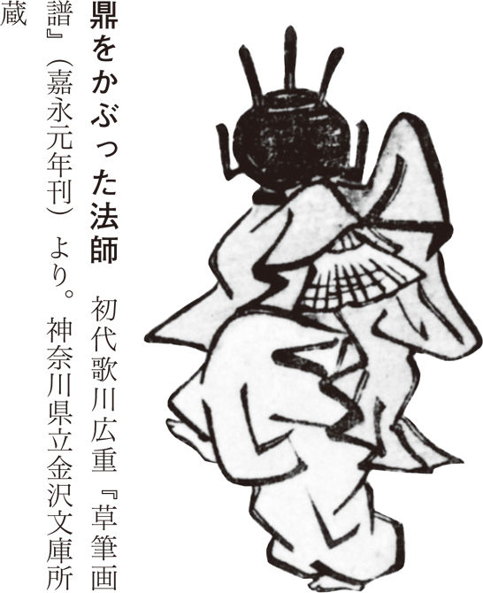
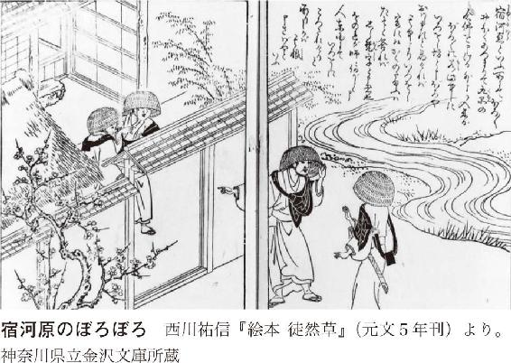
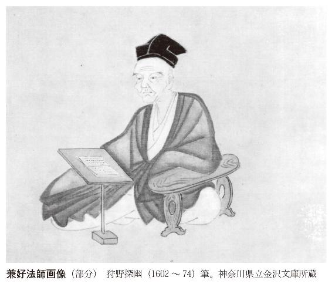
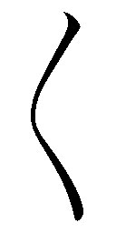
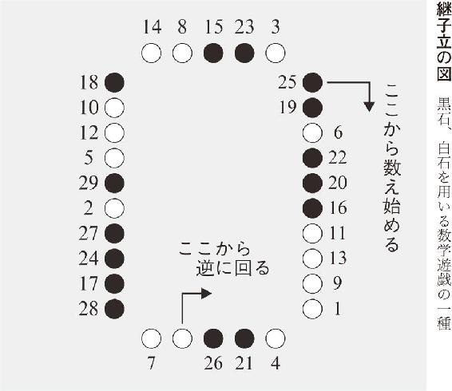
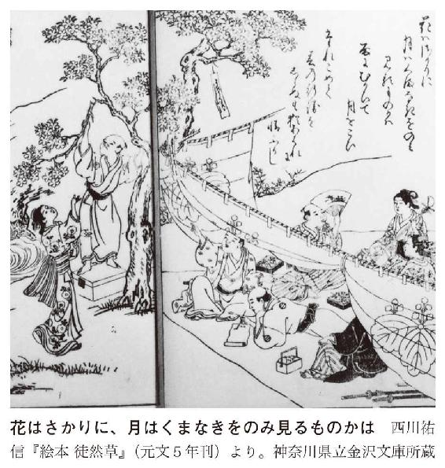

| すらすら読める徒然草 (講談社文庫) | |
| 中野孝次 | |
| 講談社 (2013) | |
本作品は、縦書き表示での閲覧を推奨いたします。横書き表示にした際には、表示が一部くずれる恐れがあります。
ご利用になるブラウザまたはビューワにより、表示が異なることがあります。
すらすら読める徒然草
中野孝次
はじめに
日本の古典文学の中で、『徒然草』は『方丈記』や『平家物語』とともに、わたしの最も親しんできた作品だ。親しむといっても、鑑賞とか研究とはほど遠く、その中の好きな部分を勝手に我流に読んで、それをもって身の養いとしてきただけだから、専門家から見たらずいぶん偏った読み方ということになろう。しかしわたしは普通一般の読者が古典に近づくにはそれが一番と信じているのである。
中には自分で読むより先に、まずカルチャーセンターのような所に通って、専門家から字句や事項の説明を聞き、正しい解釈を知った上でないと古典に近づかない人もいるようだが、それではどこまで行っても古典はわがものにならないのじゃないか、という気がする。古典がわがものになるには、その中の一句半句でもいい、ある言葉に打たれ、それがわが心の内に入り、根づいて、もはや古典の文言なのか、わが言葉なのか、区別がつかないくらいになり、わが生を導くようになることによってだ、とわたしは思う。わたしにとって、『徒然草』はまさにそのようにしてわがものとなった古典だった。
吾が生すでに蹉跎たり。諸縁を放下すべき時なり。信をも守らじ。礼儀をも思はじ。
（第百十二段）
文中にも書いたがこの言葉なぞ、わたしが自主定年と称して五十五歳で勤めを辞する前後から、たえずわが心の中に鳴りつづけた言葉で、これによってわたしは辞める決意を固くし、辞めたあとの生き方を定めたのだった。二百四十三段から成る『徒然草』には人生の折々にそんなふうにわたしの導きの糸になった言葉がいくつもある。
そこで、そういうわたしにとって欠かせぬものとなった文言ばかりを選んで、いわばわが徒然草とでもいったものを作ったら、と思って書いたのがこの「すらすら読める」シリーズの『徒然草』である。ここに取上げた五十九段はすべてわがものになりきったものばかりである。全部が今に生きる言葉であることは自信をもってうけ合える。
ただし、初めに言ったように、おそらく専門家から見たら恐ろしく偏ったものになったことは言を俟たない。ここには有職故実にふれた段は一つもないことをもってしてもそのことは明らかだ。が、これはわたしがそういう段には関心を持てなかったのだから、仕方がないのである。
さもあらばあれ、こういう思い切ったやり方も、まだ『徒然草』を知らぬ現代日本人に『徒然草』の魅力を知らせる一つの試みかと思う。
二〇〇四年二月二十七日
中野孝次
目 次
序段─つれづれなるままに──自分の心と向いあうとき
第八十九段─奥山に、猫またといふものありて──猫またの話
第五十三段─これも仁和寺の法師──仁和寺の法師、鼎をかぶる
第五十段─応長のころ、伊勢の国より──鬼になった女
第二百三十六段─丹波に出雲といふ所あり──お上人さまと出雲の狛犬
第百十五段─宿河原といふ所にて──宿河原のぼろぼろ
第四十段─因幡国に、何の入道とかやいふ者──栗しか食わない娘
第二百九段─人の田を論ずる者──その田を刈りて取れ
第七十四段─蟻の如くに集まりて──東西に急ぎ、南北に走る人
第七十五段─つれづれわぶる人は──しばらく楽しぶ
第百八段─寸陰惜しむ人なし──一瞬の時を惜しめ
第五十八段─道心あらば──心は縁にひかれて移る
第五十九段─大事を思ひ立たん人は──命は人を待つものかは
第三十一段─雪のおもしろう降りたりし朝──雪の朝のたより
第三十六段─久しくおとづれぬころ──仕丁はおりませぬか
第六十二段─延政門院──ふたつ文字、牛の角文字
第三十七段─朝夕、隔てなく馴れたる人の──「よき人」二題
第十五段─いづくにもあれ──旅の効用
第十七段─山寺にかきこもりて──山寺参籠
第九十三段─牛を売る者あり──存命の喜び
第百十二段─明日は遠き国へおもむくべし──吾が生すでに蹉跎たり
第百五十五段─世に従はん人は──死期は序を待たず
第二百四十一段─望月の円かなることは──心身永閑
第四十九段─老来りて、始めて道を行ぜんと──無常を忘れるな
第二百二十九段─よき細工は、少し鈍き刀を──妙観の刀
第百九段─高名の木登りといひし男──木登り名人
第百八十五段─城陸奥守泰盛は──双なき馬乗り
第九十二段─ある人、弓射ることを習ふに──二本の矢
第百十段─双六の上手といひし人に──負けじと打つべきなり
第百八十四段─相模守時頼の母は──松下禅尼の障子つくろい
第二百十五段─平宣時朝臣、老ののち──味噌を肴に
第二百十六段─最明寺入道、鶴岡の社参のついでに──足利の染物
第百四十段─身死して財残ることは──死後に財産を残すこと
第百五十段─能をつかんとする人──下手でもいい
第百五十一段─ある人のいはく──五十になってもダメならダメ
第百八十七段─万の道の人──なぜ専門家はすぐれているか
第百八十八段─ある者、子を法師になして──一事を励むべし
第十三段─ひとり燈のもとに文をひろげて──古典をよむ
第百五十七段─筆をとれば物書かれ──心は必ず、ことに触れて来る
第八十五段─人の心すなほならねば──狂人の真似とて
第七十三段─世に語り伝ふること──虚言について
第二百三十五段─主ある家には、すずろなる人──虚空よく物を容る
第三十五段─手のわろき人の──下手でも自分で書け
第七十二段─賤しげなる物──多すぎるのは見にくい
第七十八段─今様のことどもの珍しきを──流行をもてはやすな
第七十九段─何事も入りたたぬさましたるぞよき──物知り顔をしない
第八十一段─屛風・障子などの──しっかりした品物がいい
第八十二段─羅の表紙は──ととのわぬがよし
第百三十七段─花はさかりに──心眼をもって花や月を見る
第二百十二段─秋の月は──秋の月
第三十九段─ある人、法然上人に──法然上人のこと
第六十段─真乗院に、盛親僧都とて──盛親僧都のこと
第百二十四段─是法法師は、浄土宗に恥ぢずと──是法法師のこと
第百四十四段─栂尾の上人、道を過ぎ給ひけるに──栂尾の明恵上人のこと
第百九十二段─神・仏にも、人の詣でぬ日──神仏に参る日
第百二十七段─改めて益なきことは──改めて悪しきもの
第五十五段─家の作りやうは──夏をむねとすべし
第百七十段─さしたることなくて──用もないのに人を訪ねるな
第百六十四段─世の人相逢ふ時──世間の浮説、人の是非
第二百二十四段─陰陽師有宗入道、鎌倉より上りて──植うることを努むべし
〔序 段〕
つれづれなるままに、日ぐらし、硯にむかひて、心にうつりゆくよしなしごとを、そこはかとなく書きつくれば、あやしうこそものぐるほしけれ。
自分の心と向いあうとき
為すこともなく退屈なまま、日がな一日硯に向って、心に映っては消え、消えては映る埒もないことどもを、浮ぶがまま、順序もまとまりもなく書きつけていると、自分が正気かどうかさえ疑われるような、狂おしい心持ちになってくる。
己が心と相対する
有名な序の段だが、この「つれづれ」とは、為すこともなく退屈で、侘しく、さびしくてならない、というような意味ではない。むしろその反対で、身を閑の状態に置いて、心が外なる物事との交渉を止め、己れの内をのぞきこみ、完全に明確な意識をもって己れと相対している状態を言うのだ、とわたしは解する。それが最善の状態だというのだ。人はこの世に生きているかぎり、ふだんは外界との応接に忙しく、しずかに己が心の声を聴く状態にない。「世に従へば、心、外の塵に奪はれてまどひやすく」（第七十五段）である。それが可能になるのは、自分一人になって、身を「まぎるるかたなく」醒めている閑の状態に置いて、日ごろは放っておく己れの心と相対したときだ。
自分が自分と相対する。自分が、外界のことに気をとらわれることなく、自分の心と向いあう。これは人がつねにやっていることのようでいて、しかし最も行うことの少い行為だ。己れを省みればわかる。人は大抵日がな一日外部との応接に忙殺されて一日を了えているのである。人が己れと相対するためには、何よりも身を閑暇の中において、自分と語り合う時を持たねばならない。そして昔から自分というものにだけ生きようと決意した人は、他のすべてを犠牲にして、そのことに努めてきたのだ。十六世紀フランスの思想家モンテーニュの『エセー』にもこうある。
私は最近、いくらもない余生を平穏と隠遁のうちに送ることにして、できるだけ他のことに心を煩わすまいと決心して自分の家に退いたが、私の精神を、完全な無為のうちに過ごさせ、自分のことだけを考えさせ、自分の中に安住させること以上に、これを大切にする方法はないと思うようになった。
（モンテーニュ著 原二郎訳『エセー』第一巻第八章 岩波文庫 一九六五年）
こう言って公職を辞し、自邸に引退したとき、モンテーニュは幾歳だったかと言えば、現代ならまだ若者のうちに数えかねない三十八歳だった。
兼好が世を捨てて隠棲したのはもっと早く、三十一歳以前と考えられている。そして兼好が『徒然草』の冒頭で言っていることも、まさにモンテーニュと同じこのことにほかならない。そうやって己が心に正直に対していれば、その考えるところ、価値の置き方、物の判断の仕方が、世間並とまったくちがうようになるのは当然だ。世から見ればそれは狂おしいということにもなろう。だが、何とでも思うがいい。わたしはこの「私」の見るところを正しいとし、何と思われようとかまわず書きつけることにした、という直言がこの「序」なのだと思っている。
『徒然草』はそんなふうに、折々の兼好の心に浮かんだ思いを記していった、文字どおりの随筆である。従って中味はいろんな内容のものが雑然と詰っている。整然と秩序だてずにあるから面白いのであって、これをたとえば内容ごとにきちんと分類したりしたら『徒然草』の魅力は失せよう。
ところがわたしは以下で、まさにその内容による分類と秩序づけをやろうとしている。なぜあえてそうするか、といえば、まだ『徒然草』を読んだことのない現代の読者に、第一段からずっと読んでゆけと要求するのは酷だと思うからだ。昨年、わたしはそう考えて『論語』をまとめてみたが、こうしたやり方が現代人を古典に案内するに有効なやり方だとわかった。だからここでも同じ方法を用いてみようというのである。
１ 世俗譚
第八十九段 第五十三段 第五十段 第二百三十六段 第百十五段 第四十段 第二百九段
〔第八十九段〕
「奥山に、猫またといふものありて、人を食ふなる」と人のいひけるに、「山ならねども、これらにも、猫のへあがりて、猫またになりて、人とることはあンなるものを」といふ者ありけるを、何阿弥陀仏とかや、連歌しける法師の、行願寺のあたりにありけるが聞きて、ひとりありかん身は、心すべきことにこそと思ひけるころしも、ある所にて、夜更くるまで連歌して、ただひとり帰りけるに、小川のはたにて、音に聞きし猫また、あやまたず、足許へふとより来て、やがてかきつくままに、頸のほどを食はんとす。肝心も失せて、防がんとするに力もなく、足も立たず、小川へ転び入りて、「助けよや、猫またよや猫またよや」と叫べば、家々より松どもともして、走りよりて見れば、このわたりに見知れる僧なり。「こは如何に」とて、川の中より抱きおこしたれば、連歌の賭物とりて、扇・小箱など懐に持ちたりけるも、水に入りぬ。希有にして助かりたるさまにて、這ふ這ふ家に入りにけり。
飼ひける犬の、暗けれど、主を知りて、飛びつきたりけるとぞ。
猫またの話
「奥山に猫またというものがおって、人を食うということだぜ」とある者が言うと、「なに、山にまで行かずとも、ここらあたりだって、猫の劫を経たのが猫またになって、人を取って食うことがあるっていう話だよ」という者がいた。
これを、何阿弥陀仏とかいう、連歌を渡世とする法師で、京の一条の北の行願寺へんに住んでいるのが聞いて、「やれ、恐ろしや。おれのようにしょっちゅう独り歩きする者は、よくよく用心せねばならぬことだな」、と自分に言いきかせた。ちょうどそのころ、この法師、ある所で夜更けまで連歌をし、ただひとり夜道を帰ってきて、どうやら無事にもう家の近くまで来たと一安心したそのとき、小川のそばで、かねて聞いていた猫またに襲われたのだ。猫または、狙いあやまたず、足許へつつと寄ってきたかと思うと、たちまち法師のからだにかけのぼって、頸のあたりに食いつこうとする。法師は心も肝も潰れ、防ごうにも力も出ない。腰も抜け、立ってもいられず、小川の中に転げこんで、「助けてくれえ。猫またじゃ。猫またが出たあ」と叫ぶばかり。
近くの家々から人々松明をとぼして駆けつけてみると、ここらでよく見かける坊さまではないか。「一体こりゃどうしたことじゃ」と、川の中から抱き起してやれば、連歌の賞品にとってきた扇や小箱など、懐に入れて大事に持ち帰った物も、みな水につかってさんざんの有様。法師は、ともあれ命だけは辛うじて助かったというふうで、歩くこともできず、這うようにして家に入っていった。
法師の飼っていた犬が、闇の中でも主人を見分けて、お出迎えに飛びついたのだったとさ。
〔第五十三段〕
これも仁和寺の法師、童の法師にならんとする名残とて、おのおのあそぶことありけるに、酔ひて興に入るあまり、かたはらなる足鼎＊をとりて、頭にかづきたれば、詰るやうにするを、鼻をおしひらめて、顔をさし入れて、舞ひ出でたるに、満座興に入ること限りなし。
しばしかなでて後、抜かんとするにおほかた抜かれず。酒宴ことさめて、いかがはせんとまどひけり。とかくすれば、頸のまはり欠けて、血垂り、ただ腫れに腫れみちて、息もつまりければ、打ち割らんとすれど、たやすく割れず、響きて堪へがたかりければ、かなはですべきやうなくて、三足なる角の上に、帷子をうち掛けて、手をひき杖をつかせて、京なる医師のがり率て行きける道すがら、人の怪しみ見ること限りなし。医師のもとにさし入りて、向ひゐたりけんありさま、さこそ異様なりけめ。物を言ふもくぐもり声に響きて聞えず。「かかることは、文にも見えず、伝へたる教へもなし」と言へば、また仁和寺へ帰りて、親しき者、老いたる母など、枕上に寄りゐて泣き悲しめども、聞くらんとも覚えず。
かかるほどに、ある者の言ふやう、「たとひ耳鼻こそ切れ失すとも、命ばかりはなどか生きざらん。ただ、力を立てて引き給へ」とて、藁のしべをまはりにさし入れて、かねを隔てて、頸もちぎるばかり引きたるに、耳鼻欠けうげながら抜けにけり。からき命まうけて、久しく病みゐたりけり。
＊足鼎 足の三本ついた金属製の容器。これで湯をわかしたり、物を煮たりした。

仁和寺の法師、鼎をかぶる
これも仁和寺の法師の話。いよいよ稚児が出家得度して法師になる、その美しい童形との別れの宴というので、それぞれが酒をのみ芸をして遊んだとき、一人の法師、酔って浮かれて調子に乗るあまり、かたわらにあった足付き鼎を取って坊主頭にかぶったものだ。つかえて窮屈なのを、鼻を押しひしゃげてむりやり顔を中に押しこみ、舞いいだしたところ、座にいた人々みな笑いころげ興がること限りなかった。
ひとしきり舞い興じたあと、さて抜こうとすると、これが何としても抜けない。酒席もすっかり興醒めしてしまい、どうしたものかと戸惑うばかりだ。あれこれやってみるうち、首のまわりの皮がそげて、血は垂れる、顔全体が腫れに腫れ上って、息までが詰ってきた。この上は叩き割るしかないとやってみたが、銅の鼎の割れようわけもなく、何より音ががんがん響いて我慢ならないから、これも止めざるを得ない。他にどうしようもなくなって、鼎の三足の角の上に帷子を掛け、手を引き、杖をつかせて、京の医者の許まで連れて行った。途中、人々がこれを見て怪しみあきれること限りもない。医者の家に上って、医者と相対した時の有様は、さぞや妙ちきりんなものであったろう。ものを言っても、声がくぐもって、何を言っているのかわからない。結局医者は、「このような症状は医書にも見当らず、口伝の教えにもございませぬな」と言うばかり。
そこでまた仁和寺に戻って、親しい者や、老いた母などが、法師の枕許に坐って、泣き悲しんだものの、その声とて当人に聞えたかどうか。
そうこうして時を過すうち、ある者が言うには、「たとえ耳や鼻は千切れてとれてしまったところで、命までが奪われることはなかろう。皆の衆、ともあれ、力の限り引っ張ってごらんなされ」とのことで、そこで、藁しべを首のまわりにさしこんで、銅と首の縁を切り、首ももぎれんばかりに引きに引いたところ、耳鼻は欠けて穴があいたが、ともかく抜けることは抜けた。この法師、あやうく命一つはとりとめたものの、その後長くわずらっていたということだ。
〔第五十段〕
応長のころ、伊勢の国より、女の鬼になりたるを、ゐて上りたりといふことありて、そのころ廿日ばかり、日ごとに、京・白川の人、鬼見にとて出で惑ふ。「昨日は西園寺に参りたりし」、「今日は院へ参るべし」、「ただ今はそこそこに」などいひあへり。まさしく見たりといふ人もなく、虚言といふ人もなし。上下、ただ鬼のことのみ言ひ止まず。
そのころ、東山より安居院へんへ罷り侍りしに、四条よりかみさまの人、みな、北をさして走る。「一条室町に鬼あり」とののしり合へり。今出川の辺より見やれば、院の御桟敷のあたり、さらに通り得べうもあらず立ちこみたり。はやく跡なきことにはあらざンめりとて、人を遣りて見するに、おほかた逢へる者なし。暮るるまでかく立ち騒ぎて、はては闘諍おこりて、あさましきことどもありけり。
そのころ、おしなべて、二三日、人のわづらふこと侍りしをぞ、かの鬼の虚言は、このしるしを示すなりけりといふ人も侍りし。
鬼になった女
応長のころ、伊勢の国から、女の鬼になったのをつれて上京した者があるという噂が立って、そのころ二十日ばかりというもの、京中から白川辺にかけての人たちは、毎日、鬼を見にいこうと右往左往した。「きのうは西園寺へ行ったそうだ」とか、「今日は院の御所に参るそうだ」とか「今は、それ、そこそこ、あそこだ」などと口々にののしりあっている。そのくせ、自分はこの目でたしかに見た、と言う者もない。また、うそだと否定する人もない。ただもう、身分のあるのもないのも、口にすることといったら鬼の話ばかり。
そのころわたしは用があって、東山から安居院の辺へ出掛けることがあったが、行って見ると、四条から北の方の人がみな、北をさして走ってゆく。「一条室町に鬼がいるぞ」とわめきあっている。今出川の辺から見ていると、上皇御所の桟敷のあるあたりは、とても通りぬけられそうにないほど人がぎっしりつめかけている。それを見てわたしは、じゃ、あの噂は事実無根のことではなかったのだなと思い、人を遣って見にゆかせた。が、一向にそれらしきものに出会ったという者はいなかった。この日はそうやって日の暮れるまで立ち騒いで、ついには、喧嘩沙汰まで起って、まことにあさましいかぎりであった。
そのころ世の中一般に、二三日妙な病気で苦しむことが流行ったが、それを、「あの、鬼が来たという流言蜚語は、この流行り病の前兆だったのだな」と言う人もいた。
〔第二百三十六段〕
丹波に出雲といふ所あり。大社を移して、めでたく造れり。しだの某とかや知る所なれば、秋のころ、聖海上人、そのほかも、人あまた誘ひて、「いざ給へ、出雲拝みに。かいもちひ＊召させむ」とて、具しもていきたるに、おのおの拝みて、ゆゆしく信起したり。
御前なる獅子、狛犬、背きて、後ざまに立ちたりければ、上人いみじく感じて、「あなめでたや。この獅子の立ちやう、いとめづらし。深き故あらむ」と涙ぐみて、「いかに殿原、殊勝のことは御覧じ咎めずや。むげなり」と言へば、おのおの怪しみて、「まことに他に異なりけり。都のつとに語らむ」などいふに、上人なほゆかしがりて、おとなしく、物知りぬべき顔したる神官を呼びて、「この御社の獅子の立てられやう、定めて習ひあることに侍らむ。ちと承らばや」といはれければ、「そのことに候ふ。さがなき童どもの仕りける、奇怪に候ふことなり」とて、さし寄りて、据ゑ直して往にければ、上人の感涙、いたづらになりにけり。
＊かいもちひ ボタモチともソバガキともいい、いまだ定説なし。大槻文彦の国語辞書『大言海』には、春はもちごめにて作り牡丹餅といい、秋はウルチを主とし萩の餅という、とある。北村季吟の『徒然草文段抄』には、「田舎なれば、結構なる馳走はえすまじきなどと、卑下していへるあひさつの詞也」とある。
お上人さまと出雲の狛犬
丹波の国に出雲という所がある。ここに出雲の国の出雲大社を模した、立派な神社が造られている。ここは志太のなにがしという者の所領であって、秋のころ、この男が、聖海上人という坊さまと、俗人を大勢誘い、「さあ、お出かけくだされ、出雲神社参拝に。かいもちいでも御馳走いたそう」と、一同を引きつれて出かけた。みなの者が、立派な社殿を拝んで、大いに信心をおこした。
社前にある獅子と狛犬が、ふつうとは逆に、背中を向けあって立っているのを見て、この上人さまひどく感激してしまった。「ああ、結構なものでござりますな。この獅子の立ちよう、なんとも珍しいものではありませぬか。さぞかし深いいわれがあるのでしょう」と涙ぐんで、「いかに皆の衆、このありがたいことがお目にとまりませぬか。なさけない方たちでござりますな」と言う。そこでほかの者たちもそのさまをとくと見、「本当によそのとは違っておりますな。都への土産話にいたそう」などと言い合った。
上人はなおのことその由来を知りたがり、いかにも長老ふうで、物事をよく知っていそうな神官を呼びとめて、「このお社のうしろ向きの獅子の立てようには、定めしなにか秘伝のことがあるのでござりましょう。ちとそのことをお教えくださいませぬか」と言うと、その神官は、「そのことでござりまするがな。いたずらながきどもがいたしたことでありまして、まことに怪しからんことであります」と言うなり、そばにつと近寄って、獅子と狛犬を向い合せに据え直した。おかげでせっかくの上人さまの感涙もむだな涙になってしまった。
〔第百十五段〕
宿河原＊といふ所にて、ぼろぼろ多く集まりて、九品の念仏＊を申しけるに、外より入り来たるぼろぼろの、「もしこの御中に、いろをし房と申すぼろやおはします」と尋ねければ、その中より、「いろをし、ここに候ふ。かくのたまふは、誰そ」と答ふれば、「しら梵字と申す者なり。おのれが師、なにがしと申しし人、東国にて、いろをしと申すぼろに殺されけりと承りしかば、その人に逢ひ奉りて、恨み申さばやと思ひて、尋ね申すなり」といふ。いろをし、「ゆゆしくも尋ねおはしたり。さること侍りき。ここにて対面し奉らば、道場を汚し侍るべし。前の河原へ参りあはん。あなかしこ、わきざしたち、いづ方をもみつぎ給ふな。あまたのわづらひにならば、仏事の妨げに侍るべし」と言ひ定めて、二人河原へ出であひて、心ゆくばかりに貫き合ひて、ともに死ににけり。
ぼろぼろといふもの、昔はなかりけるにや。近き世に、ぼろんじ、梵字、漢字などいひける者、その始めなりけるとかや。世を捨てたるに似て我執深く、仏道を願ふに似て闘諍をこととす。放逸・無慙の有様なれども、死を軽くして、少しもなづまざるかたのいさぎよく覚えて、人の語りしままに書き付け侍るなり。
＊宿河原 摂津国（大阪府）説と、武蔵国（神奈川県）説の二説があるが、兼好と武蔵国金沢在住者との縁戚関係が明らかになるにつれ、後者説が有力になった。わたしは断然川崎市登戸の宿河原説。こういう俠気は武蔵国にこそふさわしい。

＊九品の念仏 往生の段階に九種類あって（上・中・下掛ける上・中・下）、それを願う念仏のことだろうと思うが、諸説あって、何か不明。
宿河原のぼろぼろ
宿河原という所に、ぼろぼろと呼ばれる者たちが大勢集まって、九品往生を願う念仏を唱えているところへ、外から入ってきたぼろぼろが、「もしやこの中に『いろをし房』と申すぼろはおいでではござりませぬか」とたずねた。すると大勢の中から一人が立ち上って、「『いろをし』ならここにおる。わしじゃ。そう仰せらるる御坊はどなたか」と答えると、先のぼろが言った、「しら梵字と申す者であります。拙者の師匠、なにがしと申す者が、東国で『いろをし』という名のぼろに殺されたと承りましたので、その人にお逢い申して、一太刀恨みを晴らさばやと存じ、尋ねて参りました」。
すると「いろをし」が、「よくぞ尋ねて参られた。たしかにさようなことがござりました。だが、ここで立ち合うては道場の穢れ、前の河原に参ってお相手致そう。あ、いや、皆の衆、どうぞどちらにも加勢なさりまするな。大勢に迷惑をおかけしては、仏事の妨げになりまする」と言い、話が決って、両人は河原に出た。そこで互いに存分に果たし合い、刺し違えて、共に死んだ。
このぼろぼろという者たち、昔はなかったのではないか。近ごろの世に、ぼろんじ、梵字、漢字などという者たちの現れたのが、その起源だということだ。この者たち、世を捨てたようでありながら我執強く、仏道を願うようでいて実は闘諍をこととしている。放埒、恥知らずの者たちであるけれども、死をちっとも恐れず、生命に執着しない様子がいかにもいさぎよく思われたので、人から聞いたままここに書きつけておく。
〔第四十段〕
因幡国に、何の入道とかやいふ者の娘、かたちよしと聞きて、人あまたいひわたりけれども、この娘、ただ、栗をのみ食ひて、さらに、米の類を食はざりければ、「かかる異様の者、人に見ゆべきにあらず」とて、親、ゆるさざりけり。
栗しか食わない娘
因幡の国に何とかいう入道がいたが、その娘が非常な美人だと聞いて、人が大勢求婚したけれども、この娘、日頃ただ栗ばかりを食って、まるで米の類を食わなかったので、「このように異常な者を、人に嫁がすわけにゆかぬ」と言って、親が許さなかった。
〔第二百九段〕
人の田を論ずる者＊、訴へに負けて、ねたさに、「その田を刈りて取れ」とて、人を遣しけるに、まづ、道すがらの田をさへ刈りもてゆくを、「これは論じ給ふ所にあらず。いかにかくは」といひければ、刈る者ども、「その所とても刈るべき理なけれども、僻事せんとて罷る者なれば、いづくをか刈らざらん」とぞいひける。
理、いとをかしかりけり。
＊人の田を論ずる者 『徒然草文段抄』に、「わが田ならぬを無理に論ずるものなり」とある。
その田を刈りて取れ
人の所有する田を、あれはおれが田だと言い張って争っていた者が、訴訟に負けて、悔しさのあまり、「あそこの田の稲を刈り取ってこい」と命じて、そちらに人をやった。ところがその者たち、あろうことか、その田に行きつく先に、勝手に道ばたの田をどこであれところかまわず刈ってゆく。それを見た者が、「これは訴訟で問題になった田ではありませんぞ。なぜそんな乱暴をするのかね」と言うと、刈る者が答えて、「なに、そっちの田だって本来刈り取っていい道理はないのだ。我々はどうせ間違った滅茶苦茶なことをやっているんだから、どこの田を刈り取ったところで同じことさ」と言ってのけたものだ。
この男の屁理屈が、わたしにはなんともおかしかったので、ここに書きつけておく次第。
世俗譚、すなわち小説の傑作選
「序の段」の感想でわたしは、『徒然草』は順序も秩序もなく、兼好の心に映ったままを書きつけたから面白いので、これを秩序づけたら面白くも何ともあるまい、と書いた。
だが、わたしがここでやろうとしているのは、まさにその『徒然草』の魅力を破るかもしれない秩序づけである。同種のものを集めて、かたまりとして呈示し、『徒然草』の魅力をいくつかに構成してみることを、ここで試みてみようというのだ。
それは一つには、現代人にとって──これは『論語』について書いたときも言ったことだが──『論語』や『徒然草』を初めから一つ一つ全部読んでゆくのは、あまりにも難儀であろうと思うからだ。昔の人は古典をありがたがって、おがむようにして対したから、一つ一つ読む苦労にも堪えたろうが、今の人にそれを求めるのはむずかしかろう、とわたしは推測する。
そこで、たとえば「世俗譚」ならそればかりを集め、『徒然草』にはこういうものがありますよ、と知らせることで、『徒然草』に親しんでもらおうというのだ。つまり手引き書、入門書、案内書である。これで『徒然草』に興味を覚えたら、そのときこそ初めから全部読んでもらいたい。
わたし自身は、『徒然草』の全段を、筆で和紙に写したことがあるくらいの『徒然草』愛好者である。筆写というのは最良の読書の方法だとそのとき思ったが、『徒然草』は、文章がくどくなく短くて、そのどれもが筆写に値する名文ばかりだから、それもできたことだ。
さて、そこで初めは「世俗譚」の傑作選である。
『徒然草』の面白さの一つが、世俗譚の面白さにあることは、今更言うまでもないが、ここに集めた七篇だけでも、読めばわたしの言うことは噓でないと納得されるだろうと思う。たんに題材が面白いばかりではない、その必要にして十分なことだけを語る、簡潔できびきびした描写の仕方、文章の力が相俟って、どれもが極上の短篇小説を読むよろこびを与えてくれる。
初めの「猫また」からして、最高の短篇小説だ。
Ａ ａ 「猫また」という恐ろしい怪物についての巷説が紹介される。
ｂ 立ち聞きした法師の心に恐怖と空想が生じる。「恐しいことじゃ。ひとり歩きするおれなどは、よほどに用心せねばならぬな」。
ｃ 法師は、連歌を渡世の業とし、行願寺辺に住んでいる。
Ｂ ａ 夜更け、闇の中、ただひとりで帰る。恐怖が空想で力をえてふくれあがる。
ｂ 家近くまで帰ってきたと安心したとたん、けものがとびつき、首を舐める。
ｃ 法師の恐怖が爆発し、防ぐ力もなく、川にとびこみ、助けを呼ぶ。
ｄ 松明を持った人々が来て、法師を助ける。この辺の人だとわかる（前の紹介がここで利いてくる）。
ｅ 連歌の賞品が川に浮かび、連歌師の生態をあらわす。
ｆ 法師、ほうほうの態で這って家に入る。
Ｃ 法師の飼っていた犬が主人を出迎えたのを、「猫また」と思いこんだことが、明らかにされる。
こうやって箇条書きにしては面白くも何ともなくなるが、兼好がいかに周到な用意をして全体を語っているかが、これでもわかるだろうと思う。夜更けに闇の中をひとり帰ってきたという状況を書くだけで、その間法師がいかに恐れ、猫また空想がふくれあがっていったかを、書かずとも読者に想像させる。名人の芸とはそういうものだ。
ただひとり帰りけるに、小川のはたにて、音に聞きし猫また、あやまたず、足許へふとより来て、やがてかきつくままに、頸のほどを食はんとす。肝心も失せて、防がんとするに力もなく、足も立たず、小川へ転び入りて、「助けよや、猫またよや猫またよや」と叫べば.........
この叙述のリズム、力強さ、印象の深さ、ただもう舌を巻く巧さだ。これが兼好の文章の力、『徒然草』の力なのである。
二番目の、鼎をかぶって踊りだし、満座の興を買ったものの、いざ抜こうとすると抜けなくなった仁和寺の法師の話は、滑稽と悲惨が一つになった話で、これも描きようによってはただグロテスクになるところを、法師の困惑しきった姿を描きながら、どこかにおかしみがあるところが、書き手の力量だ。それはとくに、法師を京の医者へつれてゆくところ、その道中、さらに医師と鼎法師の対座のところなどからくるものだ。医者というのは昔から、気取ったもの、勿体ぶったもの、それでいてあまり頼りにならぬものである。そういう医者の姿と、問いに答えはすれど何と言っているのかわからぬ鼎をかぶった男の対比を、
医師のもとにさし入りて、向ひゐたりけんありさま、さこそ異様なりけめ。物を言ふもくぐもり声に響きて聞えず。「かかることは、文にも見えず......
と書く。この剽げた味わいが何とも言えない。
田辺爵著『徒然草諸注集成』（一九六二年）に、このとき鼎をかぶった法師が踊りつつ歌ったのは、『梁塵秘抄』の、「我をたのめて来ぬ男、角三つ生ひたる鬼になれ。さて人に疎まれよ」だったろうという推測がのせてあるが、この本文には「三足なる角の上に」とあり、兼好が『梁塵秘抄』の歌詞を念頭においたことは十分ありうると思われる。
三番目の鬼になった女の話は、実体がなくてただ群集の大騒ぎだけがある。つまり流言蜚語を描いた名篇で、虚実皮膜の間というか、こういう実在するかしないかわからぬものに狂奔する人間（猫またもそうだった）を描くとき、兼好の筆は一入興に乗る。わあわあと走り回る群集、その騒ぎ、土埃までが見えるようだ。文学者兼好の力量の存分に発揮された、『徒然草』中の名文の一つと言ってよい。
四番目のお上人さまの感涙と実際との落差がかもす、おかしさ、みっともなさも、虚と実を同時に描くことで生じる面白さで、これまた実に巧い。しかし、やたらに感激する上人の滑稽を描いても、ここに意地の悪さはない。「いかに殿原」とわざわざみんなにも強制したのは、こういうありがたいことがわからんのか、と怒っているのだ。ところが神官の返事は、意外なもので、獅子と狛犬をさっさと据えなおしていってしまう。「上人の感涙、いたづらになりにけり」と兼好はあっさり書くが、一緒にいったお連れの忍び笑いも目に見えるようである。
五番目の「宿河原のぼろぼろ」は、都と宮廷の話の多い兼好にしては珍しいテーマで、東国の「ぼろぼろ」という不思議な集団を描く。仇討ちをしようとやってきた者と知りながら、ただちに死を決意して「ゆゆしくも尋ねおはしたり」と、受けて立つ「ぼろぼろ」の姿に、兼好は心を動かされたのだ。「わきざしたち、いづ方をもみつぎ給ふな」というのもいさぎよい。そこにいるのは自分の仲間ばかりで、全員が自分を助太刀するに決っているから、あえてあらかじめ断っておくのだ。そして二人とも河原に出て「心ゆくばかりに貫き合ひて、ともに死」んでしまう。
こういう武士でもなく法師でもなく、男伊達とでもいうしかない新しい人間の型が生れていたのである。諸注釈書は、この「ぼろぼろ」がのちの俠客の源泉だろうという。
これもまた兼好の世相描写の傑作で、仇どうしでありながら二人のぼろぼろの言葉遣いの丁寧なところが、まことに気持よく、また死を恐れずさっと受けて立ち、しかも仲間の助太刀を断るあたり、颯爽とした男伊達ぶりであって、これあればこそ兼好も心を動かされて書いたのであろう。
それにしても、とかく京の、しかも宮廷や貴族のことに関心が深いらしい兼好が、一方では東国のこういう新しい人間のタイプに興味をよせている点が面白い。
六番目の「栗しか食わない娘」の話は、評論家小林秀雄が『無常といふ事』の中で、「鈍刀を使つて彫られた名作のほんの一例」として取上げて以来有名になった段で、たしかにこの入道の心を想像していると、「これは珍談ではない。徒然なる心がどんなに沢山な事を感じ、どんなに沢山な事を言はずに我慢したか」という小林秀雄の言葉ももっともだという気がしてくる。しかし本当のところは、わたしにはわからない。ただ話としていかにも面白いと思うだけだ。
最後の話。田の所有権で争っていた者が、訴えに負けた口惜しさに、問題の田の稲を刈り取ってしまえと命じて、作男らを刈りにやらせる。ところがその者たち、問題の田に行く途中の関係のない田まで勝手に刈り取ってゆくので、人が注意したところ、「俺たちはどうせ間違ったことをしにゆくんだ、向うの田だって刈ってはならないものを刈るんだ、ならどの田を刈っても同じことではないか」と屁理屈をこねる。
それを兼好は、おかしかったというのだ。
おそらくこれは当時の現実の世相であろう。そんなことがしょっちゅう起っていたにちがいなく、兼好はそんなあらあらしい無秩序の社会に生きていたのである。なにしろこれは『太平記』の時代だ。
兵の、軍に出づるは、死に近きことを知りて、家をも忘れ、身をも忘る。
（第百三十七段）
これはたんなる譬えでなく、現実だったのだ。
純然たる空想物語と、体験した話と
それにしても兼好は、こういう世俗譚をどこから仕入れたのだろう、とわたしは思う。鼎をかぶった仁和寺の法師の話は、兼好はその辺に住んでいたことがあるから、近くのことだし、これだけの騒ぎが耳に入らぬことはなかろう。聞くともなく聞いて、自分でそのさまを想像し、あまりに面白いので一つの短篇に仕上げたのだろう、と推測される。
この話の前にも、仁和寺の老法師が初めて石清水八幡宮に詣でたときの失敗譚があるし、後にも、美しい稚児を誘い出して遊ぼうと企てた僧たちの失敗譚がのっている。当時の僧たちの美童にうつつを抜かす堕落ぶりがよく描かれていて面白いが、こういうのは話の入ってきた道筋が想像つく。
また、兼好自身かなりの好奇心の持主で、何かがあれば自分の目で確かめずにいられなかったことは、「女の鬼になりたる」話で、彼自身が騒ぎの中に入っていったことでわかる。しかし、「猫また」の話とか、東国の「ぼろぼろ」の話とか、丹波の出雲での聖海上人の勘違いの話などは、一体どうしてどこから仕入れた材料か。兼好は人の話を根ほり葉ほりくわしく問いただす人ではなかったに決っているが、さりとて世俗のいろいろな出来事に無関心だったわけではない。それどころか、彼の人間への興味を持つアンテナはつねに敏感に世の中に向って張られていたのであり、それにたまたまひっかかったのがこれらの短篇の話だったにちがいない。すなわち原則としてそれらはすべて創作である。材料はあったとしても、その光景を兼好は見たわけでなく、脳裡に思い浮かべたのだ。その出来事、起った順序、光景、心理、登場人物の人柄・性格、それらを想像裡に作りだして、メリハリをつけ、テンポある文章に仕上げたのだ、とわたしは思う。だから面白いのである。世の中のこと「まことはあいなきにや」なのだ。
そういう話の傑作の一つが、第六十八段「筑紫に、なにがしの押領使」の話である。からだにいいというので大根を朝ごとに二本ずつ焼いて食っていた押領使が、あるとき不意に家人の留守を見はからって押し寄せた敵兵に襲われた。あわやと思われたとき、どこからともなく見知らぬ武者二人現れて、「命を惜しまず戦ひて」敵をみな追いはらった。「日ごろここらで見かけぬ方達なのに、こうまで懸命に戦われるとは、どういうお方であるか」と押領使が聞くと「年頃頼みて、朝な朝な召しつる、土大根らに候ふ」と答えた。侍はいつも食っている大根の化身だったのだ。物には精があるというが、どんなものでも深く信ずればその精が現れて報恩するというのだろう。
これなぞもむろん兼好は、噂に聞いて興味を覚え、作品になるとして書いたものだろうが、兼好の創作方法を示す一例ではある。
そういう純然たる空想物語と、彼がその目でじかに見た物語と、二種類の話がある。どっちがいいとは言えないが、第四十一段「五月五日、賀茂の競べ馬を見侍りしに」の話のように、兼好自身の体験の話の方は、どちらかというと理屈がちになる傾きがあるようだ。教訓話、ないし世相批評の要素が強くなるのだ。人で一杯でよく見えぬので木の股に坐って競馬を見物していた法師が、そんな所でこっくりこっくりしだして、危うく落ちそうになっては、そのつど目をさます。それを見た人々が「なんという愚か者よ。あぶない木の上で安心してねるとは」というのをきいて、兼好は「我々だって死が到来するのは今この時かもしれぬではないか。なのにそれを忘れて、こんな物見見物をして日を暮らす。愚かさはこっちの方が上かもしれない」と思ったというのだ。理屈ではあるが、後の方に出てくる生死に関する話ほど面白くはない。これは若い時に書いたものかもしれない。
２ しばらく楽しぶ
第七十四段 第七十五段 第百八段 第五十八段 第五十九段
〔第七十四段〕
蟻の如くに集まりて、東西に急ぎ、南北に走る。高きあり、賤しきあり。老いたるあり、若きあり。行く所あり、帰る家あり。夕に寝ねて、朝に起く。いとなむところ何事ぞや。生をむさぼり、利を求めて、止む時なし。
身を養ひて、何事をか待つ。期するところ、ただ、老と死とにあり。その来ること速かにして、念々の間に止まらず。これを待つ間、何の楽しびかあらん。まどへる者は、これを恐れず。名利に溺れて、先途の近きことをかへりみねばなり。愚かなる人は、またこれを悲しぶ。常住ならんことを思ひて、変化の理を知らねばなり。
東西に急ぎ、南北に走る人
（人の生とは何か？ 試みに街角に立って眺めて見るがいい）
人が蟻のように集ってきて、東に西に急ぎ、南に北に走ってゆく。身分の高い者がいれば、卑い者もいる。老者がいれば、若者もいる。これらの人はみな、用があって行く所があり、帰ってくる家がある。夜になれば寝、朝が来れば起きる。彼らのこのような生の営みは、いったい何のためなのか？ 要するに、少しでも長く生きたい、もっと金を儲けたいの一心で、かくあくせくと生き働いているだけではないか。
だが、そんなふうにわが身大事に生きて、将来に何を求め、期待するというのか？ 待ちうけるものは、ただ、老いと死しかない。しかも老いと死の来ることは速やかであって、一刻もとどまることがない。休みなくたしかな足取りで一歩一歩近づいてくるそれを待つあいだ、生きていてなんの楽しみがあろう、楽しみなどあるはずがない。ただこの世のことに夢中になっている者のみは、この老いと死を恐れない。彼らは名誉と利益に溺れて、老いと死の近いことを顧みもしないからだ。一方、愚かな者は、ひたすらただその来ることの速やかなのを思って悲しんでばかりいる。生きていたいとばかり願って、この世に常住なるものはなく、万物は変化流転するという大理法を知らないからだ。
〔第七十五段〕
つれづれわぶる人は、いかなる心ならん。まぎるるかたなく、ただひとりあるのみこそよけれ。
世に従へば、心、外の塵に奪はれてまどひやすく、人に交れば、言葉、よその聞きに随ひて、さながら、心にあらず。人に戯れ、物に争ひ、一度は恨み、一度は喜ぶ。そのこと、定まれることなし。分別みだりに起りて、得失止む時なし。惑ひの上に酔へり。酔の中に夢をなす。走りて急がはしく、ほれて忘れたること、人みなかくの如し。
いまだまことの道を知らずとも、縁を離れて身を閑かにし、事にあづからずして心を安くせんこそ、しばらく楽しぶとも言ひつべけれ。「生活＊・人事＊・伎能＊・学問＊等の諸縁を止めよ」とこそ、摩訶止観＊にも侍れ。
＊生活 ショウカツと読む。生計のためにあくせくすること。
＊人事 ニンジと読む。「人間の事に交わりあずかること」と、林羅山による『徒然草』の注釈書『野槌』にある。
＊伎能 よろずの芸能のこと。『摩訶止観』第六章第四項に、「三に、伎能とは、医方・卜筮・泥木・彩画・棊・書・咒術等これなり」とある。
＊学問 内外の書を読み習うこと。『摩訶止観』に、「四に、学問とは、経論を読誦し問答勝負する等これなり。領持し記憶すれば心労れ志倦む。言論往復すれば水濁り珠昏し、なんの暇あってかさらに止観を修することを得んや。このこと、なお捨つ、いわんやまえの三務をや、云々」とある。
＊摩訶止観 仏教書。天台三大部の一。隋の智者大師の説法を弟子の章安が筆録したもの。現在手に入れやすいのは岩波文庫（上・下 関口真大校注 一九六六年）だろう。なお、前出の引用文は、同書によった。
しばらく楽しぶ
何もせずひとりきりでいるのを、侘しくてならぬといって嘆く人が多いが、あれはどういう了見だろう。世事に東奔西走する必要もなく、外のことに気を紛らわされることもなく、身を閑の中に置いて、我ひとり醒めているくらいいいことは、他にないではないか。
考えてもみるがいいのだ。世間の仕組みに従って生きようとすれば、外のつまらぬ事柄に心をとられて、我が我でなく、いろんな迷いが起きやすい。世間並にすれば人と付合わずにすまされないが、人と付合えば、もしや人の気に逆らいやせぬかと心配になって言いたいことがあっても言えぬ。人の御機嫌とりには言いたくないことも口にせねばならぬ。これでは何を言っても、言うことがまるで自分の心のようではない。また、世間に生きれば、人とふざけたりもする。人と争いもする。あるときはしてくれなかったと恨み、あるときはしてくれたといって喜ぶ。そんなふうに心が絶えず外のことに動かされて、一時として安定している折がない。分別心がむやみとさかんになって、絶えずこれは得か損かと利害得失ばかり考えている。
その状態はまさに「惑い」にほかならず、惑いながら酔っぱらって、酔った中で夢をみているようなものだ。自分でも何をしているかわからないのである。なぜそうしているかもわからぬまま、年がら年中忙しく走りまわり、ぼうとしたまま生死の一大事を忘れて生きているのだ。世間を見わたせば、世の人の生き方とはみなそんなふうではないか。世間並に生きればそうなるしかないのである。
しかし、そうでない生き方もある。まだ本当の道がわかるところまで行っていなくとも、世間との縁を切って身を閑の状態に置き、俗事にはいっさいかかわらず、心を安らかに自由にしておくのこそ、この短い人生をしばらくでも楽しむ生き方と言うべきだろう。それこそが人生を楽しむ道だ。
「生活・人事・伎能・学問等の諸縁を止めよ」と、『摩訶止観』にもある。
〔第百八段〕
寸陰惜しむ人なし。これ、よく知れるか、愚かなるか。愚かにして怠る人のために言はば、一銭軽しといへども、これを重ぬれば、貧しき人を富める人となす。されば、商人の一銭を惜しむ心、切なり。刹那覚えずといへども、これを運びて止まざれば、命を終ふる期、たちまちに至る。
されば、道人は、遠く日月を惜しむべからず。ただ今の一念、空しく過ぐることを惜しむべし。もし、人来りて、我が命、明日は必ず失はるべしと告げ知らせたらんに、今日の暮るる間、何事をか頼み、何事をか営まん。我等が生ける今日の日、何ぞ、その時節に異ならん。一日のうちに、飲食、便利、睡眠、言語、行歩、止むことを得ずして、多くの時を失ふ。そのあまりの暇いくばくならぬうちに、無益のことをなし、無益のことを言ひ、無益のことを思惟して時を移すのみならず、日を消し、月を亘りて、一生を送る、もつとも愚かなり。
謝霊運＊は、法華の筆受なりしかども、心つねに風雲の思ひを観ぜしかば、恵遠＊、白蓮の交りを許さざりき。しばらくもこれなき時は、死人に同じ。光陰何のためにか惜しむとならば、内に思慮なく、外に世事なくして、止まん人は止み、修せん人は修せよとなり。
＊謝霊運 三八五～四三三年。中国南北朝時代、宋の詩人。文章は天下一といわれたが放縦で、謀反の罪で殺された。
＊恵遠 三三四～四一六年。中国東晋の高僧。中国浄土教の創唱者。慧永ら十八賢と白蓮社を結んで、念仏を唱え、衆百二十三人とともに浄土の業を修した。
一瞬の時を惜しめ
世の中を見るに、寸陰というようなわずかな時間だとこれを惜しむ人がいない。これは、惜しむに足らぬという理を知ってそうしているのか、愚かで寸陰の尊さを知らずにそうしているのか。
（理を知ってそうしている人には何も言うことはないが）愚かで時をぞんざいに扱っている人のために言うなら、一銭はそれ自体はごく軽少なものだが、これを積み重ねれば、貧しい人をも富んだ人にする。だから商人が一銭を惜しむ気持はあのように切実なのだ。一刹那というのは過ぎるのが意識もできぬくらいの瞬時だが、これをずっと先まで運んでゆけば、命を終える時がたちまちにやってくる。
だから、仏道修行を志した人は、漠然とはるかな月日を惜しむようではいけないのだ。今この一瞬の時が、空しく過ぎてゆくのをこそ惜しまねばならない。もし人が来て、「お前の命は、明日は必ずなくなるぞ」と告げ知らせたとしたら、今日一日を過ごすあいだ、何を頼みとし、何をしたらいいか。
（だが、これを仮のことと思ってはいけない）我々が生きている今この時こそ、まさに、その明日がないと告知された時にほかならないのだ。
一日のうちに、食事をしたり、便所に行ったり、睡眠をとったり、会話したり、歩いたり、どうしても必ずせねばならぬことがあり、それをするだけで既に多くの時を失う。その余りの時はいくらもないのに、それを、無益なことをしたり、無益なことをしゃべりちらしたり、無益なことを考えたりして時を過すばかりか、それが積み重なって一日が消え、月となり、一生を送るのである。なんと愚かなことではないか。
謝霊運は法華経の翻訳を筆録したほどの人だったが、心の中でつねに政治的野心を思い描いていたから、恵遠は彼が白蓮社の仲間に入ることを許さなかった。寸陰というわずかの時をも惜しむ心がない時は、その人は死んでいるも同然である。時間を何のために惜しむかと言えば、心の内にはつまらぬ思慮分別を起すことなく、外には世間の俗事と関わることなく、閑を得て満足する人はそれを楽しみ、さらに修行しようと志す人は修行するがいいということだ。
〔第五十八段〕
「道心あらば、住む所にしもよらじ。家にあり、人に交はるとも、後世を願はんにかたかるべきかは」と言ふは、さらに、後世知らぬ人なり。
げには、この世をはかなみ、必ず、生死を出でんと思はんに、何の興ありてか、朝夕君に仕へ、家を顧みる営みのいさましからん。心は縁にひかれて移るものなれば、閑かならでは、道は行じがたし。
その器、昔の人に及ばず、山林に入りても、餓を助け、嵐を防ぐよすがなくてはあられぬわざなれば、おのづから世を貪るに似たることも、たよりにふれば、などかなからん。
さればとて、「背けるかひなし。さばかりならば、なじかは捨てし」など言はんは、むげのことなり。
さすがに、一度道に入りて世を厭はん人、たとひ望ありとも、勢ある人の貪欲多きに似るべからず。紙の衾＊、麻の衣＊、一鉢のまうけ、藜の羹＊、いくばくか人の費えをなさん。求むる所は得やすく、その心はやく足りぬべし。
かたちに恥づる所もあれば、さはいへど、悪には疎く、善には近づくことのみぞ多き。
人と生れたらんしるしには、いかにもして世を遁れんことこそ、あらまほしけれ。偏へに貪ることをつとめて、菩提に趣かざらんは、よろづの畜類に変る所あるまじくや。
＊紙の衾 和紙で作った寝具。
＊麻の衣 僧の着る衣。『方丈記』に「藤の衣、麻の衾」とある。
＊藜の羹 野草のアカザで作る粗末な吸い物。
心は縁にひかれて移る
「求道心がありさえすれば、住む所はどこでもいいのではないか。わが家にいて俗人と付合っていても、後の世の救いを願うことができないわけではあるまい」などと言うのは、後世願いの何たるかがまるでわかっていない人だ。
本気で、真剣に、この世のはかなさを知り、必ずや生死の迷いを脱却して、菩提に達しようと思ったならば、何が面白くて朝夕主君に仕えたり、一家を営むのにあくせくしたりする気になれようぞ。人間のこころというものは、環境との関係ですぐに変るものだから、身を閑の状態に置くのでなければ、本当の仏道修行は為しがたいのである。
仏道修行者としての器量のことを言うなら、今の人はとうてい昔の修行者に及ばない。だから世を捨てて山林に入っても、腹が飢えぬようにするとか、雨風の入りこまぬ用意をするとか、そういう生活手段への配慮をせずにはやっていけない。となれば、どうしても必然的に、俗人が物欲を逞しくするのに似た仕業を、当人にその気はなくとも、してしまうことがないわけにはゆくまい。が、だからといって、「それじゃ世を捨てた甲斐もないではないか。そんなことをするなら、なぜ世を捨てたのだ」などと非難するのは、当らないのである。
そこは何と言っても、ひとたび世を捨てて仏道に入った人は、俗人とは違うのだ。たとえ衣食住への配慮をすると言っても、現世の勢力家たちの物欲の旺んなのとはまるっきり違う。彼らが望むのは、せいぜい、粗末な紙の衾、麻の衣、一鉢の食いもの、あかざの吸い物程度で、こんな物をやったところでどれだけ世の費えになろうや。求めるのは軽少なものばかり、容易に手に入って、得られれば彼らはそれで満足するのだ。だから、世俗に似たことをしているからといって、出家の意義そのものを否定するのは間違っている。頭を丸め墨染の衣を着る身であれば、何といっても、その姿にみずから恥じて、悪事からは遠ざかり、善には近づくことが多いのだ。
そういうことだ。ゆえに、人間として生れてきたからには、生れたしるしのためにも、なんとしてでも世を捨てて仏道に入るのが、望ましいことなのである。一生涯ただ欲望を満たすことばかりに熱中して、心の救済をはからないような者は、けものや虫けらと一向に変らないではないか。
〔第五十九段〕
大事を思ひ立たん人は、去りがたく、心にかからんことの本意を遂げずして、さながら捨つべきなり。「しばし。このこと果てて」、「同じくは、かのこと沙汰し置きて」、「しかじかのこと、人の嘲りやあらん。ゆくすゑ難なくしたためまうけて」、「年来もあればこそあれ、そのこと待たん、程あらじ。物騒がしからぬやうに」など思はんには、え去らぬことのみいとど重なりて、ことの尽くる限りもなく、思ひ立つ日もあるべからず。おほやう、人を見るに、少し心あるきはは、みなこのあらましにてぞ一期は過ぐめる。
近き火などに逃ぐる人は、「しばし」とやいふ。身を助けんとすれば、恥をも顧みず、財をも捨てて遁れ去るぞかし。命は人を待つものかは。無常の来ることは、水火の攻むるよりも速かに、遁れがたきものを、その時、老いたる親、いときなき子、君の恩、人の情、捨てがたしとて捨てざらんや。
命は人を待つものかは
出家遁世というような人生の一大事を行おうと思い立った人は、たとえどんなに棄てがたく心にかかることがあっても、なしとげるまで待とうとせず、中途半端なままでもただちにそっくり棄てなければいけない。「もうちょっとだからこのことをやりおえてから」とか、「同じことならあのことも片付けてから」とか、「これこれのことをやりかけのままにしておいては人の嘲りを受けよう、将来後くされのないよう片付けておいて」とか、「これまで何年もこうしてやってこられたのだ。あのことを待ったとて、そう長くかかるまい。あわててとり乱さぬようにしよう」などと思ったら、どうにも避けられぬことばかりますます重なって、しなければならぬことが次から次へ起って際限もなく、とうてい大事を決行する日が来るわけもない。大体世間の人を見るに、少し物のわかったくらいの人は、みな、そんなふうに先のことを考えているうちに一生を了えてしまうようだ。
近くに火事が起って逃げる人が「ちょっと待って」などと言おうか。わが身を助けようと必死になるなら、恥もかまわず、財産も捨てて逃げ去るものだ。（待てと言ったところで）命が人を待ってくれようか。しかも死の来ることは、水や火が攻めるより早く、逃れがたいものである。そのときになって、年とった親、幼ない子、君の恩、人の情などを、捨てがたいからといって捨てないわけにいかないではないか。
心の声を聴く生き方を
ここに集めた文章群こそ、『徒然草』の中心をなす思想だ。それを兼好は、あるいは、
いまだまことの道を知らずとも、縁を離れて身を閑かにし、事にあづからずして心を安くせんこそ、しばらく楽しぶとも言ひつべけれ。
（第七十五段）
というふうに穏やかに言う。まだ本当の道、仏道の極意を知らなくても、すなわち真の悟りにはまだ達していなくても、俗世の縁を断って身を閑の中に置き、心を安らかに保つならば、それこそこの短い人生をしばらく楽しむと言えよう。悟りを開いた人と同じ生き方と言えよう、というのだ。
そして、なぜそうせねばならぬかといえば、それは老と死の来ること実に速やかだから、という認識がある。
身を養ひて、何事をか待つ。期するところ、ただ、老と死とにあり。その来ること速かにして、念々の間に止まらず。
（第七十四段）
この死の来ることの迅速さという認識は、『徒然草』全体の基調低音のようなものだ。いたる所でそれが鳴っている。
であるのに人はどう生きているかと言えば、死の来ることなどずっと先のことで、今から心配したり恐れたりするのはバカだ、といわんばかり。ただ毎日の暮しの中に溺れている。
いとなむところ何事ぞや。生をむさぼり、利を求めて、止む時なし。
（第七十四段）
この、死の来ることの迅速さ、人の営みの愚かしさの認識が、人はただちにすべてを捨てて道に入れ、入ろうとせよ、というすすめになる。
大事を思ひ立たん人は、去りがたく、心にかからんことの本意を遂げずして、さながら捨つべきなり。
（第五十九段）
生きているかぎり、人はこの世のさまざまな係累にしばられて、あれをしておかねば、これをこうしておかねば、というようなことの絶える折がない。だから、それらを全部片付けてから道に入ろうとしてはダメなのだ。そんなことは、中途半端でも何でも、ただちにうっちゃって、道に入れ、とすすめる。
しかし、兼好のは、坊さんがきまりきった無常を説くのとちがって、彼自身の痛切な体験から発した声、何よりも己れ自身に言いきかせる言葉だから、読む者の心にひびくのだ。「命は人を待つものかは」というこの表現の切実さは、そのことをつねに実感している者でなければ言えない。
だから、兼好は、人が到底実現できぬようなきびしすぎることをすすめてはいない。仮に世を捨て、山林に入っても、嵐をふせぐ住居はいる。着るものはいる。日々の食いものはいる。そういう物の確保のためには、俗世での暮しも同じことをし、それなら何もわざわざ世を捨てるに及ばぬではないか、というようなこともあろうと、それを認めるのだ。同じ乞うのであっても、世を捨てた人の要求は、実につつましやかなものだ。必要最小限のものを得ようとするに、世間の人のような醜い欲望は必要ない。すぐにそれは得られる。そして何よりも、身を閑に置けば、それが道に近いことは間違いないのだ、という。
わたしはこれらのすすめを、頭で生きる生活から、心の声を聴く生き方に変えよ、というすすめにとっている。俗世間の中で生きていれば、仕事にしろ人間関係にしろ、利害得失の計算で、人は頭の働きばかりの暮しをし、自分の心をのぞくということができない。それはただ身を閑の中に置くことによってのみ可能になることだ。
まぎるるかたなく、ただひとりあるのみこそよけれ。
（第七十五段）
なのである。自然の中で鳥や風の音に耳をすまし、宇宙と一つになった己れを感じる。そういうとき、人はいかなる心配事からも離れ、自由で、恐れるものが何一つない。完全に自分自身と一つになり、自分を受け入れ、全的に肯定した心境になっている。悟りとはそういうことだ、とわたしは思い、兼好の説く所をそういう意味に解して、わが心の養いとしている。これらの言葉はしばしば念頭に浮び、わたしを力づける。
兼好の智慧とセネカの智慧と
わたしはここ数年ローマの哲学者・政治家セネカの文章に惹かれて、くり返し読んでいるが、この二千年前のローマ人の言葉に『徒然草』とそっくりの言葉がいくらもあるのを知って驚いている。智慧というものは古今東西を問わず同じ所に達するのか、とも思った。
セネカもまた、死はいつやってくるかしれぬものだから、つねにそれを迎える覚悟をしておけ。明日ありと思うな、今日一日が君の全人生だと思って生きよ、と言う。人間には過去もなく未来もなく、「今ココニ」という時だけがある。なのにその今ここに生きる自分の生を楽しまず、未来のよい生活のために今を犠牲にして生きるとは、なんと愚かなことか、と言う。
また、これこそまったく同じだが、哲学（兼好にあっては仏道）に志したなら、なぜ君はただちにそれに専念する生活にとびこまないのだ。このことを片付けてからとか、あのことをやり終えてからとか、今の地位が要求する義務を果たしてからとか、そんな吞気なことを言って先送りしていては、いつまでたっても道に入る時は来ないぞ。すべてを棄てて今ただちに道に入れ、というのも兼好とまったく同じだ。
大事を思ひ立たん人は、去りがたく、心にかからんことの本意を遂げずして、さながら捨つべきなり。
（第五十九段）
セネカ自身も、そのことを身をもって苦しんだ。哲学に専念したくても、ネロの家庭教師に任命され、ネロが皇帝になってからはその政治上の輔佐役として、全部で十四年間も哲学に専念できぬ辛さを味わった。彼が自由を得たのは、むりやり身をひきはがすようにしてその要職から退いたときだった。
おそらく兼好も、早く道に入って専念したいと思いながら、将軍足利尊氏の執事の高師直や何や彼や、当時の権力者の頤指に従わねばならぬ状態がつづいて、ためにこのように切に道を恋うる思いを書いたのではないか。兼好の場合もセネカの場合も、その体験から思想が出てくるから、その言葉が生きているのだ。
３ なんとなくいい話
第三十一段 第三十六段 第六十二段 第三十七段 第十五段 第十七段
〔第三十一段〕
雪のおもしろう降りたりし朝、人のがり言ふべきことありて、文をやるとて、雪のこと何とも言はざりし返事に、「この雪いかが見ると一筆のたまはせぬほどの、ひがひがしからん人の仰せらるること、聞き入るべきかは。返す返す口をしき御心なり」と言ひたりしこそ、をかしかりしか。
今は亡き人なれば、かばかりのことも忘れがたし。
雪の朝のたより
いい風情に雪の降った朝、頼みごとがあってある人のもとに手紙を送ったが、中に雪について何も記さなかったところ、返事に、「この雪をどう見ているところかと、一言書き添えるくらいの風流心もない方の頼みごとなど、誰が聴いてさし上げるものですか。返す返す情ないお方ですこと」と言ってきたのこそ、まことにおもしろかった。
もう亡くなった人だけに、こういった小さなことまでが忘れがたい。
〔第三十六段〕
「久しくおとづれぬころ、いかばかり恨むらんと、我が怠り思ひ知られて、言葉なき心地するに、女の方より、『仕丁＊やある。ひとり』など言ひおこせたるこそ、ありがたく、うれしけれ、さる心ざましたる人ぞよき」と人の申し侍りし、さもあるべきことなり。
＊仕丁 雑役に使われる男衆。
仕丁はおりませぬか
「久しく訪れないでいるので、どんなに恨んでいるだろうと、無沙汰にしてきた自分の怠慢が気になり、言いやる言葉もないでいるころ、女の方から『手空きの仕丁はおりませぬか、一人でいいのですが』などと言ってきたときは、めったにないことに出会った気がして、まことにうれしい。そんな気立ての人がいいなあ」とある人が言ったが、本当にそのとおりである。
〔第六十二段〕
延政門院、いときなくおはしましける時、院へ参る人に、御言つてとて申させ給ひける御歌、
ふたつ文字、牛の角文字、直ぐな文字、歪み文字とぞ君は覚ゆる
恋しく思ひ参らせ給ふとなり。
ふたつ文字、牛の角文字
延政門院がまだごく幼なくあらせられたころ、後嵯峨上皇の御所へ参上する人に院へのおことづけとして歌を作られた。それは、
ふたつ文字（こ）、牛の角文字（い）、直ぐな文字（し）、歪み文字（く）とぞ君は覚ゆる
というものであった。父君を恋しく思い参らせるということを謎歌で告げられたのだ。
〔第三十七段〕
朝夕、隔てなく馴れたる人の、ともある時、我に心おき、ひきつくろへるさまに見ゆるこそ、「今更、かくやは」など言ふ人もありぬべけれど、なほ、げにげにしく、よき人かなとぞ覚ゆる。
疎き人の、うちとけたることなど言ひたる、また、よしと思ひつきぬべし。
「よき人」二題
朝夕へだてなく馴れ親しんでいる人が、何かの折にふと、こちらに距離をおいて、ふだんと変った、とりすました態度を見せると、「いまさら、なにもそうかしこまることもあるまいに」などと言う人もあるが、わたしはそうは思わない。そういうのこそまことに好ましい人であるよと思われる。
ふだんそう親しくしていない人が、何かの折にうちとけたことなど言うのも、これまた、いかにも好ましく思われる。
〔第十五段〕
いづくにもあれ、しばし旅立ちたるこそ、目さむる心地すれ。
そのわたり、ここかしこ見ありき、ゐなかびたる所、山里などは、いと目慣れぬことのみぞ多かる。都へ便り求めて文やる、「そのこと、かのこと、便宜に忘るな」など言ひやるこそをかしけれ。
さやうの所にてこそ、よろづに心づかひせらるれ。持てる調度まで、よきはよく、能ある人、かたちよき人も、常よりはをかしとこそ見ゆれ。
寺社などに忍びて籠りたるもをかし。
旅の効用
どこへでもいいが、しばらく旅に出てよそに滞在するのこそ、いかにも新鮮な感じがするものだ。
その辺をここあそこと見て歩けば、田舎ふうな所や山里には、見慣れぬ珍しいことがたくさんある。伝手を求めて都のわが家へ手紙をやるにも、「そのこともあのこともみなそのついでついでに忘れないでやっておいておくれ、忘れてはいけないよ」などと言いやるのも面白い。
そういう所では何事につけても気働きさせられるようになる。持っていった道具なども、よいものは家で見るよりよく見えるし、芸のある人、姿形のいい人も、都で見るより味わい深く見える。
寺や社に、人知れず幾日かお籠りするのも、同じように面白い。
〔第十七段〕
山寺にかきこもりて、仏に仕うまつるこそ、つれづれもなく、心の濁りも清まる心地すれ。
山寺参籠
山寺にこもって、人にも会わず、ひたすら仏にお仕えするのがいい。そういうときこそ、退屈することもなく、心の濁りも清まる気持がする。
日々を新しい心で生きる
人の振舞いもそうだし、言葉の言い回しもそうだが、ちょっとしたことで品よくしゃれたものにも、品悪く泥臭いものにもなる。そういう行動、表現の微妙なニュアンスについて、兼好は非常に敏感なセンスの持主だった。
一番目の「雪のおもしろう」の話は、「この雪いかが見ると一筆のたまはせぬほどの、ひがひがしからん人の」という言い方が、なんとも愛敬があり、「返す返す口をしき御心」という非難にも甘やかなひびきがあって、このわざとした咎めだてが手紙をしゃれた、風流っ気のある、面白いものにしているのだ。そしてそれが「今は亡き人」という一言で、しみじみとした、懐しいものに転じている。こんな手紙を貰ったらうれしかろう、というものになっている。わたしはむろんこれは女性であって、しかもかつて兼好と親しい間柄にあった聡明な人だろうと思う。
二番目のも、手紙のちょっとした言葉遣いによって、人間関係が気持いいものになる好例だ。「仕丁やある。ひとり」とは、なんともしゃれているではないか。しばらく訪れないで気が咎めていた相手から、こんな手紙がとどいたら、「ありがたく、うれしけれ、さる心ざましたる人ぞよき」と、わたしでも言いたくなる。小気のきいた、さっぱりした人柄がわかる。作者自身の体験だろう。むろんこれも女性であって、「妻といふものこそ、男の持つまじきものなれ」（第百九十段）と、驚くべき宣言をした兼好は、このような小気のきいた、聡明な女たちとの交遊があって、その魅力をあまりによく知りすぎていたのかもしれない。
三番目の、歌の詠み手延政門院は後嵯峨院の皇女、一二五九年（正元一）生れ。後嵯峨院崩御の一二七二年（文永九）には十四歳だから、この話は門院の六歳から十四歳までのことだろうという。
ふたつ文字とは「こ」、牛の角文字とは「い」、直ぐな文字とは「し」、歪み文字とは「く」。「こいしく」お慕い申しておりまする、ときどき来てください、という心を伝えたのだ。幼い子とはいえ、これまたしゃれたものだ。
四番目のは、ふだん親しくしている人（女性か）が、何かの折にふと改まった丁寧な口調で、他人行儀にふるまったり、逆にそう親しくしているわけでない人が、何かの折にうちとけた調子で話しかける。人間関係はこういうちょっとしたことで新鮮になるという指摘で、これが兼好の「よき人」というものかと思わせる。
五番目のは、何も遠国への大旅行でなくともいい。ちょっとした場所の変化で、物が新しく見えることがある。これも日々を新しい心で生きる工夫である。
『徒然草』も初めの方は、こういう趣味の善し悪しを論じた、短いがなんとなくいい話が並んでいる。
お終いの話は、この風情がただなんとなくいいから取り上げたのだが、この「つれづれもなく」──退屈なこともなく──の言葉をとって、兼好の仏道修行は「信仰三分、趣味七分」だと国文学者沼波瓊音（一八七七～一九二七年）は言っている。わたしは沼波氏の『徒然草講話』（一九二五年刊）の訳と評に最も感心している者だが、氏のこの説だけはいただけない。兼好の信仰は専門の僧侶のように型にはまったものではなくとも、深いところで出家遁世の心に徹していること、『徒然草』の生死についての論すべてからうかがえることだ。この段のよさも、人目に立つ、これ見よがしの、派手な勤行をきらい、自分一人、誰見る人もないところで、仏に花を供え、経を誦する、そのすがすがしい心持の良さを言ったのだ、とわたしは解する。兼好にあるのは自己の自己に対する関係である。そうやって人とも会わず山寺にこもっていれば、「心の濁り」──煩悩・貪欲・瞋恚・愚痴──といった世間に生きていれば必ず生ずる浅ましいものも清くなる気がするというのだ。半僧半俗の自由な境界に生きる人にふさわしい心持ではないか。
４ 生死
第九十三段 第百十二段 第百五十五段 第二百四十一段 第四十九段
〔第九十三段〕
「牛を売る者あり。買ふ人、『明日、その値をやりて、牛を取らん』といふ。夜の間に牛死ぬ。買はんとする人に利あり。売らんとする人に損あり」
と語る人あり。
これを聞きて、かたへなる者のいはく、
「牛の主、まことに損ありといへども、また、大きなる利あり。その故は、生あるもの、死の近きことを知らざること、牛、すでにしかなり。人、また同じ。はからざるに牛は死し、はからざるに主は存ぜり。一日の命、万金よりも重し。牛の値、鵞毛よりも軽し。万金を得て一銭を失はん人、損ありといふべからず」
と言ふに、皆人嘲りて、
「その理は、牛の主に限るべからず」
と言ふ。
またいはく、
「されば、人、死を憎まば、生を愛すべし。存命の喜び、日々に楽しまざらんや。愚かなる人、この楽しびを忘れて、いたづがはしく外の楽しびを求め、この財を忘れて、危く他の財を貪るには、志満つことなし。生けるあひだ生を楽しまずして、死に臨みて死を恐れば、この理あるべからず。人みな生を楽しまざるは、死を恐れざる故なり。死を恐れざるにはあらず、死の近きことを忘るるなり。もしまた、生死の相にあづからずといはば、実の理を得たりといふべし」
と言ふに、人、いよいよ嘲る。
存命の喜び
「ここに牛を売ろうという者がいる。買おうという者が現れ、『明日代金を払って牛を受け取る』、と約束した。ところがその夜のうちに牛が死んだ。買う約束をした者は、代金を払ったあとで牛が死んだのではないから、得をしたな。売ろうとした者は、代金を受け取ったあとで牛が死んだのではないから、損をしたな」と話す者がいた。
するとこれを聞いて、そばにいた者が言った、「牛の持主はたしかに損をしたにちがいない。だが、一面では大きな利益を得たとも言えるのではないか。というのはだ、大体いのちあるものはみな自分の死の近いことを知らない。牛だってそうだ。きゃつはまさかその夜に自分が死ぬとは知らなかったろう。人間だって同じことだ。今回は思いがけず牛が死んで、人間は死ななかったが、それはたまたまそうなっただけのことだ。牛の方が死なないで、人間の方が死んでいることだってあり得た。それを思えばその人は自分が死ななかったことをよほどにありがたいと思わねばならぬ。一日のいのちは万金よりも重いという。それにくらべたら牛の値など鵞毛より軽いではないか。彼は万金を得て、一銭を失っただけだ。その人間が損をしたなどと、どうして言えるか」。
それを聞くと、その場にいた者がみな嘲って言った、「そんな理屈はなにも牛の持主に限らんだろうが。無事に生きている者はたくさんいる。その連中がみな万金を得たとでもいうのか」。
すると先の者がさらに話をつづけて言った、「だからだ、人がもし本当に死を憎むのなら、生きてある今を愛せよ、というのだ。いのちあって今を生きているこの喜び、これをこそ毎日楽しまないでどうする。ところが愚かな者は、この最高の喜びを忘れて、骨折ってわざわざそれ以外の楽しみを求める。生きてあるというこの自分にそなわった財を忘れて、危険をおかしてわざわざ自分の外にある財を求めるが、そんなことをして欲望の満足する時のあるはずがあろうか。生きているあいだ生を楽しまないで、もう死ぬという時になって死を恐れる。こんなバカらしい話があろうか。人がみな生を楽しまないのは、死を恐れないからだ。いや、死を恐れないのでなく、死が近いことを忘れ、自分はそうすぐには死なぬと思っているからだ。しかしまた世の中にはひょっとして、自分は生死というような境界は超越しているという者もあるかもしれない。その人は本当の悟りを得ている人と言うべきだ」と。
そこで人々はますますこの屁理屈屋を嘲った。
〔第百十二段〕
明日は遠き国へおもむくべしと聞かん人に、心閑かになすべからんわざをば、人言ひかけてんや。
にはかの大事をも営み、切に歎くこともある人は、他のことを聞き入れず、人の愁へ、喜びをも問はず。問はずとて、などやと恨むる人もなし。
されば、年もやうやうたけ、病にもまつはれ、いはんや世をも遁れたらん人、また、これに同じかるべし。
人間の儀式＊、いづれのことか去りがたからぬ。世俗の黙しがたきに随ひて、これを必ずとせば、願ひも多く、身も苦しく、心の暇もなく、一生は、雑事の小節にさへられて、空しく暮れなん。
日暮れ、塗遠し。吾が生すでに蹉跎たり＊。諸縁を放下すべき時なり。信をも守らじ。礼儀をも思はじ。この心をも得ざらん人は、物狂ひともいへ、うつつなし、情なしとも思へ。毀るとも苦しまじ。誉むとも聞き入れじ。
＊人間の儀式 この人間は個々の人でなく、世の中、人間界の意。これが今いう人間のように使われだしたのは室町のころからという。
＊吾が生すでに蹉跎たり 蹉跎は「つまずいて進まない」の意。自分の人生は、万事うまくいかず、つまずいてばかりいて、もうこれ以上先へ進みそうにない。そこをわたしは、自分の人生はもうケリがついた、これだけのものとわかった、ととった。
吾が生すでに蹉跎たり
明日彼は遠い国へ旅立つそうだと聞いて知っている人に向って、誰が、心の落着いた時でなければできないことを、これをやってくれと頼んだりするだろうか。
とつぜん何か一大事に遭遇した人、大変な悲嘆に襲われた人は、その一大事や悲嘆で心が一杯で、それ以外のことなど何を言っても耳に入るわけがない。そういう人は自分のことで一杯で、他人の身に不幸なことや喜びごとがあっても、訪ねて行きはしない。訪ねて行かなくても、なぜあの人は来ないのだと恨む人もいない。事情を知って、その気持を察するからだ。
年とって次第に老いてきたうえに病にもとりつかれた人とか、まして世を捨てた人などは、大事に心をとられているという点で、これらとまったく事情は同じだと言っていい。どんな義理を欠いていても許されるのだ。
人間界の儀式は、どれをとってもしないですませられるようなものはない。世間の習慣、価値観、決り事を無視できないで、いちいちそれを守ろうとしたら、やらずにすませられることなど何一つない。が、万事そんなふうにしていたら、こうあれかしという願いごとも多くなる。したくないこともせねばならず、身も苦しくなる。心の安らかな折とてもない。そして、そんなふうに生きていたら、一生はつまらぬ小さな事どもにかまけ、妨げられているうちに、空しく暮れてしまうのだ。
だが、見よ、はや日は暮れかけたのに道は遠い。わが人生は、がたがたし、すでにケリはつき、これだけのものとわかった。今こそ世間とのもろもろの縁を断ち切るべき時だ。もはや約束をも守るまい。礼儀も考えまい。すべての義理を欠いて、己れの心一つに生きよう。この自分の決意を理解できない人は、あいつは気が狂ったとでも何とでも言うがいい。正気ではないのだ、人情というものがないのだとでも、何とでもそしるがいい。非難されようが自分は気にしない、誉められても耳に入れまい。
〔第百五十五段〕
世に従はん人は、まづ、機嫌＊を知るべし。序悪しきことは、人の耳にも逆ひ＊、心にも違ひて、そのこと成らず。さやうの折節を心得べきなり。
ただし、病を受け、子生み、死ぬることのみ、機嫌をはからず、序悪しとてやむことなし。
生・住・異・滅＊の移り変る、まことの大事は、猛き河のみなぎり流るるが如し。しばしも滞らず、ただちに行ひゆくものなり。
されば、真俗＊につけて、必ずはたし遂げんと思はんことは、機嫌をいふべからず。とかくのもよひなく、足を踏み止むまじきなり。
春暮れてのち、夏になり、夏はてて、秋の来るにはあらず。春はやがて夏の気を催し、夏よりすでに秋は通ひ、秋はすなはち寒くなり、十月は小春の天気、草も青くなり、梅もつぼみぬ。
木の葉の落つるも、まづ落ちて芽ぐむにはあらず、下より萌しつはるに堪へずして落つるなり。迎ふる気、下に設けたる故に、待ちとる序はなはだ速し。
生・老・病・死の移り来ること、また、これに過ぎたり。四季はなほ定まれる序あり。死期は序を待たず。死は前よりしも来らず、かねてうしろに迫れり。人みな死あることを知りて、待つことしかも急ならざるに、覚えずして来る。沖の干潟はるかなれども、磯より潮の満つるがごとし。
＊機嫌 時機、都合、しおあい、タイミング。
＊耳にも逆ひ 「命惜む病人の前にて死をかたるたぐひ」と『徒然草文段抄』（北村季吟）にある。
＊生・住・異・滅 生は、生れ出ること。住は、人間社会に住んで老いの身となること。異は、病をうけて異形となること。滅は、死去すること。
＊真俗 「出世間と俗世間の二諦をいふ」と『野槌』（林羅山）にある。
死期は序を待たず
世の中で仕事をしてゆこうとする人は、何よりもまず物事を行う時機を知らなければならない。事を行う順序、始める時機が悪いと、言っても人に聞いてもらえず、相手の考えとも合わないで、まずそのことは成功しない。人に聞いてもらえる絶好の時機をはからなくてはダメなのだ。
だが、物事万事がその通りかといえば、そればかりとは言いきれないのである。病気になる、子供を産む、死ぬ、この三つの大事には時機のよしあしなんてことは言っていられない。今はついでが悪いからといって、止んではくれないからだ。こればかりは時、所をかまわずやってくる。
仏法では人間生死の相を、生、住、異、滅の四つ、有為の四相を以て説く。それらの次々に来るさまの猛烈にして迅速なこと、さながら荒れ狂う暴河の水が漲り溢れゆくに似て、瞬時もとどまらず、ひたすらただ押し進んでゆくというのだ。
だから、心の救済に関することであれ、俗世間の仕事のことであれ、これだけは必ずやりとげようと思うことがあったら、そのときは時機のよしあしなど言っていてはいけないのだ。あれこれ用意などせず、足踏みなどしていないでただちにどしどし歩きださねばならない。
では四季の転移の相はどうか。春という季節が暮れきって夏になるのではない。夏という季節が終って秋になるのではない。春はそれ自身の中にすでに夏の気を催している。夏の中にすでに秋の気配が通っているのだ。秋になれば秋の中にはや冬の気が入っていて寒くなる。冬もまた、十月には小春と呼ばれる日和があるように、その中に春の気をふくんで、草も青々としだし、梅の蕾もふくらむ。
木の葉の落ちるのもそうだ。まず葉が落ちきって、それからそのあとに芽が生じてくるというのではない。葉があるうちに下から新芽がきざしふくらんでくるので、押しあげるその力に堪えきれなくなって古い葉が落ちるのだ。すべてこのように、今の季のうちに次を迎える気を下に設けてあるために、新を待ちうける順序がかくも速く行われるのだ。
だが、人間の生れる、老いる、病気にかかる、死ぬこと、すなわち生老病死の移り変るさまの速いことといったら、これは自然の季の変化どころでない、もっともっと迅速だ。なぜなら、四季にはなんといっても春夏秋冬というきまった順序がある。変化は速いといってもその順序に従って行われる。が、人間の場合、死はそんな順序などにかまわずいきなりやってくる。しかも前からやってくるとばかりは限らない。後からだってやってくる。人はみな自分もいずれは必ず死ぬ、人間は死ぬべき存在だということは知っている。が、大抵は誰も、自分の死ぬのは今日明日のことではないと思いこんでいる。死がそんなに急にやってくるとは思っていないものだ。ところが死は、そんな人の思惑をこえて、いきなりそこにやってくる。その死のやってくることの急なことはちょうど、沖の干潟はまだはるか向うまで水につらなっていないから、潮のくるのはまだまだ先のことだなと思っていると、沖の干潟は変らないのに、なんと自分の背後の磯のあたり、はやもうみるみる潮が満ちてきているようなものだ。

〔第二百四十一段〕
望月の円かなることは、しばらくも住せず、やがて欠けぬ。心とどめぬ人は、一夜の中に、さまで変るさまも見えぬにやあらん。
病の重るも、住する隙＊なくして、死期すでに近し。されども、いまだ病急ならず、死に赴かざるほどは、常住平生の念＊に習ひて、生の中に多くのことを成じて後、閑かに道を修せんと思ふほどに、病を受けて死門に臨むとき、所願一事も成ぜず。いふかひなくて、年月の懈怠を悔いて、このたび、もし立ち直りて命を全くせば、夜を日に継ぎて、このこと、かのこと、怠らず成じてんと願ひを起すらめど、やがて重りぬれば、我にもあらず取り乱して果てぬ。この類のみこそあらめ。このこと、まづ、人々、急ぎ心に置くべし。
所願を成じて後、暇ありて道に向はんとせば、所願つくべからず。如幻の生の中に、何事をかなさん。すべて所願みな妄想なり。所願心に来たらば、妄心迷乱すと知りて、一事をもなすべからず。ただちに万事を放下して道に向ふ時、障りなく、所作なくて、心身永く閑かなり。
＊住する隙 ある状態にとどまっている間。
＊常住平生の念 この人間社会は平穏なままずっと変らずつづき、自分はいつまでも安楽に生きていられるという思い。自分に死が来ることなど考えぬいい気な人間ということだが、世間一般の人はこんな気持で暮しているのだ。
心身永閑
十五夜の月のまん丸な姿は、少しのあいだも同じ状態に止まっていないで、すぐに欠けてゆく。一夜のうちにも形が変ってゆくのだが、その気で見ていない人にはそうとはわからないだろう。
人の病気が重くなるのもそれと同じことで、病気が同じ状態に止まっていることはない。目にはそうとわからなくても病状は休まず進行しているのであって、だからたちまちに死期が迫ってくるのだ。が、病気になっても、まだそう重くもならず、すぐにも死ぬというふうでないときは、人生はいつまでもつづくものだと思っている普段の気持のまま、命あるうちにあれやこれや多くの事を成しとげておこう、それから閑かに仏道を修行しよう、などと思っている。が、そのあいだにも病勢は休まず進行しつづけていたのであって、気がついた時にはもう目の前に死が迫っているが、望んだ仕事などまだ一つとして成就していない。まことにつまらんことをしてきたものだと、そのときになって、これまでの歳月、仏道修行専一にせず怠ってきたことを悔いる。そして、この度この病気がもしかして治って命を全うすることができたら、今度こそ夜昼ぶっ通しで、このこともあのことも、絶対に怠らずにやってやりとげようと願いを起すようだが、病状がいよいよ重く死が迫ると、ただもう動転して、取り乱したまま死んでゆく。世の中、そんな類の人たちばかりだ。だから、死はただちにくるというこの一事を、人は何よりもまず心に置かねばいけない。
やっておきたいことをやりとげたら、それからゆっくり仏道修行に入ろうなどと思っていたら、そんな願望は後から後から増えて尽きる折がないのである。この幻のようにはかない生のあいだに、君はいったい何をしようというのか。
願望などはすべて、みな妄想である。願望が生じたら、これはみな自分の妄りな心が迷い乱れてこんな願望を起したのだと思って、一つ事でもしようと思わぬがいい。人はただちにすべてのことを放棄して道に向うべきであり、そうして初めて心に何のわずらいもなく、為すべきこともなく、心身ともにいつまでも穏やかでいられるのだ。
〔第四十九段〕
老来りて、始めて道を行ぜんと待つことなかれ。古き墳、多くはこれ少年の人なり。はからざるに病を受けて、たちまちにこの世を去らんとする時にこそ、始めて、過ぎぬる方の誤れることは知らるなれ。誤りといふは、他のことにあらず、速かにすべきことを緩くし、緩くすべきことを急ぎて、過ぎにしことの悔しきなり。その時悔ゆとも、かひあらんや。
人はただ、無常の身に迫りぬることを心にひしとかけて、束の間も忘るまじきなり。さらば、などか、この世の濁りも薄く、仏道を勤むる心もまめやかならざらん。
「昔ありける聖は、人来りて自他の要事を言ふ時、答へていはく、『今、火急のことありて、既に朝夕に逼れり』とて、耳をふたぎて念仏して、つひに往生を遂げけり」と、禅林の十因に侍り。心戒＊といひける聖は、あまりにこの世のかりそめなることを思ひて、静かについゐけることだになく、常はうづくまりてのみぞありける。
＊心戒 遁世者。『平家物語』『発心集』などに名前が見える。念仏者たちの聞書集『一言芳談』に「心戒上人、つねに蹲居し玉ふ。或人其故を問ひければ、三界六道には、心やすくしりさしすゑて、ゐるべき所なきゆゑ也、云々」とある。
無常を忘れるな
仏道修行は年を取ってからだがきかなくなってからやればいい、元気なうちはせいぜい楽しく暮そうやなどと考えて、のんびり構えていたのではダメだ。みたまえ、古い墓は、多くが少年のものではないか。
大抵の人は、思いもかけず病気にかかり、すぐにももうこの世を去らねばならぬという時になって、そのとき初めて、これまでの自分の生き方の誤っていたことを悟るのだ。過ちというのは別のことではない。ただちに始めなければならなかったこと（仏道修行）を、のんきに構えて放っておき、放っておいてもかまわぬこと（世俗の用事）を急いでやったりして、うかうかと今日まで過して来たことを、その時に臨んで悔やむことだ。だが、今に死ぬというときになって後悔したとて、それが何になろう。
だから人は、無常（己れ自身の死の時）がつねに身に迫っていることを心にしっかりとどめて、ちょっとの間も忘れてはならぬのである。その一事さえ心にあれば、この世のさまざまな誘惑にもひっかからず、仏道にはげむ気持も必ずや真剣なものになるだろう。
「昔ある偉いお上人がいて、その方は、人が来て自他双方にとっての重要事を相談しようとするときでも、『今、わたしには大至急にせねばならぬことがあってな、それがもうすぐそこに迫っているのじゃ』と言い、耳をふさいで念仏して、ついにみごとな往生を遂げた」と、『往生十因』という書物にある。
また心戒という、これまた大変にすぐれた坊さまは、人間の一生などはまことにはかなく短いものだと、つねづねあまりにも強く思っていたものだから、静かに安坐していることさえしないでいつもしゃがんだ恰好ばかりなさっていたということだ。
心身永閑──『徒然草』のモチーフ
ここに集めた五つの文章は、２章の「しばらく楽しぶ」の章に集めた文章とともに、『徒然草』の中心を貫く思想で、わたしなどはこれらの文章によって『徒然草』の核心を知った気がしたのであった。２章の文章が、一大事を思い立った者はただちにそれを実行せよとすすめるのに対し、ここではなぜそうしなければいけないかの理由として、それは死の来たること速やかだからというその一事をいろんな角度から取り上げて説く。一つ一つの文章の迫力は、これらの段にあるものが『徒然草』の中で最も強い。
たとえば初めの「存命の喜び」の段にある一句、
されば、人、死を憎まば、生を愛すべし。存命の喜び、日々に楽しまざらんや。
（第九十三段）
を、わたしはこれぞ言葉の中の言葉と思い、六十過ぎてのち、これをお経の文句のように絶えず口中に唱え、生きてある一日をありがたく受け、しばらくでも楽しもうと努めてきた。そういう意味でこの短い言葉は、そのままで一つの思想をくっきりと表わしているのだ。ある思想がこのようにわずかな言葉で明確に描かれることは、めったにあるものではない。
しかし、この強い、強すぎる断定の出し方が、実にしゃれている。強い言葉は、強ければ強いほど毒のように作用しもするから、そのことをおもんぱかって兼好は、この思想の表現の仕方にドラマ形式を選んだ。街頭での何でもない人の話を取り上げ、枕にするのは兼好の得意技だが、ここでも牛が死んだという話を聞いた「かたへなる者」が、したり顔に小理屈をこねた形にし、しかもその説を「皆人嘲りて」という受け取り方をされたとしているのだ。さらにこの「人、死を憎まば」の中心思想をのべたのに対しては、「人、いよいよ嘲る」だったと記しておく。
文章の達人兼好の用意は実に周到というべきで、そういうドラマ形式の中の発言、しかも世間一般の人には嘲られる、受け入れられない意見だったとして出しているからこそ、これは『徒然草』全体の余裕ある気分にも合し、人に受け入れられるものとなった。
兼好は「序段」で、心にうつりゆく思いを書きつけていると、自分が正気かどうかもわからぬ気がしてくる、「あやしうこそものぐるほしけれ」と書いていたが、世界一般の価値観とまるでたがうこういう思想が浮んでくることこそ、「ものぐるほし」いことだったのだ。
しかし、物事を根本から考えるとき、世の中でひろく行われている考えや、物の見方、価値の置き方と、自分のそれとがまるで違ってくるのは必然的なことであって、どんな時代、どんな国でも、この対立はあったのだ。わたしは今二千年前のローマに生きた哲学者、政治家セネカに夢中になっているが、生と死についてのセネカの考えと兼好の考えとがあまりにも似ていることに驚いている。セネカもこう言うのだ。
そのために僕は、僕にとって一日が全人生であるように生きようと努めている。決してそれを最後の一日としてひっ摑むのではない。そうではなくて、それが最後の一日であるかもしれぬと見做すのだ。
そのような気分で──これを書いているまさに今、死が僕を呼びに来るかのような──僕は今君に手紙を書いている。僕は立ち去る心構えができている。だからこの人生を楽しんでいる。人生がどれほど長くつづくかということに、もうあまり重きを置かなくなったからだ。老年を迎えるまで僕はよく生きようと心掛けてきた。老年になった今はよく死ぬことを心掛けている。よく死ぬとはしかし、よろこんで死ぬということだ。
（セネカ「道徳に関するルキリウスへの手紙」〈私訳〉）
これなぞは『徒然草』のすぐ隣りに置いて考えるにふさわしい言葉だ。セネカもまた、生きるのは「今ココニ」の時しかないと言っているのだ。
二番目の文章にも、わたしが自主定年と称して五十五で勤めを辞めたとき以来、絶えず口に唱え、みずからをはげましてきた言葉があり、これあるがゆえに『徒然草』がわたしにとって身近な古典になったのであった。
日暮れ、塗遠し。吾が生すでに蹉跎たり。諸縁を放下すべき時なり。
（第百十二段）
これも言葉の中の言葉と思い、筆にも書き、口にも唱え、人にも説いてきたが、この段は初めは客観的に諄々と道理を説いてきたのが、「日暮れ、塗遠し」からとつぜん切迫した、はげしい主観の表白となって人を驚かす。が、強烈な主観の直言「信をも守らじ。礼儀をも思はじ。この心をも得ざらん人は、物狂ひともいへ」があるからこそ、この文章は比類のない力強さ、言葉の喚起力、説得力を得たのだ。これまた文章の達人なればこそ為しえた、突然の転調である。
この言葉を唱えていると、自分の心のためにだけ生きようという決意がふつふつと湧いてくる。そして事実わたしはこれを唱えだして以来、冠婚葬祭の義理すべてを放棄し、パーティはすべて欠席、夜の会合には出ず、ただ己が心のために生きようとしてきた。そういう、人の生き方を決める力が、この短い文章にはある。
ここでまたセネカを引用するが、セネカも道（哲学）に入ろうとするなら、ただちにすべてを捨てて入らなければダメだと、はげしい言葉で 咤する。
咤する。
そんなものはすべて直ちに投げ棄てよ！ 君が賢いなら、いや賢くなろうと願うなら、直ちにそうせよ。そして全速力で、全力をあげて、よき心性に達しようと努めよ。もし君を拘束するものがあったら、直ちに離れよ、離れられなければ断ち切れ！
（セネカ「道徳に関するルキリウスへの手紙」〈私訳〉）
兼好が「世俗の黙しがたきに随ひて、これを必ずとせば......一生は、雑事の小節にさへられて、空しく暮れなん」というのとまったく同じことを、セネカは雄弁に説き聞かせ、その上で、兼好がとつぜん文章をがらっと変えて「日暮れ、塗遠し」と強い主観を口にするように、セネカもこの強い言葉を相手のルキリウスへ投げつけているのだ。洋の東西を問わず、真の道へ入ろうと志しながら、この世のことにとらわれてぐずぐずためらっているのが人の常だったのだ。
三つ目の話。これも『徒然草』中の名文の代表であって、初めは世に従う人は「機嫌を知るべし」とおだやかな苦労人のようなことを言いだしながら、「まことの大事」の前には「機嫌をいふべからず」と否定する。
それから一転して、自然の推移についての実にすぐれた観察となり、「まづ落ちて芽ぐむにはあらず、下より萌しつはるに堪へずして落つるなり」の名文句を生みだす。これもまた一度聞いたら忘れられぬ言葉で、わたしはこれを知って以来、季節の折々に木々を見るときこれを思いださずにいられない。
しかしその自然の秩序、序についての思考は、生老病死についてのみは序がないと持ってゆくための準備なのだ。
四季はなほ定まれる序あり。死期は序を待たず。
（第百五十五段）
無常を説くにこんな鮮やかな説き方が、かつてあったろうか。まことに目をもって明らかに見るがごとくに、秩序ある自然と、運命に弄られる人の命とをくっきりと対比させて、そうして言う。
死は前よりしも来らず、かねてうしろに迫れり。人みな死あることを知りて、待つことしかも急ならざるに、覚えずして来る。沖の干潟はるかなれども、磯より潮の満つるがごとし。
（第百五十五段）
これほどの名文というものに、人はめったに出会えるものではない。モンテーニュの『エセー』にも、同じような考えを説いた文章があるが、こんな切れ味よいものではない。
四番目と五番目は、前に「しばらく楽しぶ」のところでも説いていたと同じ、老い来って道を行じようなどと思うな、ただちに今それを始めねばならぬ、という考えを、別の角度から説く。
すべて所願みな妄想なり。
（第二百四十一段）
『徒然草』の文章の力は、こういうところでもありありと味わうことができる。兼好は思想を煮つめてわずかの言葉で表す名人であることが、こんな句からもわかる。
ただちに万事を放下して道に向ふ時、障りなく、所作なくて、心身永く閑かなり。
（第二百四十一段）
この「心身永閑」こそが、『徒然草』全体を貫くモチーフである。
これらの名文にくらべると第四十九段は、文章の切れ味がいささか劣る。説くところが平板で、のっぺりしている。自分の内的体験から出てきた思いを言うのでなく、世間並の常識を言っているかのようだ。
『徒然草』は初めの方には、こういう文章がままある。若い時の作か。
５ 名人
第二百二十九段 第百九段 第百八十五段 第九十二段 第百十段
〔第二百二十九段〕
よき細工は、少し鈍き刀を使ふといふ。妙観が刀はいたく立たず。
妙観の刀
よい細工をするには、切れすぎる刀はいけない、少々鈍いくらいのがいいという。妙観の刀は、そう切れ味鋭いものではなかった。
〔第百九段〕
高名の木登りといひし男、人を掟てて、高き木に登せて、梢を切らせしに、いと危く見えしほどは言ふこともなくて、降るる時に、軒長ばかりになりて、「あやまちすな。心して降りよ」と言葉をかけ侍りしを、「かばかりになりては、飛び降るるとも降りなん。いかにかく言ふぞ」と申し侍りしかば、「そのことに候ふ。目くるめき、枝危きほどは、己れが恐れ侍れば申さず。あやまちは、安き所になりて、必ず仕ることに候ふ」と言ふ。
あやしき下﨟なれども、聖人の戒めにかなへり。鞠も、かたき所を蹴出して後、安く思へば、必ず落つと侍るやらん。
木登り名人
木登りの名人と評判の男が、人に指図して高い木にのぼらせ、上の方の枝を切らせているとき、危険だなと思われる高所にいるあいだは何とも言わないでいて、男が下りだしてもう家の軒くらいのところまできたときになって、声をかけ、「怪我するな、注意して下りろ」と言った。そこで見ていたわたしが、「こんな低いところまで来ては、飛び下りたって下りられように、どうしてわざわざそんな注意をするのかね」と言ったところ、名人が言うには、「そのことでございます、問題は。目くるめくほど高いところで、枝がしなって危ないくらいのところにいるあいだは、当人自身がこわがって十分に注意しておりますから、こちらから言うには及ばないのです。怪我というものは、そういう時ではなくて、安全なところまで来たときに必ずするものなのですよ」。
身分の低いつまらぬ者の言った言葉であるけれども、その言うところは聖人の教えにかなっている。
蹴鞠でも同じことで、むずかしいところをうまく蹴ったあと、これは蹴りやすいと思って蹴ったときに、必ず鞠を落すものだ、ということだ。
〔第百八十五段〕
城陸奥守泰盛＊は、双なき馬乗りなりけり。馬をひき出させけるに、足をそろへて閾をゆらりとこゆるを見ては、「これは勇める馬なり」とて、鞍を置きかへさせけり。また、足を伸べて、閾に蹴あてぬれば、「これは鈍くして、過ちあるべし」とて、乗らざりけり。
道を知らざらん人、かばかり恐れなんや。
＊城陸奥守泰盛 一二三一～八五年。鎌倉時代後期の武将。第百八十四段、松下禅尼の話に出てくる安達義景の子。父の跡をついで秋田城介となり、陸奥守を兼ねたので「城ノ陸奥ノ守」という。平頼綱と当時の政界を二分する勢力をもっていたが、「霜月騒動」で執権北条貞時の命により滅ぼされた。
双なき馬乗り
城陸奥守泰盛は、またとない乗馬の名人だった。厩から馬を引き出させるとき、両脚をそろえてゆらりと横木をひとっとびに越える馬を見ると「これは勇み立っている馬だ」と言って、鞍をはずし他の馬に換えた。また、脚をついと伸ばして横木に脚を蹴当ててしまう馬を見ると、「この馬は鈍くて、過ちをおかすだろう」と言って乗らなかった。
その道の達者だからこう恐れたのであって、知らぬ者なら恐れはしまい。
〔第九十二段〕
ある人、弓射ることを習ふに、諸矢をたばさみて的に向ふ。師のいはく、「初心の人、二つの矢を持つことなかれ。後の矢を頼みて、始めの矢に等閑の心あり。毎度、ただ、得失なく、この一矢に定むべしと思へ」
といふ。
わづかに二つの矢、師の前にて一つをおろかにせんと思はんや。懈怠の心、みづから知らずといへども、師これを知る。この戒め、万事にわたるべし。
道を学する人、夕には朝あらんことを思ひ、朝には夕あらんことを思ひて、重ねてねんごろに修せんことを期す。いはんや、一刹那の中において、懈怠の心あることを知らんや。何ぞ、ただ今の一念において、ただちにすることのはなはだかたき。
二本の矢
ある人が弓を射ることを習うのに、二本の矢を持って的に向った。それを師匠が見て、「初心者は二本の矢を持ってはいけない。二本持つと、後の矢をあてにして前の矢をおろそかにする心が生じる。そのつど、当りはずれなどは一切念頭におかず、ただこの一矢で決するのだと思え」と言った。
たった二本の矢である。しかも師匠の前で射るのだ。誰が初めの一矢たりとておろそかに射ることがあろうか。が、矢を二本持つというそのことのうちに、すでに気のゆるみがあるのだ。それを自分では気がついていないが、師匠はちゃんと見抜いているのである。しかしこの戒めは、弓を射ることばかりでない、そのほかのすべてのことにも通じることだ。
仏道を学ぼうという者が、夕方には明日の朝があることだからと思い、朝になると夕方があることだからと思って、今はいい加減にやってすまし、その時が来たらその時こそ本気で修行しようと心に誓う。そうやって一日から一日へと、ことを先送りしてゆく。そんな心掛けの者が、一日などという長い時間ではない、この一瞬の時の中にすでに懈怠の心が潜んでいることを、みずから知るわけがあろうか。が、総じて人間という者はどうしてこう、思い立ったらただちにそれを行うことができないのだろう。我人ともに、まことに情ないかぎりだ。
〔第百十段〕
双六の上手といひし人に、その手立を問ひ侍りしかば、
「勝たんと打つべからず。負けじと打つべきなり。いづれの手か疾く負けぬべきと案じて、その手を使はずして、一目なりともおそく負くべき手につくべし」
といふ。
道を知れる教へ、身を治め、国を保たん道も、またしかなり。
負けじと打つべきなり
双六の上手といわれた人に、勝つ方法をたずねたところ、「勝とうと思って打つな。負けないよう打とうと思って打つがいい。どんな手を打ったら早く負けるか、よくよく考え、そういう手は打たずに、一目でもおそく負ける手を選ぶことだ」と言う。
その道をよく知る人の教えである。身を治めるのも、国を保つ道も、これと同じだ。
「感想」名人たち
わたしが、というよりわれわれの世代が、と言っていいと思うが、日本の古典の魅力とすごさを知らされたのは、昭和二十一年に出た小林秀雄の『無常といふ事』によってだった。これはわずか一〇四ページほどの、しかも当時の悪い紙（おそらく辞書用の薄紙を流用したもの）を使っているのでひどく薄っぺらな、本ともいえぬほどのものだが、その秘めた力は物凄いものだった。わたしなどはこれによって、『徒然草』『平家物語』〝西行〟〝実朝〟に開眼させられたのだ。
むろんあとになって自分の目で古典を読み出すと、自分なりの発見はあり、必ずしも小林の意見と同じではなくなったが、そんなことはどうでもいい。これは若者を日本の古典へ導いてくれた大恩人なのだ。
その中で小林はこう言っている。
文章も比類のない名文であつて、よく言はれる枕草紙との類似なぞもほんの見掛けだけの事で、あの正確な鋭利な文体は稀有のものだ。一見さうは見えないのは、彼が名工だからである。「よき細工は、少し鈍き刀を使ふ、といふ。妙観が刀は、いたく立たず」彼は利き過ぎる腕と鈍い刀の必要とを痛感してゐる自分の事を言つてゐるのである。物が見え過ぎる眼を如何に御したらいいか、これが徒然草の文体の精髄である。
（小林秀雄『無常といふ事』創元社 一九四六年）
こういう文章によって当時二十を過ぎたばかりだった我々は、胸躍らせてこの国の古典へと導かれたのだ。
『徒然草』には、さまざまな分野の名人を扱った文章がいくつかある。どれも短いものだが、いかにもそうであろうと思わせる、物事の急所を衝いた話だ。
二本の矢を持つなという弓の名人、低い所まで下りてきた人に注意する木登り名人、馬の相を見る馬の名人、双六の勝ち方を教える双六の名人。みな、いかにもそうであろうと思わせる。わたしは碁を打つから双六の名人の「勝たんと打つべからず」がよくわかる。碁でも力が同じ場合に負けるのは、勝ちを貪ろうという欲心が出たときで、敵に負けるより己れの欲心に負けるのである。
馬については、兼好自身の自慢話を、自讃のことどもを語った段（第二百三十八段）の初めに書いている。馬を走らせている男の乗りようを見て、もう一度走らせたら馬が倒れて、乗り手は落ちるだろう、見ていたまえ、と言ったら、そのとおりになったという自慢話だ。兼好自身乗馬には関心があり、目利きでもあったらしい。
わたしは兼好の有職故実にふれた文章（非常に沢山ある）には興味がなく、本書には一つも取り上げなかったが、推測するに、兼好はただそういうことに関心があって書いたのではあるまい。昔の物のいい形、しっかりした作り、丹念な仕事ぶりをよしとして、そういう物を取り上げる。同じように物事の正しい選び方、呼び方、扱い方をよしとして、あのようにやかましく有職故実を取り上げたのであろう。
何事も、古き世のみぞ慕はしき。今様は、無下にいやしくこそなりゆくめれ。
（第二十二段）
こういう時代認識が底にあって、今と較べてすぐれている昔を讃めたたえたのだろう、とわたしは推測する。第六十六段の「花に鳥付くる術」など、わたしにはどうでもいいことに思われるが、昔ながらの仕方で正しく枝に付けた鳥を贈られた人は、もしその故実を知っていたら、贈った人をさぞやゆかしく思うだろう。そしてこういう昔ながらの正しい作法を語るとき、兼好の気持はおぼえず熱してくるのか、この段はおのずから希代の名文となっている。その他、第六十四段の「車の五緒」だの、第九十五段の「箱のくりかたに緒を付くる事」だの、そういうことすべてについて、やはり兼好は昔の正しいやり方を美しいと見たのだろう。それはわかるが、わたしには興味ないというか、そんなものをぜんぜん知らない者には、そういう知識はどうしようもないのである。そんなのでなく、
達人の、人を見る眼は、少しも誤る所あるべからず。
（第百九十四段）
こういう定言ならば、今読んでもそのまま我々の心にピンとひびくのだが。結局、風俗、仕来り、儀式などは時代と共に変るが、変らぬのは人間の生き方に関わることと言えるかもしれない。
６ シンプル・ライフ
第百八十四段 第二百十五段 第二百十六段 第百四十段
〔第百八十四段〕
相模守時頼＊の母は、松下禅尼＊とぞ申しける。守を入れ申さるることありけるに、煤けたる明り障子の破ればかりを、禅尼手づから、小刀して切りまはしつつ張られければ、兄の城介義景＊、その日のけいめい＊して候ひけるが、「給はりて、なにがし男に張らせ候はん。さやうのことに心得たる者に候ふ」と申されければ、「その男、尼が細工によも勝り侍らじ」とて、なほ一間づつ張られけるを、義景、「みなを張りかへ候はんは、はるかにたやすく候ふべし。まだらに候ふも見ぐるしくや」とかさねて申されければ、「尼も、後はさはさはと張りかへんと思へども、今日ばかりは、わざとかくてあるべきなり。物は破れたる所ばかりを修理して用ゐることぞと、若き人に見習はせて、心づけんためなり」と申されける、いとありがたかりけり。
世を治むる道、倹約を本とす。女性なれども、聖人の心にかよへり。天下を保つほどの人を子にて持たれける、まことに、ただ人にはあらざりけるとぞ。
＊相模守時頼 一二二七～六三年。鎌倉幕府五代執権、北条時頼。二十歳で執権となり、三十歳で出家して最明寺入道と名乗る。三十七歳で没。仁慈と質素で知られ、北条九代のうち最も治政の聞えがあった。
＊松下禅尼 生没年未詳。秋田城介、安達景盛の娘。北条時氏の妻で、時頼の母。禅尼は出家した女性の称。
＊城介義景 一二一〇～五三年。秋田城介、安達義景。安達景盛の子。松下禅尼の兄。評定衆として幕政に加わる。
＊けいめい 経営の音転。結婚、饗宴などに忙しく奔走すること。
松下禅尼の障子つくろい
相模守時頼の母は、松下禅尼と申すお方であった。この方が相模守を自宅に招かれたことがあったが、そのとき煤けた障子の破れたところばかりを、禅尼が御自身で、小刀を切りまわして切り張りしておられたから、禅尼の兄の城介義景という者、その日の接待役としてつめていたのが見て、「その仕事はこちらにいただきましょう。某という男に張らせます。そういうことの達者な者です」と申し出た。
禅尼は、「その者が、この尼の細工より上手ということは、よもやありますまい」と言って、なおも障子の桟を一こまずつ切り張りされている。そこで義景が、「そんなふうに一こまずつ切り張りなさるより、全部を一度に張り替えた方がずっと楽でありましょうに。それに切り張りは、元のくろずんだ所と張り替えた白い所とが斑になって、見苦しくはございませんか」と重ねて申されたところ、禅尼はこう言われるのである。
「尼も、いずれはさっぱりと全部を一度に張り替えようと思っておりますけれども、今日のところはぜひこうあらねばならぬのです。物は破れたところだけを直して使うものだということを、若い人に見せて教え、注意させるためなのですから」
まことにありがたいことであった。
天下を治める道は、倹約をもって第一とする。この方は女性ではあるが、心は聖人と少しも変らない。天下を保つほどの人物を子に持っておられただけあって、さすがに凡人ではあられなかった。
〔第二百十五段〕
平宣時朝臣＊、老ののち、昔語に、「最明寺入道、ある宵の間に呼ばるることありしに、『やがて』と申しながら、直垂のなくてとかくせしほどに、また、使きたりて、『直垂などの候はぬにや。夜なれば異様なりとも、とく』とありしかば、萎えたる直垂、うちうちのままにて罷りたりしに、銚子に土器とりそへて持て出でて、『この酒を独りたうべんがさうざうしければ、申しつるなり。肴こそなけれ、人は静まりぬらん、さりぬべき物やあると、いづくまでも求め給へ』とありしかば、紙燭さして、くまぐまを求めしほどに、台所の棚に、小土器に味噌の少しつきたるを見出でて、『これぞ求め得て候ふ』と申ししかば、『事足りなん』とて、心よく数献に及びて、興に入られ侍りき。その世にはかくこそ侍りしか」と申されき。
＊平宣時朝臣 一二三八～一三二三年。北条朝直の三男で大仏を名乗る。北条時頼の方が十一歳年上。鎌倉幕府の連署となり、執権北条貞時（時宗の子）を補佐した。八十六歳で没。
味噌を肴に
平宣時朝臣が、老後の昔話にこんな話をされた。
「最明寺入道（北条時頼）が、ある夜まだ宵のうちに、使いをよこされてわたしを呼ばれたことがあった。『はい、すぐ参ります』とお返事したものの、御所に着てゆけるような直垂がない。どうしたものだろうとまごまごしているうちにまた使いが来て、『直垂などがないのではありませんか。夜のことです、どんななりでもかまいませぬ。それよりともかく早く』と言われるので、よれよれの直垂を着て、普段家にいる時のままのなりで参上したものでした。伺うと、おんみずから銚子に土器を添えて持って出られ、『この酒をひとりで飲むのがさびしいから呼んだのだ。だが、酒の肴が何もない。家の者はもうみな寝てしまっているだろう。すまぬが、何か肴になりそうなものがないか、そこらをどこでも探して来てくださらぬか』と仰せられる。そこで紙燭をともして、屋敷のすみからすみまで探しまわると、台所の棚に小さな土器に味噌が少しついたのが見つかったので、『こんなものしかありませんでしたが』と申しあげると、『いや、それで十分』と言われ、それを肴に盃の応酬をし、入道さまは大層たのしげになられたのであった。あの時代には、万事がそんなふうでありましたよ」
〔第二百十六段〕
最明寺入道、鶴岡の社参のついでに、足利左馬入道＊のもとへ、まづ使を遣して、立ちいられたりけるに、あるじまうけられたりける様、一献に打ち鮑、二献に海老、三献にかいもちひにてやみぬ。その座には、亭主夫婦＊、隆辨僧正＊、主方の人にて座せられけり。さて、「年毎に給はる足利の染物、心もとなく候ふ」と申されければ、「用意し候ふ」とて、色々の染物三十、前にて女房どもに小袖に調ぜさせて、のちに遣されけり。
その時見たる人の、近くまで侍りしが、語り侍りしなり。
＊足利左馬入道 一一八九～一二五五年。足利義康の子義兼の三男義氏。母は北条時政の娘、妻は泰時の娘で、北条氏と縁が深かったので足利氏は栄えた。義氏─泰氏─頼氏─家時─貞氏─尊氏とつづく。
＊亭主夫婦 足利義氏とその妻。六十をこえた老夫婦が、時の執権、二十代の時頼をもてなすのだ。『徒然草諸注集成』（田辺爵著）は、『盤斎抄』（加藤盤斎著）の「今時無き事なるゆゑに、人が不審するなり。昔は夫婦出で馳走するを懇意のいたりにすること也」という説を紹介している。
＊隆辨僧正 一二〇八～八三年。四条大納言隆房の子で、当時の鶴岡八幡宮の別当。
足利の染物
最明寺入道（北条時頼）が、鶴岡八幡宮に御参詣のついでに、足利左馬入道の所へ先に使いの者を出しておいてから、立ち寄られたとき、もてなしをなされた模様は、一献にはのしあわび、二献には海老、三献にはかいもちいを出され、それで終りだった。その座には亭主夫婦、隆辨僧正が、主人側の人として坐っておられた。さて宴が果てて時頼公が、「毎年頂戴する足利のみごとな染物、早く拝見いたしたいものです」と申されると、「用意してございます」と言って、色とりどりの染物三十種を取り出し、公の面前で女房たちに小袖に仕立てさせ、御帰参ののちに届けさせた。
その時見た人で、近頃まで生きていた人が語った話である。
〔第百四十段〕
身死して財残ることは、智者のせざるところなり。よからぬ物蓄へ置きたるもつたなく、よき物は心を止めけんとはかなし。こちたく多かる、まして口惜し。「我こそ得め」など言ふ者どもありて、跡に争ひたる、様あし。後は誰にとこころざす物あらば、生けらんうちにぞ譲るべき。
朝夕なくて叶はざらん物こそあらめ、その外は、何も持たでぞあらまほしき。
死後に財産を残すこと
自分の死んだあとに財産が残るようなことは、智慧ある者はしないものだ。死後、この人はまあつまらぬ物を蓄えておいたものだとわかるのもみっともないし、かといって立派な物なら、きっとこれに執着して死んでいったことだろうと思われて、これまたはかない。遺物がどっさりとあるのは、何にも増して感心しない。
「自分こそ遺産をもらう資格がある」などと言い張る連中が現れて、遺産を争っているのなど、まことに見悪い。これは誰それにやろうと決めているものがあるならば、生前に形身分けしておくがいいのだ。
そういうわけである。だから物は、朝夕なくてはならぬ物だけがあればいい。そのほかの余計な物は、何も持たずにいるのこそ望ましい姿だよ。
歴史的証言
『徒然草』には、歴史的証言といった文章もいくつかある。有職故実を扱った段はみな一種の証言、言い伝えであろう。また、第二百二十六段のように、『平家物語』は信濃前司行長が、慈鎮和尚の庇護のもとで書いたものだというような、重要な証言もあって、後世はそれを手がかりに検証することになった。
さて、山門のことを殊にゆゆしく書けり。九郎判官のことは委しく知りて書き載せたり。蒲冠者のことはよく知らざりけるにや、多くの事どもを記し洩らせり。武士のこと、弓馬の業は、生仏、東国の者にて、武士に問ひ聞きて書かせけり。かの生仏が生れつきの声を、今の琵琶法師は学びたるなり。
（第二百二十六段）
これなぞ、どの一つをとっても生々しい証言だ。沼波瓊音はこれにつき、「慈鎮和尚といふ人の、宗教以外の人格もこゝに書き顕はされて、ゆかしく思はれる」と『徒然草講話』（一九二五年刊）の中で書いている。
中でも、ここに集めた鎌倉幕府執権北条時頼に関する話は、そのまま貴重な証言で、こういうことは兼好が書き残しておいてくれたからこそ後世の者は知ることができたのだ。今の若い人はもう知るまいが、どの家にも何枚もの障子があった昔の日本家屋では、障子の張りかえ、つくろいは、日常欠かせぬ仕事だった。わたしも母が、我々子供が破ってしまった所を切出しで切って、新しい紙を張るのをそばで見ていたものだった。作家幸田露伴はその名人で、娘の幸田文にくわしくそのやり方とこつを教えている。
松下禅尼も「その男、尼が細工によも勝り侍らじ」というのだから、やはり名人だったのだ。テレビドラマだと北条執権家の女などは打ち掛けのような金キラキンの豪奢な衣服をまとってチャラチャラしているが、実際の執権の母の暮しはかくの如きものだったのである。だからこそ兼好は書き残したのだろうが、ありがたい話だ。この心掛けこそ真のわが子教育である。
『徒然草』の目立つ話はどれも、江戸の人間にとっては好個の川柳の素材で、『徒然草解釈大成』（三谷栄一・峯村文人著 一九六六年）は、各段ごとにそれを紹介しているが（一番辛辣で数が多いのは「仁和寺の法師」の段）、禅尼の登場するこの段への反応はおだやかなものだ。
風よりもしみる障子の御教訓
つれづれの骨は禅尼の障子なり
与謝蕪村のものも紹介されているが、これは、
松下の障子に梅の日陰哉
と、さすがに粋にまとまっている。
そういう母にしつけられたせいか、時頼自身も、その日常生活を極度につましく、簡素に保っていたことを語るのが、二番目の話だ。この、執権北条氏を補佐した平宣時が老いてから語った話もなかなかいい。執権自身が「銚子に土器とりそへて持ち出でて」というのがよく、台所の棚にわずかに残っていた味噌を持ってきたところ、「事足りなん」というのが実にいい。
人知らぬ酒盛り味噌で名が残り
味噌をなめ時頼も数献なり
愚か者の知る風流に非ず味噌の酒
まことにありがたい話で、当時の質実で勿体ぶらない鎌倉武士の生き方がまざまざと伝えられ、こういうものを残しておいてくれた兼好に感謝せずにはいられない。これについての感想でも沼波瓊音のが一番いい。
少しの味噌で興に入る、この心境は実に高く尊いではないか。この事について唯倹約の方面のみに注意するのは足らぬ。「人は静まりぬらむ」といつて、別に人々を起しもせず、又お客様にさかなを探させる、などといふところに、高い洒脱があるのを見過してはならぬ。
（沼波瓊音『徒然草講話』東京修文館 一九二五年）
三番目の、同じく時頼が足利左馬入道の屋敷で饗応された時の、主人夫婦してしたもてなしの簡素さ、さらにあとで「毎年頂戴する足利のみごとな染物、早く拝見いたしたいものです」と催促し、早速にそれを取り出すさま、これまたまことに気取らず、おごらず、いい話だ。
四番目の話は、物の持ちように対する兼好の美学である。物に煩わされぬ生活、物にとらわれぬ精神の自由を尚ぶこと、まさにこのようにあるべきだ、とわたしなども思っているが、なかなかこのとおりに実行するのは難しい。
しかし昔からすぐれた人物はみな富を軽んじ、富に奢ることをおそれ、あえてつましい暮し方を選んだのだ。富に心をとられて自由を失うことを何より怖れたのである。北条家だってその富はむろん莫大なものであり、もし禅尼や時頼が過差を好む人であったら、その暮しはいくらでも豪奢なものになりえたであろう。が、それはすでに富に溺れ、富に依存し、それなしでは暮せぬ暮しである。いかほど莫大な富があろうと、そんな生活をしていたらたちまち財は失われること、徳川幕府の中期以降の状態が示している。ひとたび贅沢の味を知った大奥の女どもの要求は、決して自己規制することなく、幕末の超財政窮乏の中にあってさえ、自分たちの経費を減じようとする老中はことごとく彼女らの策略によって失墜させられたのだ。
人間はひとたび贅沢の味を知ったらそれから抜け出せなくなる、このことを禅尼や時頼の時代の政治家はよく知っていたのだ。贅沢とは富に依存することであり、自分の自由を失うことである。ひとたび人間は自由を失ったら、とめどもなく物に傾斜し、物に頼り、物を欲し、物の奴隷となる。政治は必然的に苛政、重税にならざるをえなくなる。
これは個人においても同じことだ。だからセネカはつねに「ゼロに戻る訓練をせよ」と言った。月に幾日か日を決めて、その日は固いパン一つ、固いベッド、粗末な衣で暮し、人間はこれでも暮せること、これでもよろこびがあることを知ることを学べ、と言った。セネカ自身はローマで有数の大財産家（すべてネロ皇帝が与えたもの）であったが、富に心を奪われることなく、「ゼロに戻る訓練」によって己れを自由へと解放し、完全な精神の自由を確保した。松下禅尼の障子の切り張りもやはり一つの目に見える「ゼロに戻る訓練」である。我々もときどき意識的にこういう試みをする必要があろう。
７ 一事に専念せよ
第百五十段 第百五十一段 第百八十七段 第百八十八段 第十三段
〔第百五十段〕
能をつかんとする人、「よくせざらんほどは、なまじひに人に知られじ。うちうちよく習ひ得てさし出でたらんこそ、いと心にくからめ」と、常に言ふめれど、かく言ふ人、一芸も習ひ得ることなし。
いまだ堅固かたほなるより、上手の中にまじりて、毀り笑はるるにも恥ぢず、つれなく過ぎてたしなむ人、天性その骨なけれども、道になづまず、みだりにせずして、年を送れば、堪能のたしなまざるよりは、つひに上手の位に至り、徳たけ、人に許されて、双なき名を得ることなり。
天下のものの上手といへども、始めは不堪の聞えもあり、むげの瑕瑾もありき。されども、その人、道の掟正しく、これを重くして、放埒せざれば、世の博士にて、万人の師となること、諸道変るべからず。
下手でもいい
何かの芸能を身につけようとする人は、とかく、「うまくできるようになるまでは、なまじ何を習っているなどと人に言わぬことにしよう。内緒で十分に稽古を積んだ上で、上手になってから人前に出て芸を披露した方が、はた目にも恰好いいだろう」などと言うものだが、そんな了見の人は一芸でさえも身につけることができないとしたものだ。
まだごくごく未熟なうちから、上手な連中の中に入っていって、バカにされても笑われても恥ずかしいと思わず、何と言われても平気でやり過して稽古をつづける人は、天性その芸の素質がなくとも、芸が途中で停滞しないで、我流に陥らずに進歩してゆく。そうやって年数を経れば、やがて、才能に恵まれていても稽古を怠っていた連中よりぐんと上になって、ついには上手といわれるほどになり、芸の力も備わって、人にも名人と認められ、第一人者の名声を得るようになるのだ。
天下の名人といわれる人でも、初めのうちは不器用だという評判だった時もあれば、ひどい欠点もあったのだ。けれども、その人は、道の掟を正しくしっかりと守り、大事にして、決して自己流の勝手なふるまいをしないで稽古を積んだから、その道の大家となり、万人の師となったのだ。これはどの芸能の道でも変らない。
〔第百五十一段〕
ある人のいはく、年五十になるまで上手に至らざらん芸をば捨つべきなり。励み習ふべき行末もなし。老人のことをば、人もえ笑はず。衆にまじはりたるも、あいなく、見ぐるし。おほかた、よろづのしわざはやめて、暇あるこそ、めやすく、あらまほしけれ。世俗のことに携はりて生涯を暮すは、下愚の人なり。ゆかしく覚えんことは、学び訊くとも、その趣を知りなば、おぼつかなからずしてやむべし。もとより、望むことなくしてやまんは、第一のことなり。
五十になってもダメならダメ
ある人がこんなことを言っていた。
「年五十になってもまだ上手になれないような芸事は、さっさと止めてしまうがいい。いくら懸命になって学ぼうとしても、もう先行き時間もない。それに、老人のやることは、たとえ下手でも、人は笑うわけにいかない。それをいいことに、いつまでも大勢の中にまじって、ふつつかな芸を披露しつづけているのは、まことにいや味で、見苦しい限り。大体が、人は年をとったら、仕事でも芸事でも万事を止めて、身をいつも閑にしておくのこそ、見た目にもよいし、望ましい姿なのだ。それをそうしないで、世俗のことにかかずらわりつづけたまま一生涯を過すのは、下愚の人と言うしかない。知ってみたいと思うことがあったら、人に学ぶなり、聞くなりするがいいが、それも大体の様子がわかったら、一通りのことは理解したという程度で止めておくのがいい。深い所まで入っていこうとするのはよくない。むろんそれよりは、初めから知りたい、習ってみたいなどという欲を起さないでいる方が、ずっといいに決っているが」
〔第百八十七段〕
万の道の人、たとひ不堪なりといへども、堪能の非家の人に並ぶ時、必ず勝ることは、弛みなく慎みてかろがろしくせぬと、ひとへに自由なるとの等しからぬなり。
芸能・所作のみにあらず、おほかたの振舞・心遣ひも、愚かにして慎めるは、得の本なり。巧みにしてほしきままなるは、失の本なり。
なぜ専門家はすぐれているか
どんな道でも、玄人は、たとえ非一流であっても、素人の達者とくらべてみると必ずすぐれているのは、こちらはつねに油断せず、慎しんで、軽々に事を行わないのと、素人がただもう我流で自由気ままに行うのとでは、その心掛けに差が出るからだ。
芸の技や所作にかぎらず、日常のふるまいや心掛けにおいても、愚かであっても慎しんで行うのが、得の本である。巧みであってもほしいままに行うのは、失の本である。
〔第百八十八段〕
ある者、子を法師になして、「学問して因果の理をも知り、説経などして世わたるたづきともせよ」と言ひければ、教のままに、説経師にならんために、まづ馬に乗り習ひけり。輿、車は持たぬ身の、導師に請ぜられん時、馬などむかへにおこせたらんに、桃尻にて落ちなんは、心うかるべしと思ひけり。次に仏事ののち、酒などすすむることあらんに、法師のむげに能なきは、檀那すさまじく思ふべしとて、早歌といふことを習ひけり。二つのわざ、やうやう境に入りければ、いよいよよくしたく覚えてたしなみけるほどに、説経習ふべきひまなくて、年よりにけり。
この法師のみにもあらず、世間の人なべてこのことあり。若きほどは諸事につけて、身を立て、大きなる道をも成じ、能をもつき、学問をもせんと、行末久しくあらますことども、心には懸けながら、世をのどかに思ひてうち怠りつつ、まづ、さしあたりたる、目の前のことにのみ紛れて、月日を送れば、ことごと成すことなくして、身は老いぬ。つひに、物の上手にもならず、思ひしやうに身をも持たず、悔ゆれどもとりかへさるる齢ならねば、走りて坂をくだる輪の如くに衰へ行く。
されば、一生のうち、むねとあらまほしからんことのうちに、いづれかまさるとよく思ひくらべて、第一のことを案じ定めて、そのほかは思ひ捨てて、一事を励むべし。一日のうち、一時のうちにも、数多のことの来らんなかに、少しも益のまさらんことを営みて、そのほかをばうちすてて、大事を急ぐべきなり。いづかたをもすてじと心にとりもちては、一事も成るべからず。
たとへば、碁を打つ人、一手もいたづらにせず、人に先立ちて、小を捨て大につくがごとし。それにとりて、三つの石を捨てて、十の石につくことはやすし。十を捨てて、十一につくことはかたし。一つなりともまさらん方へこそつくべきを、十までなりぬれば、惜しくおぼえて、多くまさらぬ石には換へにくし。これをも捨てず、かれをもとらんと思ふ心に、かれをも得ず、これをも失ふべき道なり。
京に住む人、急ぎて東山に用ありて、すでに行きつきたりとも、西山に行きてその益まさるべきことを思ひ得たらば、門より帰りて西山へ行くべきなり。「ここまで来つきぬれば、このことをばまづ言ひてん。日を指さぬことなれば、西山のことは帰りてまたこそ思ひ立ため」と思ふ故に、一時の懈怠、すなはち一生の懈怠となる。これを恐るべし。
一事を必ずなさんと思はば、他のことの破るるをも傷むべからず、人の嘲りをも恥づべからず。万事に換へずしては、一の大事なるべからず。人の数多ありけるなかにて、ある者、「ますほの薄、まそほの薄＊など言ふことあり。渡辺の聖、このことを伝へ知りたり」と語りけるを、登蓮法師、その座に侍りけるが聞きて、雨の降りけるに、「蓑・笠やある。貸し給へ。かの薄のこと習ひに、渡辺の聖のがり尋ねまからん」と言ひけるを、「あまりに物騒がし。雨止みてこそ」と人の言ひければ、「むげのことをも仰せらるるものかな。人の命は雨の晴れ間をも待つものかは。我も死に、聖も失せなば、尋ね聞きてんや」とて、走り出でて行きつつ、習ひ侍りにけりと申し伝へたるこそ、ゆゆしく、ありがたう覚ゆれ。「敏き時は、すなはち功あり」とぞ、論語といふ文にも侍るなる。この薄をいぶかしく思ひけるやうに、一大事の因縁をぞ思ふべかりける。
＊ますほの薄、まそほの薄 ともに歌詞で、「まそほの薄」が本来の形。穂が赤みをおびたススキ。鴨長明の『無名抄』に逸話がある。
一事を励むべし
ある男、子を法師にして、「学問をして因果の理を知り、説経などして世渡りの手段とせよ」と言った。そこで子は親の教えそのまま、説経師になろうとして、まず乗馬を習った。自分のように輿も車も持っていない身分の者が、やがて仏事の導師として招かれたとき、馬などで迎えにこられたら、乗り方も知らないで落馬したのではみっともないだろう、と思ったからだ。
次に、仏事のあとで酒などすすめられることもあろうが、そんなとき法師にぜんぜん芸のないのは、檀那もさぞ興ざめなことだろうと思い、早歌というものを習った。
この二つのわざがようやくものになったので、さらにもっと上達しようと考えて稽古をつづけるうちに、もう説経をならうだけの時間の余裕もなくなり、年をとってしまった。
この法師ばかりではない。世間の人には概してこういったことがままあるものだ。若いうちは、何事においても世に知られるようになり、大きなことを成し遂げ、芸能をも身につけ、学問もしようと、これからの長い生涯に期待することを心に抱きながら、しかしまあ先はまだまだ長いのだとのんきに構えて、まず、さし当りその日その日に起ることにかまけて月日を送るうち、どの一事をも成し遂げられずにわが身は老いてしまう。ついに、何事の上手にもならず、考えていたような立派な暮しもできず、といってもう後悔しても取り返せる年齢ではないから、車輪が坂を走り下ってゆくような勢いで衰えてゆく。
だから、一生のうちで、主にこれをやってみたいと思うことがいくつかあったら、そのうちどれが大事かをよくよく考え較べてみて、これが第一と思うものを決めて、ほかのことはすべて思い捨てて、その一事にはげまねばならない。一日のうち、一時のうちにも、さまざまのことが起るだろうが、その中で少しでも価値のあることを行い、それ以外のことは捨ててしまい、自分の大事を為さねばならない。どれをも捨てまいと欲を出したのでは、一事だに成就しないであろう。
たとえば碁を打つ人が、一手もいい加減に打たず、相手より先に、小を捨てて大を選ぶようなものだ。そのことでも、三つの石を捨てて十の石を取るのは易しい。が、十を捨てて、十一の方を選び取るのは難しい。当然一つでも多い方を選ぶべきなのを、十まで育てた石だと捨てるのが惜しくなって、さして多くない石と換える気になれぬものだ。そこでこれも捨てまい、あれも取ろうと思ううちに、あれを取ることもできず、これも失うようになってしまうのである。
京に住む人が、急に東山に行く用ができて、もう東山の門まで行き着いていたとしても、このことは西山に行ったほうが大きな利があると思いついたなら、門からすぐ引っ返して、西山に行くがいいのだ。「ここまで来てしまったんだから、このことをここでまず果しておこう。日にちを決めたわけではないのだから、西山のことは帰ってまた出直すとしよう」などと思うために、この一時の心のおこたりが、一生のおこたりとなる。恐いのはこのことだ。
だから、一事を成し遂げようと真に思ったら、それ以外のことが全部瓦解しても苦にすべきでない。人に嘲られても恥ずべきではない。他のすべてと引き換えでなければ、一つの大事は成らないのだ。
人が大勢集っている席で、ある人が、「ますほの薄とか、まそほの薄とかいうが、同じものをいうのか違うものをいうのか、このことは摂津国難波江の渡辺に住む上人が知っておいでだという」と言った。登蓮法師がその席にいたが、このことを聞いて、ちょうど雨が降っていたので、「蓑笠はありませんか。貸してください。その薄のことを聞きに、渡辺の上人の所まで訪ねてまいります」と言った。「それはまた性急な。雨が止んでからになさいまし」と人が言うと、「何をおっしゃる。人の命が雨の上るまで待つものとでもお思いか。我が死に、上人が亡くなられたら、尋ね聞くことができましょうや」と言い放ち、走り出ていって、教えてもらってきたと伝えられている。まことにすばらしく、ありがたいことと思われる。
「すばやく行えば成功する」と『論語』という書物にもある。この薄のことを明らかにするように、一大事の因縁を思うべきである。
〔第十三段〕
ひとり燈のもとに文をひろげて、見ぬ世の人を友とするぞ、こよなう慰むわざなる。
文は、文選のあはれなる巻々、白氏文集、老子のことば、南華の篇。この国の博士どもの書ける物も、いにしへのは、あはれなること多かり。
古典をよむ
自分ひとりいるとき、燈火の下に書物をひろげて、自分の知らぬ時代の人を友にすることこそこの上なく心の慰むことだ。
書物は、『文選』の中の興趣ある巻、『白氏文集』、老子の言葉、『荘子』。またこの国の学者の書いたものも、昔のものは趣き深いものが多い。
現代人を励ます兼好のことば
わたしは碁をたしなむから碁で言うが、下手なうちから上手にまじって打つのが上達の唯一の道だ、と自信をもって言える。むろんからかわれ、バカにされ、けなされたりするが、その口惜しさに堪えて発憤してこそうまくなろうという気が起る。そしてそうやって苦しむうちに、事実少しずつうまくなってゆくもので、それが楽しみとなってさらに向上の気を起させる。芸の力はそうやってだけ身につく。
これに反し、人にわらわれたり、バカにされるのをおそれるあまり、巧くなってから世に出ようとする人は、まずその道の師匠について学ぶ。碁ならレッスン・プロを師匠として勉強するのだが、これはむろんバカにしたりからかったりせず、正しい道をキチンと教えるから筋はよく、ある所までゆく。
が、こういう人は実践では弱い。実践では師匠の教えた正しい道を打ってくる者などまずいない。みな自己流の得意の芸でやってくるから、どう応対していいかわからず、大抵はやられてしまう。
第三十五段にも、字が下手でもおそれず書くのがいいとあるが、下手のうちから交れという兼好の教えは、実践的だ。
第百八十八段は、子を説経師にしようとしたところ、その子がせっかく説経師になっても、馬で迎えにこられたとき馬に乗れなくてはまずかろうと、乗馬を習う。法事のあとの宴席で芸の一つもなくては、と早歌を習う。そんなことにばかり熱中しているうちに、年をとって終ってしまったというのだ。
滑稽譚にちがいないが、おそらく当時そういう説経師がいて、そうするのが当り前だったとなると、この男を笑えない。今だって、何かを為しとげようとする前にその準備段階で時間がたってしまって、その大事を実現できない人は大勢いる。その一番いい例が今日の学校教育で、高校、大学と学んで何になるのか。大学を出たところで自分の真にしたいことさえ見つからぬ有様では、この法師のことを笑う資格はない。
だから何より大事なのは、自分は何が一番したいのかをよくよく考えて定めること。次いで、それを定めたらその一事にのみ専念し、あとのことはすべて破れても気にしないこと、というこの忠告は正しいのだ。
その実例として、東山に用があってその家の門前までいったとき、これは西山に行くべきだと思いついたら、その門前から去ってただちに西山に行け、という。これは恐しいたとえだ。
わたしが読んだ注釈書のうち、この段についての評で一番うたれたのは沼波瓊音の『徒然草講話』で、氏は「先づさしあたりたる目の前の事にのみ紛れて」という言葉について、「何と云悲惨な事であらう。さうしてこの悲惨は、今も常に人々の演じつつある悲惨である」という。そして氏自身、どうしても新聞社を辞して、己れ一人生きる生活に入りたいと決心したとき、何よりもその思いを支えたのは、兼好のこの「門より帰りて西山へ行くべきなり」だったと言っているのに、わたしは感銘をうけた。兼好の言葉はこうして、現代でもなお人を動かし、はげます力があると知っただけでも。総じて、わたしが読んだかぎりの注釈書の中で、最も主観的で、書き手自身の人生観を表に出して読みこんでいるのは、この、沼波瓊音の『徒然草講話』だった。訳文も氏の訳は独自の文体を持っていて、ただちにこの人のものだとわかる強烈な個性があり、「評」にいたっては氏の個人的体験をどんどん出し、それをもって『徒然草』の文章を解する。評釈がそのまま文学になっているのである。敬服の外はない。
第十三段は、とくに文章に力があるわけでもなく、特別のことが言われているわけではないが、昔から『徒然草』と言えばこの段を思い出す人がわりと多い。わたしは長いあいだ平凡な文章だと思って見過してきた。が、道を歩いているあるとき、ふと頭の中に「見ぬ世の人を友とするぞ」の一句が浮び、ああ、これだと合点して、それからこの句が多くの人々に愛される理由がわかったと思った。
この一言で兼好は古典を読む楽しみの急所を言いあてているのである。書物というものを通して古人と相対するとき、その人は今自分の目の前にいる。千年前の人であろうが、何百年前の人であろうが、書物はその人の思いをつねに現在只今そこにあるものとして伝え、我々はその人と目の当り対面する悦びを持つ。これが読書の最高の喜び、幸福であると、兼好はそのことを「燈のもとに文をひろげて、見ぬ世の人を友とするぞ」の一言で言ってのけたのだ。
最近わたしはローマの哲学者セネカばかり読んでいるが、二千年前にセネカも同じことを言っているのに気づいた。
セネカは、身を閑の状態において古今の賢者に学ぶ者だけが真に生きている人だといい、そういう人は自分の時を持つだけでなく、過ぎ去ったいかなる時間をも自分の時としている、と言う。そこのところを少々長いが、紹介してみよう。
彼ら以前に過ぎ去ったどんな時代であれ、それはすべて彼らのものです。我々が忘恩の徒でないかぎり、あの尊い思想の有名な創造者たちは、みな我々のために生れたのであり、我々のために人生を準備してくれたのです。他者の労苦によって我々は、闇の中から光の下に引き出されたあの最も輝かしい世界へと導かれる。いかなる時代も我々に拒まれておらず、いかなる時代にいてもそこへ入ることが許されている。この偉大な魂を通って人間の弱さを超えた所へ出てゆくことができるなら、そこに我々が縦横無尽に歩きまわれる途方もなく大きな時間帯がある。
そこではソクラテスと会話することもできれば、カルナデスと懐疑論について論じあうこともできる。エピクロスと隠退生活をともにすることもできれば、ストア派とともに人間の本質を超越することもでき、キニク派の哲学者とそれを棄てさることもできる。
自然がいかなる時代との交際に入ることをも許してくれる以上、どうして、この短くはかない時の移ろいを逃れ、全身全霊をあげて、あのはかり知れぬ世界、永遠なる世界、より善きものと結ばれた世界へ入らないでいいものでしょうか。
（セネカ「人生の短さについて」〈私訳〉）
わたしなども年をとるにつれてますます古典がよくなり、現代のものはほとんど読まなくなったが、これはなんといっても昔の偉大な精神に接する方がはるかに面白いからだ。自分が生きている時代のことはむろん知らなければならないが、これはいやでも向うからこういう状況だと迫ってくる。少々注意していれば大方の状況はわかるのである。
それよりも、今はすでにないが、書物という形でその精神が残っている昔のすぐれた人々の言葉に触れることは、なによりもまず触れること自体が大きなよろこびを与える。
されば、人、死を憎まば、生を愛すべし。存命の喜び、日々に楽しまざらんや。
（第九十三段）
こういう言葉は、この形、この用語、この文体で言われてこそ完成しており、それを丸ごととらえるとき、こちらの中にあるいのちを注ぎこむ。汝、かく生きよ、とそれは教える。それはまるで自分のために言われたもののように感ぜられる。そして自分の中に入って自分の考えとなり、今度はそれがまたさまざまな思いとなってわたしをはげましだす。
そのときその言葉を発した人は、現在自分の目の前にいる人である。千年とか二千年とか、時間はそれに関わらない。ソクラテスもまたすぐわたしの前にいる人だ。そういう人と直接に相対することを可能にするのが、古典の読書なのだ。
ただしこれは食い物に例えれば固い食い物だ。それを味わうには嚙む力がなければならない。ふだん軟弱なものばかり食っていては、この強い嚙む力は養われない。嚙む力を養いたまえ、と教えるのが古典である。
８ 心のふしぎ
第百五十七段 第八十五段 第七十三段 第二百三十五段
〔第百五十七段〕
筆をとれば物書かれ、楽器をとれば音を立てんと思ふ。盃をとれば酒を思ひ、賽をとれば攤＊打たんことを思ふ。心は必ずことに触れて来る。かりにも不善の戯れをなすべからず。
あからさまに聖教の一句を見れば、何となく前後の文も見ゆ。卒爾にして多年の非を改むることもあり。かりにいま、この文をひろげざらましかば、このことを知らんや。これすなはち、触るるところの益なり。
心さらに起らずとも、仏前にありて数珠をとり、経をとらば、怠るうちにも善業おのづから修せられ、散乱の心ながらも縄床＊に座せば、覚えずして禅定なるべし。
事理もとより二つならず。外相もし背かざれば、内証必ず熟す。強ひて不信を言ふべからず。仰ぎてこれを尊むべし。
＊攤 ダと読む。サイコロを使ってする博打とのこと。攤について最もくわしく考証している田辺爵『徒然草諸注集成』によれば双六のようだが、それもただの双六ではないらしい。ともかく攤の考証は私の能力の範囲をこえる。
＊縄床 禅僧が坐って坐禅をする椅子。木に縄を張りめぐらして作る。
心は必ず、ことに触れて来る
筆を取ると、自然に何か書きたくなる。楽器を取れば音をたてたくなる。盃を取ると酒をのみたくなるし、サイコロを手にしていると博打を打ちたくなる。そんなふうに、心というものは、何か物に触れて動きだすものだ。だからかりそめにも、よからぬ戯れをしてはならないのである。
何かの折についちょっと仏典の中の一句を見ると、なんとなくその前後の文章も目に入ってくるものだ。するとその言葉が心につき入って、それでとつぜん長年自分が犯してきた過ちに気づき、非を改めるということもある。自分としてはほんのかりそめに仏典を開いたのであったが、もしそれをしなかったら、そこに書いてあることを知ることもなく、自分の過ちに気づくことも起らなかっただろう。こういうことがつまり、物事に接触することで得られる利益であって、善いものに触れたから心が正されたのである。
心にまったくその気が起らなくとも、仏前に坐って、数珠を手に取り、経文を開いて見ていれば、仏道修行に怠けている身にも、やがて善果を得られる善き業因が自然に身につくものだ。気が散って乱れた心のままでも、縄床に坐っていれば、静かに坐っているというそのことが、澄んだ心をもたらすようになる。
もともと外に現れた事相と、目に見えぬ真理の理性とは、たがいに別々のものではない。一体なのだ。外に隠れた姿形、言葉や動作などがもし正しい道に背かなかったならば、自然と内心に真理を証悟することになるのだ。だから、仏前に坐るとか数珠を取るとか、ただ外形ばかりを修めている人でも、これをあながちに不信心とそしってはいけない。心のうちはどんなであれ、そういう形をとっている人は、これを尊ばねばならないのである。
〔第八十五段〕
人の心すなほならねば、偽りなきにしもあらず。されども、おのづから正直の人、などかなからん。己れすなほならねど、人の賢を見て羨むは尋常なり。至りて愚かなる人は、たまたま賢なる人を見て、これを憎む。「大きなる利を得んがために、少しきの利を受けず、偽り飾りて名を立てんとす」と謗る。己れが心に違へるによりてこの嘲りをなすにて知りぬ、この人は下愚の性＊移るべからず、偽りて小利をも辞すべからず、仮りにも賢を学ぶべからず。
狂人の真似とて大路を走らば、すなはち狂人なり。悪人の真似＊とて人を殺さば、悪人なり。驥を学ぶは驥の類ひ、舜＊を学ぶは舜の徒なり。偽りても賢を学ばんを、賢といふべし。
＊下愚の性 『論語』（陽貨篇）に、「上智と下愚とは移らず」とある。下愚の者はどうやっても賢者になれない。
＊悪人の真似 『徒然草文段抄』は揚子（揚雄）の『法言』の「人の性は善悪混ず。その善を修むれば則ち善人となり、その悪を修むれば則ち悪人となる」をあげている。
＊舜 伝説上の中国古代の聖王。『史記』五帝本紀にその伝がある。
狂人の真似とて
人間の心はとかく素直なものでないから、誰にでも偽りがないとは言いきれない。が、だからといってみながみな偽りのある人かといえば、そんなことはない。中にはまれにだろうと必ずや正直の人がいるはずだ。自分は素直な人間でなくとも、賢者を見て、自分もああいう人になりたいものだと羨むのは、これが人情の自然だ。だが、中には度外れに愚劣な人間もいて、こういう人がたまたま賢者を見ると、これを憎むのだ。「見ろよ、あいつ、目の前の利益を得られるのにわざと得ようとしないだろ、あれは廉直の士という評判を得て、将来もっと大きな利益を得ようというのさ。本性を隠し、うわべを飾って、賢者の評判を得ようとしているのだ」などと誹謗する。こんな連中には賢なる人の心などぜんぜん理解できない。それがあまりにも自分の気持や心と違っているので、本当にそういう心の人があると信ずることができずに、あれは偽善だと言って嘲るのである。こういう邪推をすることで、こんな手合いはどうしようもないバカだとわかってしまう。孔子が言ったように、こういう至愚の性質は、よい方に移ることがない。この者は、賢者を見て、あれは偽って小利を得ようとしないのだと言ったが、自分は、偽って小利を辞することさえできないでいる。うそでも賢者の真似をすることができないのだ。
狂人の真似だと言って大通りを走ったら、それがとりもなおさず狂人にほかならない。悪人の真似だと言って人を殺したら、その人間そのものがすなわち悪人なのだ。千里を走る駿馬を驥というが、驥の真似をする馬がいたら、それはすでに驥の仲間だ。聖王舜を真似る、学ぶ者がいたら、その人間はすでに舜の同類と言っていい。偽ってでも賢人の真似をする者は、もう賢人なのである。
〔第七十三段〕
世に語り伝ふること、まことはあいなきにや、多くはみな虚言なり。
あるにも過ぎて人は物を言ひなすに、まして、年月過ぎ、境も隔りぬれば、言ひたきままに語りなして、筆にも書き止めぬれば、やがてまた定まりぬ。
道々の物の上手のいみじきことなど、かたくななる人のその道知らぬは、そぞろに神の如くに言へども、道知れる人は、さらに信も起さず。音に聞くと見る時とは、何事も変るものなり。
かつあらはるるをも顧みず、口に任せて言ひ散らすは、やがて、浮きたることと聞ゆ。また我もまことしからずは思ひながら、人の言ひしままに、鼻のほどおごめきて言ふは、その人の虚言にはあらず。
げにげにしくところどころうちおぼめき、よく知らぬよしして、さりながら、つまづま合はせて語る虚言は、恐しきことなり。
我がため面目あるやうに言はれぬる虚言は、人いたくあらがはず。
みな人の興ずる虚言は、ひとり、「さもなかりしものを」と言はんも詮なくて聞きゐたるほどに、証人にさへなされて、いとど定まりぬべし。
とにもかくにも、虚言多き世なり。ただ、常にある珍らしからぬことのままに心得たらん、よろづ違ふべからず。下ざまの人の物語は、耳驚くことのみあり。よき人は怪しきことを語らず＊。
かくは言へど、仏神の奇特＊、権者の伝記＊、さのみ信ぜざるべきにもあらず。これは、世俗の虚言をねんごろに信じたるもをこがましく、「よもあらじ」など言ふも詮なければ、おほかたは、まことしくあひしらひて、ひとへに信ぜず、また、疑ひ嘲るべからず。
＊よき人は怪しきことを語らず 『論語』（述而篇）の、「子、怪力乱神を語らず」──孔子は、怪異、暴力、乱逆、鬼神について話されることはなかった、による。
＊仏神の奇特 奇特は霊験、奇蹟の意で、仏神があらわすさまざまの不思議な現象をいう。『今昔物語』などにその例がたくさん出ている。
＊権者の伝記 『徒然草文段抄』に、権者とは「仏神などのかりに人間にあらはれた人をいふ」とあり、仏、菩薩が迷い悩む現世の人を救うため、仮に人間の姿をして現れたもの。行基、弘法大師のような高僧をさす。
虚言について
世間で語り伝えられている話は、どれも聞いたところはいかにも面白いが、事実そのままではつまらないためか、大方はみな虚言である。
そうでなくても人は、とかく事実を事実以上に誇張して物を言いがちなものであるのに、ましてや事件のあと歳月がたって、場所も遠く離れてしまえば、人はもうそうでないことでもそうであるかのように、言いたいように話をこしらえてしゃべりまくる。その上それが筆で書かれて文にでもなれば、こしらえた話がそのまま事実として定まってしまう。
歌道とか音楽、絵画の道とか、弓馬の道とか、学問、芸術、武術などそれぞれの道の達人の業のすばらしさについて、頑愚でしかも、その道のことなどろくに知らぬ連中は、ただもうやたらに神様のように言いなすけれども、その道のことを正しく知っている人は、達人といわれる人の力量がよくわかっているから、べつに特別ありがたがりはしない。何事でもそうだが、うわさに聞くのと、自分が実際に見たものとは大いに違うものだ。
話のしようにもいろいろあって、話すはしからばれてゆくのも気にせず、口から出まかせにしゃべりちらすのは、そのまま根なしごとの虚言だとわかるから罪はない。また、語り手自身が半信半疑で、どうも本当らしくないなと思いながら、それでも人から聞いたとおりに、鼻のあたりをぴくぴくさせながら得意然と語るのもある。これは語り手の作りだした虚言ではないから、まあ咎めるにも及ばない。
だが、始末の悪いのもあって、全部をはっきり言わず、いかにも本当らしくところどころぼんやりさせて自分もよく知らないのだがというふりをし、そのくせ話の辻褄はきちっと合わせて話すのがある。こういう作り話には人はついひっかかるから始末が悪い。一番恐ろしいのはそういう虚言だ。
またそれと違うのもあって、この話は明らかに虚言だとわかっても、それが聞いている当人にとって名誉になるような話だと、強くあらがうこともなく、結果として認めてしまうものもある。
一座の人々がみなこれは虚言だと知らずに面白がって聞いている話には、そうやってみながよろこんでいるのに自分だけが「それはそうではなかったんだよ」と否定するのもつまらぬことに思われ、黙って聞いていると、自分もその話を承認した者に看做され、後で証人にまでされて、それを認めてしまう結果になることもある。
とにもかくにも虚言の多い世の中である。だから人の言うことは、どんな面白い話でもそのまま信ぜず、世の中には面白いことがそうそうあるものでないと心得、世間にふつうにある平凡な事柄の一つとして聞いておけば、何事にも間違いはない。下等な連中の話は、聞いてびっくりするようなことばかりだ。教養のある、物事のわかっている人は、怪力乱神といった話はしないものである。
そうはいうものの、仏や神の行った不思議な霊験の話、神仏の人間に生れかわった人の伝記などは、不思議だからといって信じてならぬというものではない。そういう神仏や権者の行った不思議については、俗世間の連中がそのことでまことしやかに言いふらすいい加減な話をそのまま本気で信ずるのもばかばかしく、かといって「そんなことはまさかあるまい」などとまともに否定するのも大人気ないことだから、大体は本当のことのように聞き流しておいて、一途に信じもせず、またバカにして疑ったり嘲ったりもしないのを、よしとしたものだ。
〔第二百三十五段〕
主ある家には、すずろなる人、心のままに入り来ることなし。主なき所には、道行人みだりに立ち入り、狐・梟やうの物も、人気に塞かれねば、ところ得顔に入り棲み、木霊などいふ、けしからぬ形も現はるるものなり。
また、鏡には色・像なき故に、よろづの影来りて映る。鏡に色・像あらましかば、映らざらまし。
虚空よく物を容る。我等が心に念々のほしきままに来り浮ぶも、心といふもののなきにやあらん。心に主あらましかば、胸の中に、若干のことは入り来らざらまし。
虚空よく物を容る
人が住んでいる家には、用もない人間が勝手に入ってきたりはしない。が、住む人のない所には、通行人が何のことわりもなしに入りこむ。人間ばかりでなく、狐や梟といったものも、人の気配に妨げられないから、これは自分の居場所だというような顔をして入りこんで棲みつく。さらには木霊などという怪しい形のものまでが現れるようになる。
また、鏡には、鏡自身の色や形がない、すなわち空であるから、そこに万物の映像が来て映るのだ。もし鏡に固有の色や形があったら、すなわち有であったら、物の影が映ることはない。
空だからこそ、万物を中に入れることができる。すでに物が存在する有の所には、それ以上物が入ることはできない。我々の心にさまざまな思いがやってきて浮んだり消えたりするのも、心というものが元来空であるからだ。心が欲望だの感情だの空想だのの雑念に占められていたら、心はそれで一杯で、想念が自由に入ったり出たりすることはできないだろう。部屋は絶えずまた空にしておかねばならず、人の心は絶えずまた無心にしておかねばならぬというのは、このことを言うのだ。
人間の心のふしぎ
初めの話の、「筆をとれば物書かれ」という発想は面白い。実際自分のしたことを振り返ってみても、物を持つ、その物に触れる、その場にいる、といったことが元で、あれこれのことをした、しかもそれ以前は考えてもいなかったことをする、という体験がいくらもある。そのために当初しようとしていたことを忘れ、ことに触れてやり始めたことに熱中してしまう。
心は必ずことに触れて来る。
（第百五十七段）
これこそ人の心の不思議を言いあてた、古今の名言と言っていい。善悪いずれにつけても、環境・物・空気によって心が動かされる。善悪いずれについてもそうだ。だから、たとえその気が起らずとも、数珠を取り、経に目をやれば、心はおのずと善い方向へ向うし、サイコロを取れば博打がしたくなる。物事に触れるのはよほどに注意せねばならぬ、というのだ。久米の仙人は「物洗ふ女の脛の白き」をたまたま見てしまったために、欲がむらむらと起り、神通力を失う。
世の人の心惑はすこと、色欲には如かず。人の心は愚かなるものかな。
（第八段）
兼好は、善悪どちらにも容易に動いてしまう人間の心の不思議、こわさを最も敏感に、よく知っていた。人心のおそろしさを知る達人だった。人の心の虚と実、容易にどちらにもころがるこわさを、実によく知っていた。
若き時は、血気内にあまり、心物に動きて、情欲多し。身を危めて、砕けやすきこと、珠を走らしむるに似たり。
（第百七十二段）
心が物に触れて動きやすいことを、盤上に珠を走らせるのにたとえている。どっちへ向うかわからず、動き出せば疾走してとまらないのだ。
二番目の話の「至りて愚かなる人」の、賢人を見てのふるまいは、兼好がいかに人間の心を知る達人だったかをよく示す話で、これは万古変らない真実というしかない。上等な心の在りようが自分にはどうしても理解できない人間というのは、必ずいる。そういう人間は、欲深く、打算的で、浅ましい己れの心を尺度に人をはかるから、目の前の利を得ようとしない賢人の、およそ損得などということから無縁な境地がどうしてもわからず、「偽り飾りて名を立てんとす」と考えてしまう。我々のまわりにだって、こんな連中はそこにもここにもいる。
そしてそこへ突然としてあの、恐るべき観察が出てくる。
狂人の真似とて大路を走らば、すなはち狂人なり。
（第八十五段）
これは『徒然草』全体の中でも、最も恐るべき箴言だ。心は物に触れて起るという認識の先に、この人間観がある。こんな目で人間社会を観ていたら、心が「あやしうこそものぐるほし」くなってくるのは当然だ。
前の第百五十七段に、「事理もとより二つならず」という文章があったが、事（感覚世界にあらわれた現象）と理（目に見えぬ理法）とは別々のものではないという考えが兼好にはある。これを人のこととしていえば、外に現れた形、ふるまい、表情、言葉などは、そのまま目に見えない心の現れなのだ。仮にその気がなくともきちんと正坐していれば、心が形に副うてそうなる。逆にふざけて狂人の真似、悪人の真似をすれば、その形がすなわち心になるのだ。我々のまわりを見ても、兼好の言ったことは正しいとすぐわかるだろう。
だが、人間のやること為すこと、大勢がやっていればきわめてあたり前のことでも、あとから見れば狂っていたというしかないことがいくらもある。あの高度経済成長の末期、一九八〇年代の終りごろこの国を襲ったバブル景気なるものの、あのさなかでの土地ころがしだの財テクだのの仕業は、今から見れば狂気の沙汰以外の何物でもないが、当時はそれがよいこととして、積極的に推賞されていたのである。大銀行までが土地ころがしに荷担し、大新聞までが財テク欄を作って、主婦の欲望をあおっていた。
そこから三番目の話の、世の中に語り伝えること「多くはみな虚言なり」という、これまた恐るべき認識が生じる。どんなことでも、
言ひたきままに語りなして、筆にも書き止めぬれば、やがてまた定まりぬ。
（第七十三段）
真実そのままというのは面白くない。だから語る人は潤色して面白く作りなし、それが口から口へ伝えられれば、初めの真実とは似ても似つかぬ虚言となる。そしてそれを誰かが筆で書きとめれば、その虚言が真実として後の世に伝えられてゆく。
これまた我々が今も日常たえず見ていることだ。
それと、四番目の話の、心と無についての哲学的考察とは、同じ地平にあると言っていい。
虚空よく物を容る。
（第二百三十五段）
これこそ言葉の中の言葉だ。これを口ずさんでいるといろんな情景が浮んでくる。
部屋の中を片付けて空にしておけば、何にでも使える。が、部屋の中が、ベッドだの、テーブルだのソファなどで詰っていたら、部屋はその用以外に使うことはできない。同じように心に何か心配事や、考え事があって詰っていたら、心はそれ以外の働きはできない。だが、心が完全に無の状態にあれば、そこにはいかなるものでも入ることができる。
だから禅の修行の第一に、坐禅によって心を巨大な空にしておくことを学ぶのだ。
９ よき趣味、悪しき趣味
第三十五段 第七十二段 第七十八段 第七十九段 第八十一段 第八十二段
〔第三十五段〕
手のわろき人の、はばからず、文書き散らすは、よし。見ぐるしとて、人に書かするは、うるさし。
下手でも自分で書け
字の下手な人が、へたに遠慮などしないで、どんどん手紙を書くのはいい。見苦しいからといって人に代筆を頼むのは、いやみなものだ。
〔第七十二段〕
賤しげなる物、居たるあたりに調度の多き。硯に筆の多き。持仏堂に仏の多き。前栽に石・草木の多き。家の内に子孫の多き。人にあひて詞の多き。願文に作善多く書き載せたる。
多くて見苦しからぬは、文車＊の文。塵塚の塵。
＊文車 書物をのせて運ぶための小型の車。
多すぎるのは見にくい
下品で賤しげに見えるもの。坐っているあたりにごてごてと道具が多く置いてあるの。硯箱に筆がむやみと多く入っているの。持仏堂に仏像が多く並んでいるの。庭に石や草や木がやたらと多いの。家の中に子だの孫だのが多いの。人と会ったときぺらぺらと口数の多いの。仏に奉る願文に、自分のした善行をこてこてと多く書き並べてあるの。
多くあっても見苦しくないもの。文車の上の書物。塵塚の塵。
〔第七十八段〕
今様のことどもの珍しきを、言ひ広め、もてなすこそ、またうけられね。世にこと古りたるまで知らぬ人は、心にくし。
いまさらの人などのある時、ここもとに言ひつけたることぐさ、物の名など、心得たるどち、片端言ひ交し、目見合はせ、笑ひなどして、心知らぬ人に心得ず思はすること、世慣れず、よからぬ人の必ずあることなり。
流行をもてはやすな
現代流行の珍しいことどもを、ことさらに取上げて言いひろめ、もてはやす人がよくいるものだが、つまらんことだ。世間ではもう古臭くなって誰も口にしなくなるころまで知らないでいるような人こそ、奥床しい。
その場に初めての人が居合わせるようなとき、日ごろ口にしている自分たちの仲間うちだけに通じる特殊の言葉や、特殊の物の名などを知っている連中が、そのことを言いかわし、目を見合わせ、笑ったりして、その言葉の意味がわからぬ人に何のことやらわからぬ思いをさせるようなのは、人の心のわからない、品のない人の必ずすることだ。
〔第七十九段〕
何事も入りたたぬさましたるぞよき。よき人は、知りたることとて、さのみ知り顔にやは言ふ。片田舎よりさし出でたる人こそ、よろづの道に心得たるよしのさしいらへはすれ。されば、世に恥づかしきかたもあれど、みづからもいみじと思へる気色、かたくななり。
よくわきまへたる道には、必ず口重く、問はぬかぎりは言はぬこそ、いみじけれ。
物知り顔をしない
何事も深入りせず、自分はそんなことは不案内だというような顔をしているのがいい。物事を心得た立派な人は、自分のよく知っていることでも、決して物知り顔をしないものだ。
片田舎からぽっと出てきたような人ばかりが、何事についても知ったかぶり顔の応答をする。だから、中にはたしかにこっちが恥ずかしくなるくらいすぐれた人もいないではないけれども、当人自身が我こそはと思っている様子がありありなので、どうにもいただけない。
自分がよく通じている道のことに関しては、必ず口重く、人にきかれぬうちは言わないでいるのこそ、いかにも奥床しい。
〔第八十一段〕
屛風・障子などの、絵も文字もかたくななる筆様して書きたるが、見にくきよりも、宿の主のつたなく覚ゆるなり。
おほかた、持てる調度にても、心劣りせらるることはありぬべし。さのみよき物を持つべしとにもあらず。損ぜざらんためとて、品なく、見にくきさまにしなし、珍しからんとて、用なきことどもし添へ、わづらはしく好みなせるをいふなり。古めかしきやうにて、いたくことごとしからず、つひえもなくて、物がらのよきがよきなり。
しっかりした品物がいい
屛風や襖・衝立などに書いてある絵であれ、書であれ、下手な上に下品な筆つきで書かれているのを見ると、その書画そのものが見苦しいのはいうまでもないが、それよりそんなものを麗々しく飾っておくその家の主人自身が、品なくくだらない人に思われる。
大体、その人の所有する道具類を見ただけで、その持主の心が劣って見え、幻滅することはよくあるものだ。といって、何も特別の上等品を持たねばならぬ、というのではない。いけないのは、所持品がいたまないようにと、品のない見にくい恰好に金物を打ったり、覆いをかけたり、珍しがらせようとして要らぬ細工を加えたり、全体にごてごてしたものを好むことなどで、そういう趣味こそ問題だというのだ。
古風であって、しかも少しも仰々しくなく、費用もかからず、しっかりした、たちのよい品物がいいというのだ。
〔第八十二段〕
「羅の表紙は、疾く損ずるがわびしき」と人の言ひしに、頓阿＊が、「羅は上下はつれ、螺鈿の軸は貝落ちて後こそ、いみじけれ」と申し侍りしこそ、心まさりして覚えしか。一部とある草子などの、同じやうにもあらぬを見にくしといへど、弘融僧都＊が、「物を必ず一具に調へんとするは、つたなき者のすることなり。不具なるこそよけれ」と言ひしも、いみじく覚えしなり。
すべて、何もみな、事のととのほりたるは、あしきことなり。し残したるをさて打ち置きたるは、面白く、生き延ぶるわざなり。「内裏造らるるにも、必ず、作り果てぬ所を残すことなり」と、ある人申し侍りしなり。先賢の作れる内外の文にも、章段の欠けたることのみこそ侍れ。
＊頓阿 一二八九～一三七二年。歌を二条為世に学び、のち兼好、浄弁、慶運とともに和歌の四天王といわれた。家集に『草庵集』、著書に『井蛙抄』『愚問賢注』などがある。兼好の親しい友であり、二条良基、足利尊氏にも信任されていたという。
＊弘融僧都 生没年未詳。仁和寺の僧。北村季吟の『徒然草文段抄』に『野槌』（林羅山著）の注を引いて、「権の少僧都弘融、文保二年十月押小路の亭において、少将為仲入道に随ひて、古今和哥集の訓読を受く、云々。建武のころ兼好房と因縁あり、故に弘融古今集を仁和寺の居住に預け置く。貞和三年伊賀の国仏性寺の遍照院に居住す、時に歳六十一」とある。
ととのわぬがよし
「巻物や草子のうすものの表紙は、すぐにいたむのが困ったものですな」とある人が言ったら、頓阿が、「うすものの表紙は上下のところがすれて、糸がほつれてからが面白い。巻物の螺鈿の軸は、古くなって、ぬりこんだ貝が落ちてしまったあとこそ、かえって味があるではないか」と言ったが、聞いていてまことに立派な見解だと感服した。
数冊で一部となっている草子などの、みなが同じ一つの体裁に揃っていないのを、ふつう人は見苦しいとしていやがるが、弘融僧都が、「物を必ず全部一揃えにきちっと整えようとするのは、つまらん人のすることだ。揃ってなくて不揃いの方がかえって面白い」と言ったのも、聞いていて、味わい深い言葉だと思った。
すべて、何事によらず、物事の隙なく完全に整っているのは、悪いことだ。やりかけて、やりかけのままの所の残っているのこそ、見て面白く、ゆったりとのびのびした心持ちになる。「御所を造営なさるときも、必ず未完成のところを、どこか一個所残しておくものです」とある人が言われた。昔の賢人たちの作った仏典や儒書にも、章や段の欠けているのがずいぶんある。
本情よりは余情、真情よりは幽玄
『徒然草』は、どのように生きるのがよい生き方かという哲学的な問いが根底にあり、それは必然的に、どのように生きるのが品よく、美しいか、という美の問題になる。『徒然草』が一面では趣味の良し悪しを問う随筆になったのはそのためだ。そして兼好のその美的価値観は、「花はさかりに、月はくまなきをのみ見るものかは」に始まる有名な第百三十七段に典型的にくわしく述べられているように、完璧にととのったもの、欠陥のない美をよしとするのでなく、むしろ完璧から少しずれたところにより味わい深い美を見出すものだった。満月はむろんいいに決っているが、欠けたからもう美しくないというのではつまらない。欠けた月にも満月におとらぬ美がある。また満月を目の前で見るばかりがいいのでなく、家に籠って想像するときにも、なんともいえぬ味わいがあると、心眼に見た月の美を主張する。本情よりは余情、真情よりは幽玄により深い美を見出すのだ。
第八十一段と第八十二段が、その二つをよく示している。前者は、田舎の大尽がよくするように、屛風にでも障子にでも絵だの字だのを、ごてごてと一杯に、下手な画家や書家に書かせたものを自慢している。家具でも持物でも、値段の張るものがいいものと、出来の悪い、装飾たくさんの品を飾っておく。ソファなどは、傷んだり汚れたりしないようにと、白いレースのカバーをかけておく。
そんなものはどれも田舎じみた悪趣味だとして斥け、兼好がよしとするのは、何も値の張るものがいいというのではない、簡素な作りでもしっかりとよく出来たもの、大事に使っていて少し古びが出てかえって味の増したようなものがいい、という。
古めかしきやうにて、いたくことごとしからず、つひえもなくて、物がらのよきがよきなり。
（第八十一段）
である。
わたしは小林秀雄の愛用したという木の椅子の写真を見たとき、一目でその姿に惚れたが、堅牢な作りでありながら品よく優雅で、しかも長く使いこまれたことのわかる、これぞ家具の逸品とわかるものだった。随筆家白洲正子の家の玄関の写真にも同じことを感じた。兼好のよしとするのはこのような物のことだ。
そしてそのことをまた別の角度から提示してみせたのが第八十二段の羅の話だ。
羅を張った草子などの表紙は、すぐに傷んでほつれるので困ったものだとこぼす人に対して、兼好の愛する頓阿は、むしろ少々ほつれたぐらいが、かえって味わい深いではないかと言ったが、自分はこの意見に賛成だと兼好は言う。
弘融僧都のはもっと徹底していて、「不具なるこそよけれ」、物は全部が一揃えにきちんとととのっているより、ととのっていない方が味がある、と言うのだ。その意見にも兼好は賛成しているのである。
ところで、頓阿と兼好とはよほどに気があったらしく、こんな話が残されている。
「世の中しづかならざりしころ、兼好が許より、『よねたまへ ぜにもほし』といふ事をくつかぶりにおきて」こんな歌を送ってきたと、まずそれを紹介する。
よもすずし ねざめのかりほ た枕も ま袖も秋に へだてなきかぜ
そこで頓阿は「よねはなし ぜにすこし」を詠み込んだこんな歌を返したというのだ。
よるもうし ねたくわがせこ はてはこず なほざりにだに しばしとひませ
この頃の文人は物を借りるにも貸すにも、なかなかしゃれていた。
（これは沓冠といって、折句のひとつ。ある語句を、各句の初めと終わりに、一音ずつ計十音を詠み込むもの。△印を上から下に、○印を終わりから上に読む。）
物が多すぎる、過度というものは見にくいとするのが第七十二段で、これは第八十一段と同じ、悪い趣味の典型を示す。たしかに家の中じゅう、ソファだのベッドだのばかりでなく、ありとある物が一杯置いてあるのは、見ただけで息苦しく、余裕なく、その家の主人の好みが疑われるのだ。しかもそれが、家の中に子や孫の多すぎるのにまで及ぶのだから徹底している。残念ながらここ三十年ばかりのうちに、日本の家屋はやたらと洋風が多くなって、どの部屋も家具で詰っているというのがほとんどだ。その点昔の日本家屋は畳敷きで、室内をがらんとさせておいたから、その方が上品だった、とわたしなどは思う。
第七十九段。何でも知った顔して、何事にでも口を出し、しゃべりまくる人がいるものだが、「片田舎よりさし出でたる人こそ」かえってその傾向が強いと言う。今でも、こういう人はいて、知ったかぶりにくわしく話すが、よく聞けばそれはみなテレビや週刊誌などで報じられたことをそのまましゃべっているというようなのがほとんどだ。
10 美とは何か
第百三十七段 第二百十二段
〔第百三十七段〕
花はさかりに、月はくまなきをのみ見るものかは。雨にむかひて月を恋ひ、垂れこめて春のゆくへ知らぬも、なほあはれに情深し。咲きぬべきほどの梢、散りしをれたる庭などこそ、見どころ多けれ。歌の詞書にも、「花見にまかれりけるに、早く散り過ぎにければ」とも、「障ることありてまからで」なども書けるは、「花を見て」と言へるに劣れることかは。花の散り、月の傾くを慕ふ習ひはさることなれど、ことにかたくななる人ぞ、「この枝、かの枝散りにけり。今は見どころなし」などはいふめる。
よろづのことも、始め・終りこそをかしけれ。男女の情も、ひとへに逢ひ見るをばいふものかは。逢はでやみにし憂さを思ひ、あだなる契りをかこち、長き夜をひとり明し、遠き雲井を思ひやり、浅茅が宿に昔を偲ぶこそ、色好むとはいはめ。望月のくまなきを千里の外まで眺めたるよりも、暁近くなりて待ちいでたるが、いと心深う、青みたるやうにて、深き山の杉の梢に見えたる木の間の影、うちしぐれたるむら雲がくれのほど、またなくあはれなり。椎柴、白樫などの、濡れたるやうなる葉の上にきらめきたるこそ、身にしみて、「心あらん友もがな」と、都恋しう覚ゆれ。
すべて、月・花をば、さのみ目にて見るものかは。春は家を立ち去らでも、月の夜は閨のうちながらも思へるこそ、いとたのもしうをかしけれ。
よき人は、ひとへに好けるさまにも見えず、興ずるさまも等閑なり。片田舎の人こそ、色こく、よろづはもて興ずれ。花のもとにはねぢより立ちより、あからめもせずまもりて、酒飲み、連歌して、はては、大きなる枝、心なく折り取りぬ。泉には手足さしひたして、雪には下り立ちて跡つけなど、よろづの物、よそながら見ることなし。
さやうの人の祭見しさま、いと珍らかなりき。「見事いと遅し。そのほどは桟敷不用なり」とて、奥なる屋にて、酒飲み、物食ひ、囲碁・双六など遊びて、桟敷には人を置きたれば、「渡り候ふ」といふ時に、おのおの肝潰るるやうに争ひ走りのぼりて、落ちぬべきまで簾張り出でて、押し合ひつつ、一事も見もらさじとまぼりて、「とあり、かかり」と物ごとにいひて、渡り過ぎぬれば、「また渡らんまで」といひて下りぬ。ただ、物をのみ見んとするなるべし。都の人のゆゆしげなるは、睡りて、いとも見ず。若く末々なるは、宮仕へに立ち居、人の後に侍ふは、様あしくも及びかからず、わりなく見んとする人もなし。
何となく葵懸け渡してなまめかしきに、明けはなれぬほど、忍びて寄する車どものゆかしきを、それかかれかなど思ひ寄すれば、牛飼、下部などの見知れるもあり。をかしくも、きらきらしくも、さまざまに行きかふ、見るもつれづれならず。暮るるほどには、立て並べつる車ども、所なく並みゐつる人も、いづかたへか行きつらん、ほどなく稀になりて、車どものらうがはしさも済みぬれば、簾、畳も取り払ひ、目の前にさびしげになりゆくこそ、世の例も思ひ知られてあはれなれ。大路見たるこそ、祭見たるにてはあれ。
かの桟敷の前をここら行きかふ人の、見知れるがあまたあるにて知りぬ、世の人数もさのみは多からぬにこそ。この人みな失せなん後、我が身死ぬべきに定まりたりとも、ほどなく待ちつけぬべし。大きなる器に水を入れて、細き穴を明けたらんに、滴ること少しといふとも、怠る間なく洩りゆかば、やがてつきぬべし。都のうちに多き人、死なざる日はあるべからず。一日に一人・二人のみならんや。鳥部野、舟岡、さらぬ野山にも、送る数多かる日はあれど、送らぬ日はなし。されば、棺をひさぐ者、作りてうち置くほどなし。若きにもよらず、強きにもよらず、思ひかけぬは死期なり。今日まで遁れ来にけるは、ありがたき不思議なり。しばしも世をのどかには思ひなんや。
継子立といふものを双六の石にて作りて、立て並べたるほどは、取られんこといづれの石とも知らねども、数へ当てて一つを取りぬれば、その外は遁れぬと見れど、またまた数ふれば、かれこれ間抜き行くほどに、いづれも遁れざるに似たり。
兵の、軍に出づるは、死に近きことを知りて、家をも忘れ、身をも忘る。世をそむける草の庵には、閑かに水石をもてあそびて、これをよそに聞くと思へるは、いとはかなし。閑かなる山の奥、無常の敵競ひ来らざらんや。その死に臨めること、軍の陣に進めるに同じ。
心眼をもって花や月を見る
花は満開の咲き誇る花が、月は満月のくまなく照りわたる月が、いいに決っているが、見るに値するのはそればかりかといえば、むろんそんなことはない。雨に降りこめられながら、雲の上に耿々と輝いているであろう月を恋うるのもよし、病で室内にこもり、春の進み具合もわからぬまま、今ごろの花はどんなだろうと恋うるのもよし、どちらも、目の当り月花を見るに劣らず、味わい深く、情趣がある。花時を待ちわびながら、蕾がふくらんでもうじき咲きそうな梢を見やるのもよし、もう花が散ってしまって一面に散りしいている庭を見やるのもよし、これまたまことに見所が多い。
歌の詞書に、「花見に出かけたが、もう散って花時が過ぎていて」とか、「差支えることがあって、花見に行けないまま」などとあるのが、「花を見て」と書いたのより劣っているということはない。花が散り、月が傾くのを惜しみ慕うのは、人情としてもっともな、当然なことであるけれども、その中で、ことに物の道理のわからない連中に限って、よく、「この枝も、あの枝も、みんな散ってしまった、もう見る所はないな」などと言うものだ。
どんなことでもそうだが、盛りの時よりも、始めと終りにこそ物事は趣きがある。男と女のあいだの恋も、始終逢ってこまやかに情を交しているのだけが恋の趣きかといえば、そんなことはない。互いに相思いながらついに成就しなかった恋の悲しかったことを思ったり、誓いながらむなしく果たされなかった約束を嘆いたり、恋う人の来るのを待ちつづけて長い夜をひとり過したり、雲居はるかに身分の隔たっている人を思ったり、今は落魄して茅の生えている家に立って昔の恋を思ったりする。こういうのをこそ恋の趣きを本当に解するというのだ。
千里の外まで照らし出すくまなき満月を眺めるよりも、二十日過ぎて月の出が遅くなったころ、いつ出るかと待ち侘びた月がようやく暁近くに出て、月の光までなにやら青味をおびて見えるのが、深い山の杉の梢にかかってちらちらと見えたときの、その月の姿、あるいは束の間しぐれたとき群雲のあいまに見え隠れする月の色、こういう月こそ心も深く、この上なく趣きがある。椎の木や白樫などの、濡れたような葉の上に月が映って、そこら一面きらきらとこまかく輝いているときの景色など、あまりに身にしみて情趣があるので、ああこんなときこの趣きを解する友がここにいたらなあと、そのときばかりは世捨て人にも都が恋しくなる。
およそ月でも花でも、物を見るに、目の前にあるものばかりを見るべきものではないのである。春の花は、花見に出かけずとも、家の中に籠ったままそのさまを思いやるのが、秋の月は、寝間の中にいて今宵の月はいかがだろうと想像するのが、次から次へさまざまの想念が浮んで、興趣がつきないのだ。
物の情趣のわかる人は、好きなものだからといって一途にそれにばかり熱中することはなく、面白がる様子もほどほどなものだ。片田舎から出てきたばかりのような人こそ、興がるさまもしつこく、なんにでも興味をよせる。そういうのが花見にでもゆけば、離れて眺めていればいいものを、人混みかきわけ木の下までにじり寄って、わき目もふらずに見守っていたりする。酒はのむ、花の下で連歌はするで、ドンチャン騒ぎのすえ、ついには不心得にも大きな桜の枝を折り取ったりする。夕すずみに泉のほとりに行けば、静かに涼んでいられないで泉の中に手足をひたしてバチャバチャさせる。雪見にゆけば、雪の上に下り立って足跡をつけるなど、とにかく何事でも離れて静かに見ているということができない。
こんな連中が賀茂の祭の見物におしかけたところを見たことがあるが、それは珍なるものであった。「行列の来るのがばかに遅いな。行列が来るまでは桟敷はいらない」とばかり、奥の部屋にこもって、酒をのんだり、物を食ったり、囲碁・双六などの賭事に夢中になっている。桟敷には見張人を置き、行列が来たら知らせろと言ってあって、その見張りが「行列が参りましたよう」と告げたとたん、一同肝が潰れたようにあわてふためき、先を争って桟敷にかけ上って、桟敷から落ちそうになるほど身をのりだし、簾をかき上げ、行列の一つ一つを一つでも見落すまいと、目を皿にして見つめている。「あれはこうだな」とか「これはどうだな」などと、見る物ごとにわいわい批評し合って、行列の渡御が一わたり済んでしまうと、「次の行列が来るまでは奥にいようぜ」と言って、桟敷を下りていく。彼らはただ行列そのものを見ようとするのだ。
だが、都の人で品のいい方々は、大目を見開いて見るどころか、眠ったように目をつぶってろくに見ているふうでさえもない。若くて身分の低い人たちは、主人への給仕その他いろんな用があって忙しく、行列を見るひまもない。うしろの方に侍している者たちは、不体裁に背伸びして見るなどのことはしない。総じて都の人は上も下も、そうむやみに何が何でも見ようとはしないのである。
賀茂の祭の日は、なんとなくあたり一帯に葵の葉を掛けわたしてあって、なかなかに優雅なものだが、そこへまだ夜が明けはなれないころ、乗っているのが誰かわからないようひっそりと桟敷のあたりに寄せてくる車の群がある。見れば知りたい気持が起り、「あれはどなたの車かな」「これはどなたの車かな」などと想像していると、中には牛飼いや下部などの顔を見知っているものもあって、車の主が知れることもある。優美にこしらえた車もある。華やかに作りなした車もある。それぞれさまざまに飾りたてた物見車が次々と行き交うのを見ていれば、まことに面白くて、早朝から祭を待っている自分も、少しも退屈しない。
祭が終って、日が暮れるころになると、あれほどたくさん並んでいた物見車も、隙間もなくびっしりと立ち並んでいた見物人も、いったいどこへ行ってしまったのか、またたくまに残りはほんのわずかになってしまう。帰る牛車の行きちがう混雑も一段落すると、桟敷の簾や畳も取り払い、見ているうちにさびしくなってゆく。そういう有様を見ていると、人生の盛衰のさま、まさにかくの如し、の感を新たにして、感慨も一入深いのである。祭の行列を見るばかりが能ではない、大路のこういう光景を見るのこそ、本当に祭を見たというのだ。
ところで、あの桟敷の前を大勢の人が行き交ったが、その中にいくらも見知った人の顔があった。それに気づくことで、わたしは知ったのだ、世の中には無数に人がいるように思いこんでいたが、実際はそう多くの人がいるわけではないことを。だから、仮にこの人たちが全部死んだあとで自分が死ぬ、最後の一人として死ぬことに定まっているのだとしても、いくらも待たぬうちにその死期はやってくるにちがいない。
たとえば、大きな器に水を入れて、これに小さな穴をあけておくとする。すると、水の滴ることは少くても、間断なく洩っていったら、早晩水はなくなってしまうだろう。それと同じように、都の内に人は大勢住んでいるとしても、人の死なない日はない。それも一日に一人とか二人という数ではない。鳥部野や舟岡といった火葬場、あるいはその他どこかの野山でも、死者を送る数の多い日こそあれ、葬送のない日はない。だから棺桶を売る者が、作ってためておく時間さえなくて、すぐに売れてしまうくらいだ。若いと言わず、強健と言わず、思いがけずやってくるのが死期である。今日までこうやって死を逃れてきたのは、思いもよらぬ幸運、不思議と言っていい。そのことを思えば、自分は当分死なないだろうなどと、のほほんと構えていていいわけがないのである。
継子立という遊びがある。双六の石で作って、石を置き並べたその時は取られるのはどの石かもわかっていないが、順に数えていってまず当った一つの石を取り去る。するとそのときは、ほかの石は遁れて助かったように見えるけれども、また次を数えてゆけば別の石に当り、こうして順々に数えて間引いてゆくと、ついにはどの石も遁れることはできないようになっている。人間の死もまたこれと少しも違わない。

後妻に子供が30人いて、15人は先妻の子（継子、白石）、残る15人は自分の実子（黒石）。30人を図のように並べ、10番目に当たる子をのぞいていって最後に残る子に家督をゆずることにした。こうやって数えだすと、継子ばかりが次々にとられていく。あと一人で継子がいなくなろうとしたとき、最後の継子が、「これでは継子ばかりが抜けて不公平だから、今からは自分から逆回りに数えていくことにしてください」と言う。そこでやむなく継子から反対方向に10人ずつ数えていったら、今度は後妻の子は全部のぞかれ、先妻の子一人が残ったので、その子が後継ぎとなったという。
武士が戦に出陣するときは、前方に待っているのは死しかないと覚悟しているから、家のことも忘れ、わが身のことも忘れる。俗世を捨てて草庵に暮らす身だとて、前途に待つのは死しかないという事情は少しも変らない。なのに、泉水だの庭石だのを弄んで、戦などどこか遠い先の話だ、おれには戦も死も関係ないなどとのんびり構えているのは、なんともはや浅はかな話ではないか。どんな静かな山の奥であろうと、死という敵が突進してこないことなどあろうぞ。つねに死に臨んでいる点では、武士が戦陣にいるのと少しも変らないのである。

〔第二百十二段〕
秋の月は、限りなくめでたきものなり。いつとても月はかくこそあれとて、思ひ分かざらん人は、無下に心うかるべきことなり。
秋の月
秋の月は、何にもまして限りなくいいものだ。それを、月とはいつもこういうものだと思いこんで、他の季節の月との区別もつかぬような人は、もう話にも何にもなるものでない。
『徒然草』の美学
初めの第百三十七段は兼好がその美意識を真正面から展開した所で、いわば『徒然草』の美学である。一言でいえば、むろん花は満開がよく、月は満月がいいに決っているが、それだけがいいとするのはいかがなものか。花が盛りを過ぎて散りしおれても、月が望を過ぎて欠けても、そこにはそれ独特の美がある。自然の花や月だけでなく、人間界の恋や行事でも、始めと終りにこそ興の深い所があるとする余情論がその骨子で、それは無常という人生観を背景にして初めてわかるものだというのだ。
これを、兼好は花は盛りでない方が、月は望でない方が、かえってよいと説いたとして、江戸時代中期、本居宣長が『玉勝間』四の巻でけちょんけちょんに非難攻撃した。「さるをかのほうしがいへるごとくなるは、人の心にさかひたる、後の世のさかしら心の、つくり風流にして、まことのみやびごゝろにはあらず」云々。が、これは『徒然草』が、「花はさかりに、月はくまなきをのみ見るものかは」と記した、そののみを見過したか、あえて無視したかの暴論であって、ではそういう宣長さん自身はどんな桜観をもっていたかといえば、──敷島の大和心を人とはば朝日に匂ふ山桜花──という、昭和の初めに日本主義、国粋主義にさんざん利用されたような、およそ「もののあはれ」を説いた人の歌とも思えぬ、観念的なつまらんものなのである。
花が盛りを過ぎたあとでも、月が欠けたあとでも、そこには美がある。また直接月花を見るのでなく、家の中にあって花を思い、外なる満月の光を思うのも、それはそれで花や月を思う心である。つまり月や花を今はじかに見ていなくとも、これまでに見て来た月や花の心に残るイメージが生き生きとあるので、たまたま病で臥せって家から出られないでも、心眼をもって月や花を見る。それはそれで何ともいえぬ美だ、というのだ。
だからそのことを理解した人、たとえば室町時代の歌人正徹は、その歌論書『徹書記物語』で、「花はさかりに、月はくまなきをのみ見るものかはと、兼好が書きたるやうなるこころねを持ちたるものは、世間に一人ならではなき也。此こころは生得にてある也」と絶賛している。また江戸時代の国学者北村季吟は『徒然草文段抄』（寛文七年刊）に「其文の変態、不可説未曾有にして古来称美の段なり」と嘆賞している。この美観を理解しないのは宣長さんだけなのだ。
花の盛り、満月といった完成美ばかりが美なのではない。実（現実、直接）ばかりでなく心（気持、想像）の見る所にも美がある、肉眼で直接見るよりもむしろ心の眼で観る所により深い趣きがある、とするのが『徒然草』の美学だ。「物をのみ見んとする」のは、いまだし、田舎っぺいのすることなのだ。
そして物をそのように見、そこに美を見出すのも、「世の例も思ひ知られてあはれなれ」、すべての物は常なし、無常だと観ずる心があってのことである。そのことを言うとき、『徒然草』の文章は、ここでも最も澄んだ音色を鳴りひびかせる。
若きにもよらず、強きにもよらず、思ひかけぬは死期なり。今日まで遁れ来にけるは、ありがたき不思議なり。
最後は無常論になって、花と月とを論じた最初の文章からするとまるで違う所へ出てしまったようだが、そこが兼好の深い用意のある所であって、死に対する明確な自覚を持つことこそが美の根底なのだ。順序は余情から無常へだが、構成からするとこの無常観あってこそその上に余情の美が成り立つことを、これは示している。兼好にあっては「よき人」の生き方も、美も、趣味も、すべてがこの死に対する深い自覚の上に展開するものだった。『徒然草』で最も多く、熱をこめて取上げられているのが、「死は近きにあり」であることは、徒らにそうだったわけではないのである。
兼好美学の実践編
兼好の文章の用意周到なことは、初めの「花はさかりに」から「すべて、月・花をば」まで、これはつまり議論である。花は盛り、月は満月をのみよしとする世間一般の美観に対して、新しい美を押し立てたのだ。しかも事実こんな美意識を言いだしたのは、日本文学史上兼好が初めてではないとしても、ともかくこうはっきり一つの論として呈示したのは初めてだろう。まさに正徹が言ったように、「兼好が書きたるやうなるこころねを持ちたるものは、世間に一人」なのだ。そのことをいろんな角度から論じて「すべて、月・花をば」で一応言いつくした。
するとその理屈っぽい文章を補うように、「よき人は、ひとへに」と、今度は現実に彼が見た生臭い田舎者のふるまいを書く。こっちはリアリズムである。片田舎の人の花見のさま、賀茂の祭を見物するさま、それまでの幽玄な余情論とがらっと変って、美とは正反対の生態をなまなましく書く。このなまぐさい現実の描写があることによって、これまで説いてきた論を、現実の側から補足しているのだ。
片田舎の人こそ、色こく、よろづはもて興ずれ。
これが今までわたしが説いてきたことの正反対にあるものですよ、これを見ればわたしの言うこともわかっていただけるでしょう。
すべて、月・花をば、さのみ目にて見るものかは。
兼好の田舎人の描写は滑稽で、まさに美学の正反対のものだが、これを持ってこなかったらこの段は理屈っぽい文章として、あまり人に印象を与えなかっただろう。
しかもそれだけでは終らない。今度は兼好自身が見た賀茂の祭のさま、その風情を、これまた自分の実感としてしっかり描く。これぞ初めに説いたことの実践編である。人目につかぬようひっそりとやってくるさまざまな車を見ながら兼好が思ったこと、その物の見方、感じ方、なるほどこれがあなたの言っていた感覚ですか、と読む者は思う。
大路見たるこそ、祭見たるにてはあれ。
それからさらに一転して、都にこれだけいる人たちもたちまち死んでゆくのだ、という無常観を論ずる。
そして最後は継子立という遊びに託して、
いづれも遁れざるに似たり。
と、死の免れがたきこと、つねにそれを意識しておくべきことを説く、実に読みでがある構成になっているのだが、これが今の四百字詰原稿用紙に直してわずか四枚半くらいなのだからさらに驚くのだ。
二番目の、第二百十二段の月の話も、兼好美学の実践編である。兼好はよほどに月が好きでならなかったのだ。中秋の名月ばかりでなくそのほかの月をも心をこめて見ていた人だったのである。
第二十一段にも、
よろづのことは、月見るにこそ慰さむものなれ。
喜びにつけ悲しみにつけ、そこに月があればいっそうその感がしみじみと深く、心がなごむよ、という。現代人には想像もつかないゆったりした時間を生きていたのだ。
11 ありがたい話
第三十九段 第六十段 第百二十四段 第百四十四段 第百九十二段
〔第三十九段〕
ある人、法然上人に、「念仏の時、睡にをかされて、行を怠り侍ること、いかがして、この障りを止め侍らん」と申しければ、「目の醒めたらんほど、念仏し給へ」と答へられたりける、いと尊かりけり。
また、「往生は、一定と思へば一定、不定と思へば不定なり」と言はれけり。これも尊し。
また、「疑ひながらも念仏すれば、往生す」とも言はれけり。これもまた尊し。
法然上人のこと
ある人が、法然上人に、「念仏のとき、眠気におそわれて、念仏を怠ることがよくありますが、どうしたらこの障りをふせげましょうか」とおたずねしたところ、「目が醒めたとき、また念仏なさればよろしい」とお答えになった。まことに尊いことであった。
また、「往生は、できると思えば必ずできる。できるかな、できないかな、と疑っていたのではできません」と言われたが、これも尊いことであった。
また、「疑いながらでも念仏すれば、往生できる」とも仰せられた。これもまた尊いことであった。
〔第六十段〕
真乗院に、盛親僧都とて、やんごとなき智者ありけり。芋頭といふ物を好みて、多く食ひけり。談義の座にても、大きなる鉢にうづたかく盛りて、膝元に置きつつ、食ひながら文をも読みけり。患ふことあるには、七日、二七日など、療治とて籠り居て、思ふやうによき芋頭を選びて、ことに多く食ひて、よろづの病を癒しけり。人に食はすることなし。ただひとりのみぞ食ひける。
極めて貧しかりけるに、師匠死にさまに、銭二百貫と坊ひとつを譲りたりけるを、坊を百貫に売りて、かれこれ三万疋を芋頭の銭と定めて、京なる人に預け置きて、十貫づつ取り寄せて、芋頭を乏しからず召しけるほどに、また他用に用ゐることなくて、その銭みなになりにけり。
「三百貫の物を貧しき身にまうけて、かく計らひける、まことに有りがたき道心者なり」とぞ、人申しける。
この僧都、ある法師を見て、「しろうるり」といふ名をつけたりけり。「とは何物ぞ」と人の問ひければ、「さる物を我も知らず。もしあらましかば、この僧の顔に似てん」とぞ言ひける。
この僧都、みめよく、力強く、大食にて、能書、学匠、辯舌、人にすぐれて、宗の法燈なれば、寺中にも重く思はれたりけれども、世を軽く思ひたる曲者にて、よろづ自由にして、おほかた、人に従ふといふことなし。出仕して饗膳などにつく時も、皆人の前据ゑわたすを待たず、我が前に据ゑぬれば、やがてひとりうち食ひて、帰りたければ、ひとりつい立ちて行きけり。斎、非時も、人に等しく定めて食はず。我が食ひたき時、夜中にも暁にも食ひて、睡たければ、昼もかけ籠りて、いかなる大事あれども、人の言ふこと聞き入れず、目覚めぬれば、幾夜も寝ねず、心を澄ましてうそぶきありきなど、尋常ならぬさまなれども、人に厭はれず、よろづ許されけり。徳の至れりけるにや。
盛親僧都のこと
真乗院に、盛親僧都といって、人みなにうやまわれる学徳高い僧がおられた。この僧都、芋頭（サトイモの塊茎）というものが大変に好きで、大層多く召し上った。経典の講義をする席でも、大きな鉢に芋頭を山盛りに盛っておいて、膝近くに置き、それを食いながら経典を読まれる。病気になると、七日、あるいは二七日がほど、療治のためといって坊に引きこもり、思う存分に芋頭の上等なのを選んで、ことに多く食べて、万病を治してしまう。芋頭を人にやるということはない。大変に貧乏であったが、この人の師匠が、死にぎわに銭二百貫と僧坊一つを譲ってくれた。そこで、僧坊を百貫で人に売り、それと銭とをあわせて計三百貫、すなわち三万疋を芋頭を買う代金とし、京のある人に預けておき、十貫ずつ取り寄せて、芋頭を存分にたっぷり召し上った。そしてその銭は芋頭を買うほかには一切使わなかったのに、さすがの銭もやがてすっからかんになってしまった。
「三百貫もの大金を、貧乏な身に恵まれたのに、それを全部そんなことに使ってしまわれるとは、なんとありがたい道心の方でありますなあ」と、人々が口々にほめそやしたことであった。
この僧都がある法師を見て「しろうるり」というあだ名をつけられた。「それはまたどんなものでございますか」と人が問うと、「そんなものはわしも知らん。だが、そういうものがもしあったら、それはこの僧の顔に似ていることだろうて」と言われた。
この僧都、顔かたちが立派、力も強く、大食の上に、書でも学識でも弁舌でも人にすぐれていて、一宗（真言宗）の法の光であったから、寺中でも重く思われていたけれども、世俗の約束事などすべて軽く見る曲者で、何をするにも自由気ままにふるまい、およそ人に合わせるということがない。よそに仏事に招かれて、あとで饗膳につく時でも、みんなの前に膳が配られるまで待つということもしない。自分の前に膳が来れば、さっさと自分ひとり先に食ってしまって、帰りたくなれば、つっと自分ひとり立ち上って帰ってしまう。ふだんの斎（朝から正午まで一度の正規の食事）でも、非時（正午よりあとにとる食事）でも、人と同じように定時に食うことをせず、自分が食いたくなれば夜中でも明方でも食う。寝るのも同じことで、眠くなれば昼でも部屋に閉じ籠って寝てしまい、大事なことがあって人が起こしに来ても、どんなことであれ人の言うことなぞに耳をかさず、寝たいだけ寝ている。目が醒めたとなると、今度は幾夜でも寝ないで、雑念のない澄んだ心持ちで悠然とそこらを歩き回っている。万事がそんなふうで、世間並でなく変ったさまであったけれども、人にきらわれず、何をしても許された。徳が至極の所まで達していたためであろう。
〔第百二十四段〕
是法法師は、浄土宗に恥ぢずといへども、学匠を立てず、ただ、あけくれ念仏して、安らかに世を過す有様、いとあらまほし。
是法法師のこと
是法法師は、学識は天下第一、浄土宗の僧として恥ずかしくない方であったが、学識を誇らず、学者ぶらず、あけくれただ念仏して心安らかに世を生きていられた。人みなああでありたいと思われたことであるよ。
〔第百四十四段〕
栂尾の上人＊、道を過ぎ給ひけるに、河にて馬洗ふ男、「あしあし」と言ひければ、上人立ち止りて、「あな尊や。宿執開発＊の人かな。阿字阿字＊と唱ふるぞや。いかなる人の御馬ぞ。あまりに尊く覚ゆるは」と尋ね給ひければ、「府生＊殿の御馬に候ふ」と答へけり。「こはめでたきことかな。阿字本不生＊にこそあンなれ。うれしき結縁をもしつるかな」とて、感涙を拭はれけるとぞ。
＊栂尾の上人 華厳宗の高僧、明恵上人。一一七三～一二三二年。後鳥羽上皇から栂尾の地をあたえられ、高山寺を興した。執権北条泰時と親交があった。
＊宿執開発 前世で行った善根功徳が今の世にあらわれて、善果をむすぶこと。
＊阿字 梵語の表で十二母韻の最初の語。
＊府生 検非違使庁や六衛府の下級役人。
＊阿字本不生 阿字は宇宙一切の本源であり、不生にして不滅な真理を具現するものであるということ。
栂尾の明恵上人のこと
栂尾の明恵上人が道を歩いていられたとき、河で馬を洗っている男が、「あし、あし」と言ったので、上人は立ちどまって、「ああ尊いことよな、宿執開発の人であるかな。阿字々々と唱えていられる。これはどなたさまの馬ですかな。あまりに尊く思われるので、おたずねいたします」とたずねられた。
すると男が「府生殿のお馬でございます」と答えた。
上人は聞かれて「ああ、これはまたなんとありがたいことか。阿字本不生のことを言っておられるのだろう。うれしい仏縁を結ぶことができた」と、感涙をぬぐわれたということだ。
〔第百九十二段〕
神・仏にも、人の詣でぬ日、夜参りたる、よし。
神仏に参る日
神仏にお参りするにも、祭日や縁日などで人の大勢やってこない日を選んで、それも人一人こない夜にお参りするのが、よい。
仏法界の偉大な人々
法然上人は当時最高の学僧といわれ、仏典で知らざるものなく、事実大原で行われた他宗との法論では相手をことごとく論破して人々を驚かせた。念仏を唱えさえすれば救われるという易行道念仏の仏教は、この大天才にして初めてうち立てられた教えだった。その大学匠たる法然が、『一枚起請文』では、みずからを「一文不知の愚鈍の者」にすると宣言しているのである。
念仏を信セン人は、たとひ一代ノ法ヲ能々学ストモ、一文不知ノ愚どんの身ニナシテ、尼入道ノ無知ノともがらに同して、チシヤノふるまひをせずして、只一かうに念仏すべし。
（石井教道編『昭和新修法然上人全集』平楽寺書店 一九五五年）
わたしはこれこそ革命的な、偉大な行為だと思い、このことあるがゆえに法然上人に特別の親愛を抱くのだが、その人が、居眠りして念仏を怠ったらどうしましょう、と訊ねた人に、こう答えているのだ。兼好はこれを「いと尊かりけり」と言っているが、わたしも心からそう思う。
「目の醒めたらんほど、念仏し給へ」
（第三十九段）
これぞ宗教の真髄をずばり一言でいってのけた言葉だ。
「疑ひながらも念仏すれば、往生す」
（第三十九段）
これもありがたい言葉で、これを聞いたどれだけ多くの俗人が、これなら自分のような者でも往生できると信じたことだろう。偉大なものほど単純明確な姿をとるのだ。
二番目の段も世俗の一つ、ただし仏法界の変った僧の行状だが、兼好はよほどにこの盛親僧都の生き方が気に入り、かつ羨ましかったらしく、まるで憧れるように盛親なる僧都の行状を書いている。それは一言でいえば自由人ということで、世間の仕来りや思惑などにとらわれず、自分の好きなように生きて、しかも人々に認められ、うやまわれたというその生き方──それは兼好には出来ぬことだ──こそ、人の生き方の見本と思われたのではないか。だからこそ盛親をほとんど讃歎するが如くに描きだしたのだろうと思う。
一疋は銭十文、百疋が一貫（千文）で、三百貫は三万疋にあたる。芋頭などごくごく安いものだったろうから、三万疋でどのくらい買えるか、おそらく空怖しいほどの量であったろう。
兼好は正和二年（一三一三）、山科小野の田地一町を九十貫で買ったと諸注釈書にある。一町歩は十反、一反は三百坪だから、坪に直して三千坪だ。三百貫といえば約一万坪の土地の代金に相当するから、とにかく大変な金額である。それを全部芋頭のために使ったというのは、何といっても偉業というに値する。
兼好自身は、有職故実や礼儀作法にくわしく、またそれを重んずる人であった。古式の定めに従う人であったから、むろん饗応の席で自分一人さっさと食い始め、食い終ると、はたのことなど念頭になく、さっさと帰ってしまうようなことは、絶対にできず、またしなかったろう。その意味で盛親僧都はまさしく兼好の対極にあった人である。だのに、魅かれるのはそういう自由人であったというのは、面白いことだ。
世の中は実と虚の両方から成立っている。兼好は人間が虚によっていかに滑稽にして愚かなふるまいをするかを、醒めた目で見つめ、それを記した。第八十九段の猫またの話とか、第五十三段の、鼎をかぶった法師の話とかは、さしずめそのよい例だ。
四番目の明恵上人の話も、その一つなのである。見方によっては実を虚に聞きなしてありがたがる上人は、滑稽であり、狂おしい世界に生きている人だ。が、上人の虚はすべて仏法で成立っている。これは島に向って「島殿」と手紙を出す人なのだ。上人の世界は虚といえばすべて虚だが、それは仏法の荘厳に光り輝いている虚だ。それが「あし」を「阿字」と聞き、「府生」を「不生」としてしまう。尊いことである。が、仏法とはもしかするとすべてそういう虚かもしれぬという、醒めた目さえ、ここには感じられるようだ。
是法法師の話も、法然を手本にしたような話で、学識はあってもそれを表看板に掲げず、ひたすら「ナムアミダブツ」と念仏を唱えている。これが易行道の行者のあらまほしき姿であったのだ。しかもその「あけくれ念仏して、安らかに世を過す有様」に、兼好は深い共感を抱き、こういう生き方こそ望ましいな、と言うのだ。心身永閑である。
この前の第百二十三段には、
饑ゑず、寒からず、風雨に侵されずして、閑かに過すを楽しびとす。
とある。
あまりにも消極的でありすぎるようだが、わたしも年をとってこういう心境こそ実は一番なのだと思うようになった。ゆったりと落ち着いていて、一日一日を安らかに過すのこそ、本当に生を楽しむことだという気がするのだ。
第百九十二段は短くてただこれだけの話だが、第九十八段の『一言芳談』の言葉を抜き書きしたものの中に、「暇ある身になりて、世の事を心にかけぬを、第一の道とす」とある。信心は人に見せびらかすべきものではないという点に立てば、このとおりになる。神仏の前に己れひとり在って、その霊感に触れるのだ。
12 実践的教訓
第百二十七段 第五十五段 第百七十段 第百六十四段 第二百二十四段
〔第百二十七段〕
改めて益なきことは、改めぬをよしとするなり。
改めて悪しきもの
改めても別によいことのないことは、改めないのをよしとしたものだ。
〔第五十五段〕
家の作りやうは、夏をむねとすべし。冬はいかなる所にも住まる。暑きころわろき住居は、堪へがたきことなり。
深き水は涼しげなし。浅くて流れたる、はるかに涼し。細かなる物を見るに、遣戸は蔀の間よりも明し。天井の高きは、冬寒く、燈暗し。造作は、用なき所を作りたる、見るも面白く、よろづの用にも立ちてよしとぞ、人の定め合ひ侍りし。
夏をむねとすべし
家の造りようは、夏のことを第一に考えて造るべきだ。冬はどんな所でも住むことができる。しかし暑いころ住みにくい家というものは、どうにも我慢できぬものだ。
水の流れも、底が深いのはかえって涼しげでない。浅くてたえず流れている方が、はるかに涼しい。細かなものを見るには、遣戸（左右にひらく引戸）のほうが、蔀（格子形の枠のある板戸で、上下に開閉する）の間よりも明るい。天井の高いのは、冬寒く、燈火の光が暗い。家の造りは、ふだん用のない所を作ってあると、見た目にも面白く、またいろんな役に立っていいものだと、これが人々の話し合った結論だった。
〔第百七十段〕
さしたることなくて人のがり行くは、よからぬことなり。用ありて行きたりとも、そのこと果てなば、疾く帰るべし。久しく居たる、いとむつかし。
人と向ひたれば、詞多く、身もくたびれ、心も閑かならず、よろづのこと障りて時を移す、たがひのため益なし。厭はしげに言はんもわろし。心づきなきことあらん折は、なかなか、その由をも言ひてん。同じ心に向はまほしく思はん人の、つれづれにて、「今しばし。今日は心閑かに」など言はんは、この限りにはあらざるべし。阮籍＊が青き眼、誰もあるべきことなり。
そのこととなきに、人の来りて、のどかに物語して帰りぬる、いとよし。また、文も、「久しく聞えさせねば」などばかり言ひおこせたる、いとうれし。
＊阮籍 中国の三国時代、魏の詩人。竹林の七賢の一人。歓迎すべき来客は青い眼で迎え、気に入らない客には白い眼を向けたという。
用もないのに人を訪ねるな
別にこれという用事もないのに、人を訪問するのは、よくないことだ。用事があって行ったのでも、用がすんだらさっさと帰るがいい。長居するのは大変によくない。
主人として客と向いあっていれば、いろいろとしゃべらねばならず、からだもくたびれる、心も平静ではいられない。そのためにいろんな差支えが起ってきてもどうすることもできず、いたずらに時間を潰し、これはお互いのために何の益もないことだ。といって、いやだという気持を様子にあらわすわけにもいかない。迷惑な事情がある場合には、かえってこっちの事情をはっきり言ってしまえばよかろうが、そうでない時はどうしようもないから困るのだ。ただし相手の客が、主人と気が合う人で対座がむしろ好ましく、それに主人もちょうど退屈していて、「今日はどうぞごゆっくり」などと言うときは、むろんこの限りではない。阮籍は気に入った客には青い眼をむけて歓迎したというが、これはなにも阮籍に限ったことではなく、誰にでもあることだ。
これという用があるわけではないのに、親しい人が来て、のんびりと話をして帰ってゆくのは、まことにいいものだ。また手紙でも、「長いこと御無沙汰いたしましたので」などとだけ書いてよこしたのは、これもまことにうれしいものだ。
〔第百六十四段〕
世の人相逢ふ時、しばらくも黙止することなし。必ず言葉あり。そのことを聞くに、多くは無益の談なり。世間の浮説、人の是非、自他のために、失多く、得少し。
これを語る時、互ひの心に、無益のことなりといふことを知らず。
世間の浮説、人の是非
世間の人が逢って顔を合わせていると、しばらくのあいだでも黙っていることがない。必ずしゃべりまくっている。しかし話していることを聞くと、多くはまったく無益の話である。世間のいいかげんな噂話や、人のよしあしの批評などで、自分のためにも人のためにもならず、損があって得は少ない。
しかも、こんな話をしているあいだ、お互いの心に、無益のことをしているという自覚は、まったくなくしているのだ。
〔第二百二十四段〕
陰陽師有宗入道＊、鎌倉より上りて、尋ねまうで来りしが、まづさし入りて、「この庭のいたづらに広きこと、あさましく、あるべからぬことなり。道を知る者は、植うることを努む。細道一つ残して、みな、畠に作り給へ」と諫め侍りき。
まことに、少しの地をも、いたづらに置かんことは、益なきことなり。食ふ物・薬種など植ゑ置くべし。
＊有宗入道 陰陽頭安倍有宗。平安時代中期の名高い陰陽師、安倍晴明の子孫。
植うることを努むべし
陰陽師の有宗入道が、鎌倉から上京して、わたしを尋ねて来たとき、入ってくるなりすぐ、「こんな広い庭を使いもせず放っておくなんて、とんでもない。してはならんことだ。物の道理を知る者なら、ともかく何か植えようと心がける。細い道一本残して、あとはみな畠にしてしまえ」と、忠告した。
言われてみればまさにそのとおりで、わずかの地でも使わずに放っておくのは、何にもならぬことだ。野菜なり薬草なり、何でも植えておく方がいいに決っている。
役に立つ話
わたしなどは若い時から、世の中はみな旧弊でよくないことだらけだ、貧富の差のある社会といい、身分の不平等といい、政治制度といい、古臭い礼儀作法といい、特権をもった者に有利な社会秩序といい、すべて改むべし、とばかり思ってきた。だから、兼好のこういう言葉も、そのころは「なんだこの保守的な意見は」とバカにしていた。
それにまた、わたしが三十代、四十代だった一九六〇、七〇年代は、進歩と革命礼讃の時代で、技術の進歩が経済の高度成長を促進し、世の秩序と政治体制の革命がこの世の中をよくすると信じられて、日本中に大学紛争が起った。物事はすべて改めるべきで、ひっくり返し、新たに作り直すのが善だ、という空気が支配的だった。
が、それから三、四十年経った今になってみると、あの一連の狂おしい革命運動ないし革命ゴッコは何だったか、と思う。中国でも紅衛兵運動が全国をひっくり返しゆさぶったが、終ってみれば一体何だったかと、その実体さえ疑われるようだ。
またあの技術の進歩が社会に益をもたらすという信仰の方は今もつづいているが、当時も今もわたしには本当にそうなのかという疑いが根強くあって、科学の進歩には白眼を向けつづけている。
世間全体が、パソコンだケータイだとさわぎ、それを持たず使えぬ者は人でないかのように見做す空気が支配的だが、わたしはどちらにも手を出さず、昔のままの暮しをし、それで一向に差支えない。むしろ余計な情報に悩まされないだけ、この方がどんなにいいかしれないと思っている。
だから若い時の自分とは反対に、今は『徒然草』のこの言葉の方が、生きる上でぴったりくるのだ。「しやせまし、せずやあらましと思ふ事は、おほやうは、せぬはよきなり」（第九十八段）に心が傾くのである。
人と会う、会わないというのも、いろいろと心を乱すことである。若いうちはそんなことはぜんぜん気にせず、会いたくなれば時をかまわず訪ねていった、というより押しかけた。夜中だって平気だった。が、年とともにそういう無茶はやれなくなる。さらに老年になると、人に来られるのは、それ自体が気の重くなることだ。だから今は、この兼好の意見にまったく賛成。
兼好はしかし若いうちから、人の訪問、人への訪問について、ひいては人と人との関係について、ずいぶん気を使っていたようだ。
同じ心ならん人としめやかに物語して、をかしきことも、世のはかなきことも、うらなく言ひ慰さまんこそうれしかるべきに、さる人あるまじければ、つゆ違はざらんと向ひゐたらんは、ただひとりある心地やせん。
と、第十二段にある。
自分と同じ心の持主としんみり話をして、風雅なことや無常について心置きなく話しあうことができたらさぞうれしかろうが、そんな人のいるわけはないから、という。第百六十四段でも、おしゃべり、世間話、人の批評、世の流行についての話などの無益を語っている。
また、家の造り方についての忠告も、日本の風土をとらえたきわめて正当な意見で、夏に堪えがたい家は我慢ならないというのは、日本人だれもが肯うだろう。暑熱がこもる家、風通しの悪い家、夕日のかんかん入る家、明るすぎる家、みなそうだ。日本では軒が深く、家の中が暗いぐらいの方が、夏に住みやすい。だからわたしは棟梁に頼んで、わが家の軒は十尺も深くさし出たものにしてもらった。がために家の中は少々暗いが、夏はその薄暗さが涼をよぶ。
有宗入道の、庭に何かを植えよという忠告も、兼好自身認めているようにごく適切な考えだが、それではそれまで兼好は何も植えていなかったのかと、へんな気もする。
ともあれ、こういうきわめて実践的な、役に立つ話も『徒然草』にはあるのだ。
おわりに
すぐれた文学作品には必ずその著者の独自の哲学がある。それはなにも抽象的な哲学思索としてあるのでなく、物の見方、判断の仕方、人生観、美意識などの具体的な事柄の形をとって、哲学よりもっとじかに人に訴えかけるのだ。『方丈記』の方丈の住居での日々の描写は、そのまま鴨長明の哲学である。一生彼がこの生きがたい世に生きて、最後に到達した安心の境地がくっきりと示されている。
そういう哲学が個性ゆたかに記されている点で、『徒然草』は日本の随筆の中でも断然他に抜きんでている文学だ。『徒然草』の魅力はいろいろあって単一ではないが、全体の背景に兼好独自の哲学があるから、作品がずっしりと重く、たんなる趣味の書ではなくなっている。
人間の儀式、いづれのことか去りがたからぬ。世俗の黙しがたきに随ひて、これを必ずとせば、願ひも多く、身も苦しく、心の暇もなく、一生は、雑事の小節にさへられて、空しく暮れなん。
（第百十二段）
これだけの文章の中に、人の生きるこの世での仕組み、それに対して、もし君が何の不安もなく心安らかに生きようと願うならどうしたらいいかの問いかけも、しっかりと記されていて、これを読んだ者はわが身を省みずにいられなくなる。兼好は「心の暇」という言葉で、人のとるべき理想の境地まで暗示しているのである。
わたしは二千年前のローマの哲人セネカの「ルキリウスへの手紙」を読んでいて、その中でセネカがやはりこれと同じことを警告しているのを知り、賢者と呼ばれる人の考えることは古今を問わず変らないのだなと思った。この世のことを全部きちんと為し了えて、財産も作ってから、ゆっくり道に入ろうなどと考えていたのではダメなのだ。すべてを即刻投げ捨ててただちに道に入れと、『徒然草』も「ルキリウスへの手紙」も、いたるところで強調している。
所願を成じて後、暇ありて道に向はんとせば、所願つくべからず。如幻の生の中に、何事をかなさん。すべて所願みな妄想なり。
（第二百四十一段）
文学の中の哲学とは、つまりこういうものなのだ。そして『徒然草』には、短い文章でもそれを一般にわかるように引き延ばしたら何十ページにもなるような、練り上げられた、箴言とでもいうべきものが方々にひそんでいるから面白いのである。
江戸時代末期になると無数の随筆がものされ、そのあらかたは今も読むことができるが、わたしの目に触れたかぎりそのほとんどは世俗の出来事を記したもので、それを背後で支える思想的支柱がない。戯作者大田南畝の随筆『半日閑話』はその代表のようなもので、当時の世相を知るには便利だが、わたしなどは読んで退屈なだけだ。やはり平和が長くつづきすぎた時代には、人間とは何か、人生とは何かを問う根元的な要求がうすくなってしまうのかもしれない。
その点、兼好の生きた時代は南北朝の乱世である。第百十五段の「ぼろぼろ」の話に出てくる男たちのように、つねに死ぬ覚悟を定めているはげしい人間のいた時代だ。侍が戦に出るときは死に近いことを知って、家をも忘れ、身をも忘れるが、どんな静かな山奥にいても無常の風の吹くことは、戦場と変らなかった。
閑かなる山の奥、無常の敵競ひ来らざらんや。その死に臨めること、軍の陣に進めるに同じ。
（第百三十七段）
生死の問題は、今を生きる上で考えずにいられぬ緊急の関心事だったのである。文化文政の太平をたのしむ文人とは心の持ちようがまるで違っていた。だが、人は本来なら、いかに無事太平の世に生きようとも、つねに同じ課題をつきつけられているのだ。そのことを我々に最もよく示しているのが『徒然草』なのであって、この随筆文学の永遠の新しさはそこにこそあると言っていい。人間にとって何が最も根元的な事柄かを、それはどんな時代の人たちにも気づかせる役割を果たしている。
テキストと参考文献
『徒然草』のテキストは、諸本大抵は烏丸光広本に拠ったとある。わたしも検討してやはりそれがよいと思い、烏丸本のテキスト各種を参照してテキストを定めた。
例外的に岩波書店版「新日本古典文学大系39」所収の『徒然草』は正徹本に拠ったとしているが、わたしの愛する「猫また」の話（第八十九段）にしても、冒頭からして違う。
烏丸本は、「奥山に、猫またといふものありて、人を食ふなる」とあるが、正徹本は、「奥山に猫またといふ物、人を食ふなり」であって、わたしはこれに拠る気がしなかった。
だが、諸テキスト、それぞれに仮名、漢字の使用法はまちまちで、どれが正しいのかわたしには判定できない。そこで方針を、何より現代の読者にとって読みやすい、読める文章にすることを第一とし、諸本を比較検討しながら、仮名、漢字の取捨を行った。
●たとえば「彼是」は「かれこれ」、「翫びて」は「もてあそびて」としたように、現代では見慣れない表記はできるだけ仮名に直した。
●句読点は、これまた諸テキストちがうのを、原則として『徒然草文段抄』（北村季吟）のそれにより、諸テキストを参考して定めた。
●反復記号については、「這ふ」は「這ふ這ふ」、「いかゞ」は「いかが」とした。
●ただし漢字の場合は、「家々」「念々」はそのままにした。これは好みの問題である。
漢字の比較的少ないのは、内海弘蔵・橘宗利『改稿 徒然草詳解』と、田辺爵『徒然草諸注集成』のテキストで、本書のテキストは結果としてほぼそれに近いものになった。一番漢字を多用しているのは、沼波瓊音『徒然草講話』で、これはむろん著者の見識のしからしめたものであるから、それはそれとして敬服した。
注釈書はあまり多くを用いず、以下のものを覗いた。
●北村季吟『徒然草文段抄』一六六七（寛文七）年（日本図書センター、一九七八年『徒然草古註釈大成』所収）
●浅香山井『徒然草諸抄大成』一六八八（貞享五）年（日本図書センター、一九七八年『徒然草古註釈大成』所収）
●沼波瓊音『徒然草講話』東京修文館、一九二五年
●内海弘蔵『徒然草詳解』明治書院、一九一九年
ただしわたしが入手したのは、内海弘蔵・橘宗利『改稿 徒然草詳解』（明治書院、一九五四年）
●田辺爵『徒然草諸注集成』右文書院、一九六二年
●三谷栄一・峯村文人『徒然草解釈大成』岩崎書店、一九六六年
●安良岡康作『徒然草全注釈』上下 角川書店、一九六八年
●三木紀人全訳注『徒然草』全四巻、講談社学術文庫、一九七九～八二年
●佐竹昭広・久保田淳『新日本古典文学大系39 方丈記 徒然草』岩波書店、一九八九年
●西尾実『徒然草』岩波文庫、一九二八年
●西尾実・安良岡康作校注『新訂徒然草』岩波文庫、一九八五年
以上の中でわたしが最も多く参照したのは、『文段抄』と『諸注集成』、それに評釈書では、内海、沼波両氏のものであった。前二者はその注解が詳細をきわめ、頼りになり、後二者はその訳文（個性的で、訳者自身の文体になっている）に敬意を表した。沼波本は、訳のあとにつけた評に強く私見が出ていて、断然面白かった。
その他、長年のあいだに読んだ『徒然草』関係の本はたくさんあるが、一々記さない。ただ上田三四二氏の書いた『徒然草』についての文章は、氏の生存中から敬意と共感をもって読んでいたので、その『俗と無常──徒然草の世界』（講談社 一九七六年。八六年『徒然草を読む』と改題し、講談社学術文庫に収録）は、上田氏の文学への敬愛の記念にここに挙げておきたい。
本書は二〇〇四年四月に小社より単行本として刊行されました。
本作品は、二〇一三年一一月、小社より講談社文庫として刊行されたものを電子書籍化したものです。
◎本電子書籍内の外部リンクに関して
ご利用の端末によっては、リンク機能が制限され正しく動作しない場合があります。また、リンク先のｗｅｂサイト、メールアドレス、電話番号は、事前のご連絡なく削除あるいは変更されることもございます。ご了承ください。
すらすら読める徒然草
二〇一七年二月一日発行
中野孝次
©Kanagawa Bungaku Shinkokai 2017
発行者 鈴木 哲
発行所 株式会社講談社
東京都文京区音羽二‐一二‐二一
〒112-8001
◎本電子書籍は、購入者個人の閲覧の目的のためにのみ、ファイルの閲覧が許諾されています。私的利用の範囲をこえる行為は著作権法上、禁じられています。
17J0112E
01